| [三上延] シャドウテイカー3 | |
| 三上延 | |
| (2015) | |
|
シャドウテイカー３ フェイクアウト
著 三上 延
イラスト 純 珪一
|
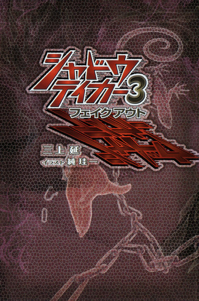
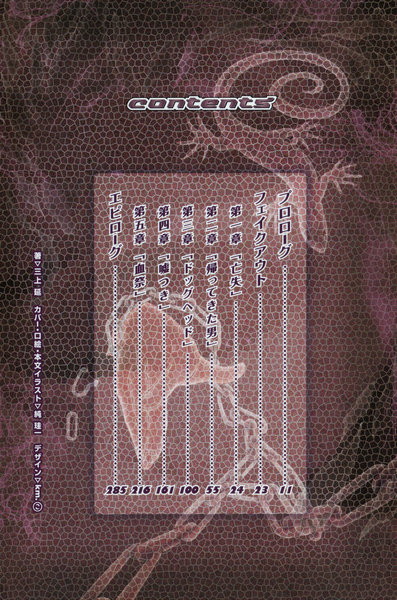
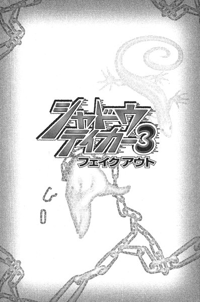
プロローグ
フェイクアウト
第一章「亡失」
第二章「帰ってきた男」
第三章「ドッグヘッド」
第四章「嘘つき」
第五章「血祭」
エピローグ
プロローグ
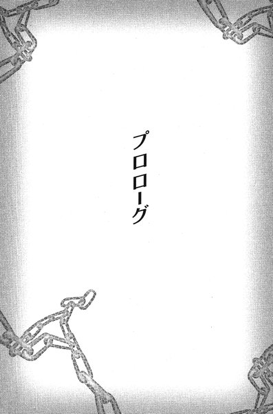
こいつはうそつきだ、と少年は心の中でつぶやいた。
しかし、その言葉を誰にも伝えることはできない。自分の意志で唇や舌を動かすことはおろか、最近は目を開けていることすら難しくなって来ていた。
膝や腰をできるだけ曲げないように設計された、特注の車椅子に彼は乗せられている。携帯用の人工呼吸器のマスクが鼻のあたりを覆っていた。数ヶ月前から人工呼吸器の助けを借りなければ、息をすることもできない状態だった。
「あなた方を心から歓迎しますよ」
と、「うそつき」は言った。車椅子の隣のソファに座っている彼の祖母は、その言葉にうっと声を上げてハンカチを目に押し当てた。少年は祖母に連れられて、その男の滞在するホテルの一室を訪れていた。
「世の中には真理に近い人間と、そうでない人間がいます。それがいつの時代でも人の世の本質です」
「うそつき」は細身の黒いスーツを身につけ、長髪を後ろで縛った四十代前半の男で、少年たちの向かい側にあるソファから身を乗り出すようにしていた。よく日焼けした顔には深い皺が刻まれている。彼の傍らにはスーツと同じ色のマントとステッキが置いてある。見た目はまるで手品師だった。
（こいつはうそをつくのをたのしんでる）
と、少年は思う。時々、男の頬がかすかにゆるむのが分かった。
（騙されている人を見るのがほんとに嬉しいんだ）
「あなたはお孫さんを治療するために、最善の努力を尽くされて来た。私にはそれが分かります。どんなに長く、苦しい旅路だったことか、それを本当の意味で理解できるのは私、この皇輝山天明だけです」
芝居がかった男の言葉に、彼の祖母はぐすっと鼻をすすり上げた。天明と名乗った男は、少年ではなく彼の祖母だけに話しかけている。
「そして、真理の導きにより、今お二人とも私の目の前におられる。全ての苦しみが取り除かれんことを求めて、わたしの前に来たのでしょう？さあ、お孫さんの病状について、なにもかも教えていただけますか」
彼の祖母はハンカチを口元から離した。一瞬、天明が祖母の手を目で追ったのを少年は見逃さなかった。皺だらけの祖母の指には、大きな宝石のついた指輪がいくつも嵌められている──こいつは、ずっと指輪を見てたんだ、と彼は思った。
「ここにいるのがわたしの孫です。私のたった一人の家族です。ごらんの通り、重い病気を抱えて......」
「待って下さい」
天明は祖母の話を遮った。
「あなたがご自分で説明なさる必要はありません。お孫さんの『影』から知ることができますので」
天明はすっとソファから離れて、カーペットの上に片膝をついた。背後の窓から射しこんでいる太陽の光が、床の上に濃い影を作っている。天明はまるで熱いものに触れるように、おそるおそる少年の影に指を近づけた。
「あの......？」
不安げな声で彼の祖母が話しかけようとすると、天明は目を閉じて話し始めた。
「生まれた時はごく普通のかわいらしい子供だった。二、三歳までは走ることも喋ることもできたはずだ。しかし、成長するにつれて、体の自由が徐々に奪われて来た......最初は足が、次に腕が。やがて指一本動かすのも難しくなり、今は呼吸をするのも機械の力を借りなければならない。病院の診断ではせいぜい余命は後一ヶ月、というところですか。現代医療の限界を感じたあなたは、病院の制止を振り切って退院させた」
少年は下腹のあたりにひやりとしたものを感じた。周囲の人がそれに近いことを話していたので、そのことはもう知っている──たぶん、ぼくはもうすぐしぬ。
以前に比べるとそのことにあまりショックを受けなくなっていた。病状が進むにつれて死について怯えるのにも疲れて来ていたからだ。死ぬ前にしたいことや、望みも特に思いつかなかった。
ただ一つだけ、気がかりなのは祖母のことだった。
彼女は天明の言葉に息を呑んでいる。
「そうです！ そうです！ どうしてそんなことまで分かるんですか？」
「『影』がそう語っています。そして、今となっては、あなたの顔も見分けることができない」
再び彼の祖母は顔を覆ってわっと泣き崩れた。
少年の瞼がかすかに震える──ちがう、ちゃんとわかるよ、みんなのはなしだってぜんぶきこえてるってば、と叫びたかったが、彼にはなにもできなかった。
「ええ、ええ、もうわたしを呼んでくれることもありません！」
取り乱した祖母の手を、天明がしっかりと握っている。横目で見ているだけで、胸のむかつく眺めだった。
（ああ、これでおばあちゃんはこいつをしんじた）
「あなたのお孫さんは非常に濃い『影』の力に冒されています」
天明は悲しげに目を伏せて言った。
「かげのちから？」
祖母は子供のように天明の言葉を繰り返した。
「人間の体は生まれながらにして、生命エネルギー、つまりプラスの波動を持っています。同時にマイナスの方へ引き戻す力も働いている。その象徴が人間の影です。わたしは人間の影に触れることで、その人間が持っている病を知ることができる」
「はあ......」
祖母は首をかしげつつもうなずいた。うそだよ、と少年は内心つぶやいた。
「時折、人間の生命力を食い尽くしてしまうような悪い影が存在します。そのような強い『影』、負の波動を『カゲヌシ』と呼んでいます。『カゲヌシ』については、ご存じのように最近世間でも噂にもなっていますが、しょせん世間の人々はその真の意味を知りません」
天明の声がかすかに緊張を帯びたことに少年は気づいた。嘘なりに核心に迫った話をしているのかもしれない。
「残念ながら、この子にとりついた『カゲヌシ』の力はおそろしく強い......わたしは嘘を申しません。完全な病の根絶はおそらく難しいでしょう。ただ、私が天から与えられた力を使って治療を施せば、この子の余命が二倍以上に伸びることは保証いたします。ただ、そのためには私の側にも特別な準備が必要ですし、あなたにはさまざまなサポートをお願いしなければならないが......」
少年は目を閉じた。どうしよう、と思った時、天明の意外な言葉が聞こえた。
「とりあえず、お孫さんと私を二人切りにしていただけますか？」
「さてと」
祖母を部屋から送り出して、ドアを閉めた瞬間に天明の顔つきが変わった。底光りのする目。口元には薄笑いを浮かべている。
「お前は俺の話が分かってるんだろ？」
口調も今までとはまるで違う──こいつのほんとのすがたなんだ、と少年は思った。
天明は後ろで手を組んで、軽やかな足取りで部屋の中を歩き始めた。それでいて、少年からは決して目を離さない。
「俺はお前が入院していた病院へ事情を聞きにいった。医者の診断では脳には問題はなかったらしい。しかし、お前のばあさんはそれを分かっちゃいない。医者の話を信じられなくなって、孫が自分の顔も分からないって思いこんでるわけだ。本物の馬鹿だぜ。お前もそう思ってるんじゃないか？」
少年はかっとなった。確かに祖母は彼がどういう状態にあるのか分かっていない。しかし、彼には祖母の気持ちが分かる。彼は祖母に残された最後の肉親であり、彼の死をなによりも恐れていて──少しだけ思いこみが強くなっている。それだけのことなのだ。どうして悪く思うことができるだろう。
「ってことで、さっきの俺の話は全部嘘だ。お前の影なんか見たってなにも分からん」
唇の端の皺が深くなって、天明の顔にさらに大きな笑みが浮かんだ。
「はっきり分かってることは、お前のばあさんがこれから俺にばんばんカネを吐き出すってことぐらいだな。一ヶ月後か、二ヶ月後か、お前が死ぬ頃にはカネもたまってるだろう。俺は故郷の町に戻る。ちょっとした目的があって、その金を使って色々準備をするつもりだ......ちなみにその目的ってのは」
こらえ切れなくなったように男はぷっと噴き出した。そして、その笑顔のままで言った。
「皆殺しだ」
おしえなくちゃ、と少年は思った。こいつはあたまがおかしいんだ。おばあちゃんにぜったいにおしえなくちゃいけない。
「もちろん、お前はあのばあさんにそのことを伝えられない。いや、絶対にそうしない。......その理由を今から見せてやるよ」
天明はちょうど少年の向かい側、さっきまで座っていたソファのそばで立ち止まる。少年の影と天明の影が、真正面からぶつかり合うようにカーペットの上に落ちて──。
（......え？）
少年は窓を背にしている。だから影がカーペットの上にある。しかし、なぜかこの男の影は少年の反対側から伸びていた──光を背にしていないにもかかわらず。
「出て来い......『龍子主』」
天明の影がまるで息を吹きこまれた風船のようにふくらんでいく。そして、四つ足の大きな生き物へと姿を変えていった。少年は唯一自由になる目を大きく見開いた。
うそだ、と彼は思った。こんなの、うそだ。いるわけない。こんなもの。
「いいか、もしお前がばあさんになにか言おうとしたら、こいつをけしかける。お前のばあさんは丸かじりにされる。こいつは人間を食うんだからな......こんな風に」
天明は歯をむき出して、かちかちかちかち、とカスタネットのように顎を動かした。
「それが嫌なら、黙って見てな。まあ、お前にとっちゃそう難しいことじゃないが」
そして、背筋をそらせて哄笑した。
少年の祖母が戻って来たのはそれからすぐ後だった。
「ああ！」
孫を一目見て彼女は叫んだ。
「この子、泣いていますわ！ もう何年もこんなことはなかったのに！」
「今、わたしの生命エネルギーを少し彼に分け与えました」
天明は落ち着き払って言った。部屋の中に現れた怪物はきれいに姿を消し、男の態度もすっかり元に戻っている。
「そのせいで、ほんのわずかな間ですが、外部を認識することができたようです。あなたがそばにいないことに気づいて、寂しくなったんでしょう」
少年の祖母は涙で濡れた彼の頬に手を添える。彼女もまた涙を流していた。
「ああ、ごめんなさい。おばあちゃんはここにいますよ！」
ちがうんだよ、と少年は思った。こわくてくやしくてはらがたってるだけなんだ。ぼくはおばあちゃんのためになんにもできないから。
「あなたのおかげです！ ありがとうございます！あなたは本当に神様のような、いいえ、神様そのものです！」
ほとんど泣き出さんばかりの祖母が、天明の手に額をこすりつけている。
「いいえ......私の治療はこれからですよ」
天明の頬に浮かぶ笑みを見ながら、彼は心の中で祈りを捧げた。
どうか、かみさま。
ううん、かみさまじゃなくてもいい。どうかこの「うそつき」をたおしてください。おばあちゃんがもっとウソをきかされるまえに。おばあちゃんがこいつにぜんぶおかねをとられてしまうまえに。ぼくがしんでしまうまえに。どうかどうかおねがいします。どうかどうかどうかどうかどうか......
＊
二ヶ月後、夏を迎える前に少年は死んだ。
皇輝山天明は、罰の代わりに多額の報酬を受け取った。
フェイクアウト
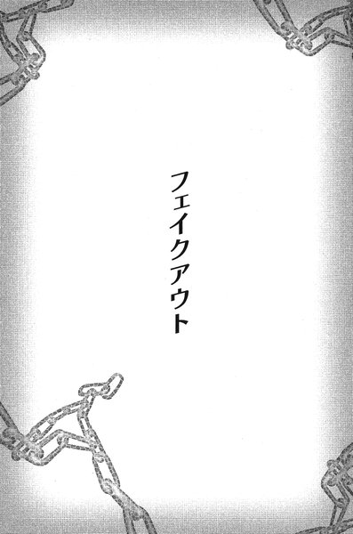
第一章 「亡失」
１
藤牧裕生は、どうにか島まで泳ぎ着いた。
突然、水をかいていた手足に砂が触れた。ざあっと音を立てて波が引いていくと、彼は濡れた砂の中に四つんばいになっていた。
裕生はよろめきながら立ち上がる。水の中にいたせいか、体がひどく重かった。
（ここまで来るの、最近では珍しいな）
聞こえるのは波の音だけだった。彼は人気のない夜の海岸に一人で立っている。目をこらすと、星も月もない夜空の下に、真っ黒な陸地のシルエットがぼんやり見えた。
ここは夢の中だった。
子供の頃から何度も繰り返し見て来た夢だ。途中で目が覚めてしまうこともあるが、いつも暗い波間を漂うところから始まり、やがてこの島へ流れ着く。
裕生はひどく傾斜した砂浜を登り始めた。数歩も歩かないうちに、彼は自分が前へ進めないことに気づいた。足を踏み出すと、そのたびにきめの細かい砂が崩れてずるりと足が滑る。砂を蹴散らすように足の動きを早めてみたが、やはり同じことだった。
（......やっぱりここまでか）
裕生は諦めて膝をついた。ここから先へはいけたためしがない。彼は目の前の急な傾斜を見上げる。砂の坂の一番上に、誰か腰かけているのが見えた。かろうじて輪郭が見えるだけで、顔かたちまでは見分けることはできない。
これもいつも通りだった。砂浜で誰かを見かけるところで終わる──ただ、相手はその時々で違う気がする。髪を長く垂らした女のように見えることもあれば、背の高い男のように見えることもある。
今、彼を見下ろしているのは子供らしい。疲れ切っているのか、首をがくりと傾けている。まるで置物のようにぴくりとも動かなかった。なんとなく子供の頃の自分に似ているような気がした。長い間入院していた頃の自分。そういえば、着ているのも病院の寝間着のように見える。
ふと波の音に混じって、この場所に似つかわしくない耳障りなアラームが聞こえ始めた。
（そろそろ目が覚める頃かな）
と、冷静に彼は思った。もう、この夢の中ではなにも起こらない。そう思いかけた時、
「......して」
「えっ？」
裕生は傾斜を見上げる。確かに目の前の少年が喋ったような気がした。
「今、なにか言った？」
「あいつをたおして」
囁くような小さな声だが、今度は聞き取ることができた。しかし、背後のアラームの音は徐徐に大きくなっている。
「あいつって誰？」
「あいつはうそをつくんだ。いまたおさないと、もうじかんがないよ」
裕生ははっと息を呑んだ。これがもし彼自身の分身だとしたら、「あいつ」というのがなんなのかははっきりしている。彼の幼なじみにとりついている「もの」──決して油断してはならない相手。
「人間が『あいつ』と戦うにはどうしたらいいと思う？」
一瞬の間。今やアラームの音は耳を聾せんばかりになっていた。裕生は耳を澄ませる。少年の言葉がはっきりと聞こえた。
「ちからがなければ、だましてたおすんだ」
目を開けた時には、裕生は自分の部屋のベッドの中にいた。
（......ああいうの、今まであったっけ）
夢の中とはいえ、妙な会話だったと思う。
ふと、裕生は部屋の中に他の人間の気配を感じた。そう言えば、目覚まし時計のアラームもいつのまにか止まっている。
机の上に置いてあったはずの時計を見ようとすると、Ｔシャツの上にエプロンをつけた背の低い少女が立っていた。髪は肩よりも少し長め、整った目鼻立ちと白い肌。ちょっと無表情なことをのぞけば、文句なしにかわいい女の子だった。裕生の目覚まし時計を手に持っている。
「......アラーム、鳴ってましたから」
言い訳をするように雛咲葉は言った。普段、彼女はこの部屋に入ろうとしない。裕生がなかなか起きないので、仕方なくアラームを止めに来たと言いたいのだろう。
「あ、ごめん。昨日、目覚まし止めとくの忘れてた」
八月に入ったばかりだった。夏休みの最中に目覚ましをかける必要はないのだが、昨日はたまたま高校の登校日で早く起きる必要があった。アラームの設定を解除するつもりで、そのまま忘れてしまったのだった。
「朝ごはん、できてます」
そう言い残して葉は部屋を出ていった。ここに住み始めた時から朝食と昼食は葉が作ることになっている。いちいちエプロンをつける必要はない気もするのだが、形から入らなければならないと思っているらしい。今ひとつ似合わないのは、真剣に料理を始めてからまだ日が浅いせいかもしれない。
団地の最上階にある藤牧家に葉は身を寄せている。彼女が一人で住んでいた部屋も同じ棟の一階にある。もし、彼女の身に異変が起こらなければ、きっとそのまま一人暮らしを続けただろうと裕生は思う。
雛咲葉は「カゲヌシ」と呼ばれる怪物に取りつかれている。カゲヌシとは異世界からやって来た「生物」であり、人間に寄生しなければ存在することができない。その人間の抱えている秘めた願望──「ねがい」がカゲヌシを引き寄せ、無意識のうちにカゲヌシに名を与えた人間は「契約者」となる。
カゲヌシは契約者が名を呼ぶことによって具現化し、彼らの秘めた「ねがい」をかなえるかわりに、人間を捕食していく。カゲヌシはやがて成長し、契約者をも完全に支配してしまう。
葉に取りついているカゲヌシの名は「黒の彼方」──双頭の黒犬の姿をしている。このカゲヌシだけは人間ではなく他の同族をエサとしている。そのため「同族食い」として敵視され、同時に恐れられる存在でもあった。
さっきの夢の内容を思い出しながら、裕生はベッドから立ち上がる。裕生は葉が「黒の彼方」に取りつかれていることを知っている数少ない人間だった。どのような形でかは分からないが、いつかは葉は自我を失うはずだった。
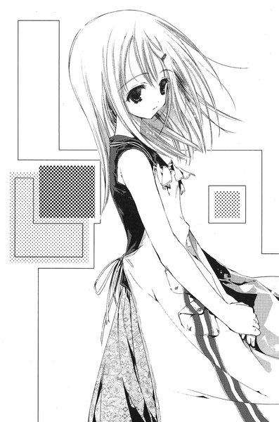
「黒の彼方」から葉を解放するのが裕生の目的だったが、そのためにはあのカゲヌシを倒さなければならない。しかし、人間にはカゲヌシを倒すような力はない。それが裕生の悩みだった。あの夢はそれを反映しているのかもしれない。
「......騙して倒す、か」
と、裕生は口の中でつぶやいた。
２
裕生と葉はキッチンのテーブルを挟んで向かい合っている。
「いただきます」
「いただきます」
今日の朝食はなすの味噌汁とほうれん草のごま和えと焼き魚と大根おろし。絵に描いたような和風のメニューだった。裕生は味噌汁を一口飲む。
ふと、こちらの表情を窺っている葉と目が合った。
「......どうですか？」
「おいしいよ」
裕生は素直に答えた。葉の料理の腕前はもともとちょっと（いや、かなり）頼りなかったが、最近はかなり上達して来ていた。手持ちのクッキングブックに載っている料理を、片っ端から作ろうとしているらしい。
「兄さんは？」
焼き魚に箸をつけながら裕生は尋ねる。
「......ちょっと前に出ていきました」
「今日も？ 元気だなあ」
兄の雄一は都心で一人暮らしをしながら東桜大学に通っているが、今は団地に戻って来ている。毎日炎天下に飛び出していき、小中学生たちに色々と聞き回っているらしい。彼の大学での研究テーマは「カゲヌシをめぐる都市伝説」だった。むろん、雄一はカゲヌシが実際に存在する怪物だとは知らない。
ふと、裕生はキッチンの時計を見る。朝の九時を回っている。父の吾郎や兄の雄一のために食事を用意したのだったら、かなり早くから起きていたはずだ。
「ひょっとして、ぼくが起きるまでご飯食べるの待ってた？」
こくんと葉はうなずいた。
「食べればよかったのに」
いやいやをするように葉は首を振った。何度言っても、裕生が起きて来るまで彼女は待っている。最初は二人切りで食事をするのが照れくさかったが、最近はそれにも慣れて来ていた。
葉は黙々とご飯を口に運んでいる。
このところ「発作」もなく、顔色もよくなって来ていた。カゲヌシの飢餓感は「契約者」の体に発作として現れるが、先月「黒の彼方」は「アブサロム」と「ボルガ」という二匹のカゲヌシを食っていた。今のところは満足しているらしい。一時的な小康状態だと分かっているが、時々こうしていると葉がカゲヌシに取りつかれていることを忘れそうになる。
「今日はどこかにいかないの」
葉は首を横に振った。一緒に住み始めて改めて気づいたのだが、彼女はあまり家から出ようとしない。裕生が出かける時は一緒についてくるものの、彼が家にいる時はじっと閉じこもっている。なんとなく裕生から離れまいとしているようにも見えた。
「お昼、なにか食べたいものありますか」
と、葉が言った。なんでもいいよ、と言いかけて裕生は口をつぐんだ。彼自身も料理を作るので、そう言われるのが一番困るのは分かっている。
「この前作ってくれた冷たいパスタ、美味しかったな。鳥肉とトマトが入ってたヤツ」
彼女は戸惑ったように視線を落とした。
「憶えてない？」
「......作りましたっけ」
彼女の情けなさそうな声に、裕生は噴き出しそうになった。確かに彼女は新しい料理を次々と作ってくれるのだが、なにを作ったのか時々忘れてしまうらしい。今までにも何度かこういうことがあった。
食事が終わった後、葉は流しで皿を洗い始めた。裕生はなにをするでもなく、ぼんやりとその背中を見ている。食後の平和なひとときだった。
こうして見ている分には、あんなバケモノが取りついているとはとても思えない。
「最近、あの犬はなにか言ってる？」
一瞬、彼女の動きが止まった。犬、というのは二人の間では「黒の彼方」のことを指していた。
「......別に」
「体調もなんともない？」
「......体調は大丈夫です」
「そう」
裕生はさっき夢の中で聞いた言葉を思い出した──じかんがない、というあの言葉。ただの夢のはずなのに、あの会話が妙に気にかかっていた。あの夢の中であんな会話を交わしたことは今までなかった気がする。もっとも、忘れているだけなのかもしれないが。
「葉はぼくが書いたあの話、全部暗記してたよね？」
と、裕生は言った。彼はあの夢を見始めた頃、それを下敷きにして物語を作ったことがある。その物語を彼女が気に入っていたために、それが「ねがい」の象徴になってしまった──その題名が「くろのかなた」であり、ある意味では裕生があの「犬」の名づけ親だった。
「......はい」
「自分で書いて言うのもヘンだけど、全部はよく憶えてなくてさ。『時間がない』とかそういう会話って出て来たっけ」
葉は手を止めて考えこんでいる。長い沈黙の後で、彼女はかすれた声で言った。
「なかった......と思います」
「そうだよね」
確かなかったはずだ。彼女に尋ねたのは確認だった。
「あ、そうだ。今度細かいところまでちゃんと教えてくれる？メモにして残しときたいんだ」
「......」
彼女は硬直したように動かない。なにかに耐えているような、張りつめた雰囲気が背中に漂っている。
「......葉？」
訝しんだ裕生が呼びかけた時、電話が鳴った。立ち上がった裕生は居間までいって受話器を取った。
「もしもし裕生ちゃん？ あたしあたし！」
弾んだ声が回線の向こうから伝わって来た。名前を聞かなくともすぐに誰なのか分かった。子供の頃はともかく、今の彼を「裕生ちゃん」と呼ぶのは一人だけだ。
「......天内さん？」
「だから茜でいいってば。久しぶり！」
はあ、と裕生はため息をつく。
「今、病院？」
と、裕生は言った。先月裕生たちは、天内茜と蔵前司という二人のカゲヌシの契約者と知り合っていた。蔵前は警察に疑われることなく数十人もの人間を殺害して来た殺人鬼で、茜は蔵前に家族を殺されていた。
二人が契約していたカゲヌシ──ボルガとアブサロムは「黒の彼方」によって倒されたが、結局蔵前は逃亡し、重傷を負った茜は病院で治療を受けていた。
「うん、病院。もうすぐ退院だけどね。今、ロビーの電話からかけてるの。この前はお見舞いありがとう」
「......それは別にいいんだけど」
軽い疲れを感じながら裕生は言った。
「でも、ぼくが出たからいいけど、うちの苗字ぐらい言ってくれないと、いたずら電話だと思われるよ」
「裕生ちゃんの苗字、忘れちゃった」
「藤牧だよ。何回も言ったのになんで忘れ......」
その時、玄関のドアが開く音が聞こえた。裕生が廊下を覗くと、葉が出ていくところだった。声をかける間もなく、ドアが閉じた。
どこへいったんだろう、と裕生は思った。
「どうかした？」
「ううん。なんでもない......退院決まってよかったね」
「それは別にいいの。あんまり時間ないから急いで話すけど、あのね、なんか変わったことない？」
少し改まった声で彼女は言う。とたんに裕生は緊張した。
「蔵前のこと？」
蔵前は長らく警察の目をごまかし続けて来たが、今は茜の家族を殺害した容疑で全国に指名手配されている。他にも何件かの殺人事件や失踪事件との関与が疑われているらしい。裕生たちは蔵前に対する警戒を解いていない。蔵前は裕生たちに報復を誓って去っていった。おそらく、機会を見て自分たちの前に再び現れるはずだ。
「ううん。蔵前のことじゃなくて......ひょっとするともっと大変なこと」
「どういうこと？」
あの殺人鬼よりも「大変なこと」というのはよほどのことだ。
「あのね......」
茜はわずかに逡巡した。
「あたしたちが初めて会った時のこと、憶えてる？」
「え、あ、うん。憶えてるよ」
裕生は顔をしかめる。忘れようと思っても忘れられるものではない。
「どんな風だったか、ちゃんと説明できる？」
「当たり前だろ。ぼくらが東桜大学の校舎の屋上にいたら天内さんが来て、ぼくらをブッ殺すって叫んで......」
出会った時、茜は葉が自分の家族を殺したと勘違いしていた。危ういところで誤解を解くことができたが、そうでなかったら大変なことになっていたと思う。
「あたし、はっきり思い出せない」
「え？」
裕生は絶句した。
「東桜大学に入ったところとか、戦うのをやめた後は思い出せるんだけどね。裕生ちゃんみたいに説明できない」
「......」
茜のボルガと「黒の彼方」はそこで戦っている。まともに考えて忘れるはずがない。
「あたしが忘れっぽいだけなのかなって思ってたんだけど、他にもいくつか忘れてることがあるみたい。裕生ちゃんの苗字もそう」
茜は一瞬ためらってから、少しかすれた声で言った。
「ところどころ記憶がないの。虫食いみたいに」
ぞくっと裕生の背筋に悪寒が走った。
「......カゲヌシが原因だってこと？」
「カゲヌシは人間の頭の中にいるって裕生ちゃんが言ってたじゃない。それで、だんだん人間と一体化していくって。それってあたしとボルガが混ざり合ってたってことでしょ？だから、ボルガが死んだ時にあたしの記憶の一部が一緒に持っていかれたんじゃないかって」
「......」
「まあ、正直言うとあたしも半信半疑なんだけどね。でも、葉ちゃんにも同じことが起こるかもしれないから、一応報告しとこうと思って。あ、もうお金なくなっちゃう。じゃあ、葉ちゃんにもよろし──」
電話は切れた。裕生は受話器を手にしたまま、しばらく立ちつくしていた。
ありえない話ではないと思う。カゲヌシが言うことを聞かない人間を乗っ取ろうとする時、記憶を奪うのは残酷だけれど有効な方法だと思う。記憶がなくなれば、人間の人格など簡単に壊れてしまうだろう。
ただ、本人も言っていたように茜はかなり忘れっぽい性格だ。単なる物忘れということもありうる気がする。同じようなことが葉に起こっているなら、話は別だけど──。
「......あ」
裕生は受話器を放り出して玄関へ走っていった。サンダルをつっかけて外へ飛び出し、ぐるぐると階段を下りていった。葉はそう遠くへはいっていないはずだ。
彼は大きな×印の描かれたドアの前で足を止める。そこが以前葉の住んでいた部屋だった。半ば確信を持ってドアノブを回す──鍵はかかっていなかった。細めに開けたドアから玄関を覗きこむと、葉のサンダルが投げ出してあった。
裕生は雛咲家に上がり、まっすぐに葉の部屋へ向かう。ふすまを開けた瞬間、机の前に立った葉が黒いアタッシュケースをぱたりと閉じるのが見えた。一瞬、彼女がなにをしていたのか気になったが、すぐにそれを頭から追い出した。
「......なんですか」
葉は硬い声で言った。
「今、天内さんから電話があった」
「......」
彼女は黙って裕生の顔を見つめている。
「天内さん、憶えてるよね？」
「はい」
「天内さんのカゲヌシの名前は？」
彼女の視線が一瞬だけ泳いだ。裕生がなにを確かめようとしているのか、察したようだった。
「......ボルガです」
「ボルガはどんなカゲヌシだった？」
彼女はお腹のあたりで重ねた両手を、ぎゅっと握りしめた。
「空を飛んでて......」
それっきり彼女の言葉は立ち消えになった。
「ボルガはどんな力を持ってた？」
「............よく、憶えてません」
かすかに声が震えている。葉はうつむいてしまった。
時間が凍りついたような気がした。裕生の膝ががくがくと震え始める。
「いつから？」
それは確認だった。自分が作ったことのある料理を思い出せない。前は暗記していた物語を説明できない。どちらもそう以前ではないはずだ。もっと前だったら裕生も気づいている。
「......二週間ぐらい前から」
裕生の目の前が一瞬真っ暗になった。「いつかは」葉はカゲヌシに乗っ取られてしまう、などと思っていた自分が情けなかった。いつか、などという生やさしいものではない。それはもうとっくに始まっているのだ。
「どうして言わなかったの」
ようやく裕生は言った。
「言うのが怖かったんです。もっと先輩に迷惑かけるかもしれないから。今までだってわたしのことで色々......」
葉は突然、顔を覆って泣き始めた。裕生の胸がしめつけられるように痛んだ。彼は部屋の中にふらふらした足取りで入っていき、彼女のすぐそばで立ち止まる。
彼は無言で葉の細い肩にぎこちなく手を回した。彼女はぐすぐすと鼻を鳴らしながら、彼の肩におでこを預けてくる。
蝉の鳴き声がどこかで聞こえる。
（ぼくはバカだ）
と、裕生は思った。葉が言わないのも当たり前だ。言ってくれたところで、裕生になにができるというわけではないのだから。
──今のところは。
「あの『犬』はなにか言ってるの？」
「......わたしに従うようにって。言うことを聞かなかったら、もっとたくさんのことを忘れさせることができるって」
「あいつの嘘だよ。それができるんだったら、とっくにやってると思う」
「わたしもそう思ったけど、でも......」
葉は言いよどんだ。裕生にもひょっとしたらという気持ちがある。万が一「黒の彼方」が自分の意志でより多くの記憶を奪えるとしたら、それだけ葉が「黒の彼方」に取りこまれる日も早くなってしまうだろう。
それに「自由に記憶を奪う」ことができなくとも、もっと別の影響を与える方法を持っているのかもしれない。
（間に合うと思いますか）
裕生が葉を助ける、と告げた時、「黒の彼方」はそう言っていた。あいつはこれが始まることを知っていたんだ、と彼は思った。自分はと言えば、発作が起こらなくなったことで、すっかり気を抜いていた。
（あの夢はこのことだったんだ）
と、裕生は思った。時間がない、というあの言葉は、お告げのようなものだったのかもしれない。
「......葉」
「はい」
「今度、なにかあったら必ずぼくに言って」
なにもできないのは力がないからだ。いや、力に対抗できるだけのものをなにも持っていないからだ。
だとしたら、それを手に入れるしかない。あの「犬」に知られないように。
（あいつと戦うんだ）
裕生は葉の肩に回した手に力をこめた。
３
「気にくわねーな、ったく」
加賀見団地の敷地内を歩いていた藤牧雄一は、浮かない表情でつぶやいた。前を歩いていた買い物帰りらしい主婦が振り向いて彼を見る──顔色を変えて近くの棟へと足早に入っていった。
（どっかにヤバいヤツでもいんのか）
思わず雄一は立ち止まってあたりを見回した。団地の棟と棟の間にある道路に立っているのは彼一人だった。午後三時。一番暑い時間だった。
（......誰もいねえじゃねえか）
不審人物がいるかと思ったのだが。もちろん、真っ黒に日焼けした肌にだらしなく伸びかけた金髪、目が痛くなるような極彩色のシャツと金のネックレスとビーチサンダル、という自分自身の姿がどう見えるかはまったく考えていない。加賀見団地の主婦たちの間で、「最近、東南アジア帰りらしい若いヤクザがうろついている」という噂が流れていることも当然知らなかった。
ため息を一つついて雄一は歩き出した。もちろんヤクザではなく、れっきとした社会学専攻の大学生である。今日一日、加賀見市から隣の鶴亀町まで足を延ばして、「カゲヌシ」の都市伝説について聞き取り調査を行っていた。
「疲れてんのか、俺」
と、彼はまたつぶやいた。どうかしているのも、疲れているのも自分のことだった。
彼は公園の脇を通り抜けて、自宅のある棟に辿り着く。階段を上がろうとした彼は、ふとなにかの薬品らしい刺激臭に気づいた。
一階の雛咲家のドアを見ると、スプレーの落書きがなくなっていた。先月あたりから、このドアにスプレーで大きな×印を描く者がいる。何度消してもいつのまにかまた描かれてしまうので、最近は放っておかれることが多くなっていたのだが。
（さっき消したばっかみてーだな）
ドアに鼻を近づけながら雄一は思う。多分、この異臭はスプレーを消す溶剤だろう。正直なところ、あの落書きにはなにか気にくわないところがあった。中学生の頃、雄一もスプレーの落書きに凝っていた時期があったのだが、イタズラにしてはただの×印は素っ気なさすぎる。それに何度消されても同じドアに同じ落書きを描くのは、なんとなく普通ではないような──。
雄一は階段を上がっていき、最上階の藤牧家のドアを開ける。ビーチサンダルを脱ごうとして、彼は再び同じ異臭をかいだ。下駄箱の上に溶剤の入ったプラスチックの容器が置いてあった。
（......裕生が消したのか？）
それもなんとなく妙な話だった。勝手に住民が消すと建物の塗装を傷めるかもしれないので、落書きは団地の自治会に頼んで消してもらうことになっていたはずだ。
雄一は首をかしげながら廊下に上がる。キッチンの前を通りすぎてから、雄一は後戻りしてキッチンを覗きこんだ。
テーブルに顔を伏せて、葉が眠っている。それは別に不思議ではないが、彼女の頬に涙の跡のようなものが見える。
（留守のあいだになんかあったんかな）
そう思いながら自分の部屋に入った雄一は、今度こそぎょっと立ち止まった。部屋の真ん中に座りこんだ裕生が、熱心にレポート用紙の束に目を通している──問題は畳の上に雄一の持って来た書類ケースが開きっぱなしになっていることだった。雄一の持ち物を勝手に開けて中を見ている、ということになる。
「......なにやってんだお前」
そう声をかけると、裕生は文字通り飛び上がった。
「お、お帰り」
レポート用紙をケースに戻しながら裕生は言う。
「『お帰り』じゃねえだろ。なにやってんだ？」
雄一は静かな声で尋ねる。この場はガツンと叱り飛ばす方がいい気もしたが、正直なところ別に腹は立っていない。もともとレポートは他人に読ませるために書いているのだし、それよりも裕生がこんなことをしている理由に興味が湧いた。
「うん......ちょっと、その、なにが書いてあるのかなって思ったから」
しどろもどろになって裕生は答える。
「あのなァ、裕生くんよ」
雄一はどっかりとその場に腰を下ろす。顎を引き、サングラスを少しずらして相手の顔を見すえた。
「んな言い訳が俺様に通じるワケねーだろ？人を騙す時はもうちっとまともな嘘つけや。なァ？」
低い声で囁くと、裕生はびくっと体を震わせる。別に脅すつもりはなかったが、無意識のうちにドスが効きすぎたかもしれない。
雄一は裕生の顔から目を逸らさなかった。かつての無数のケンカの経験から、人間の怯えは真っ先に目に現れるという持論を彼は持っていた。怯えた人間は相手の視線をまともに受けることができず、ほとんどは逃げを打つか、やけになって殴りかかるかのどちらかになるのだが。
（............お？）
雄一は少し弟への見方を改めた。確かに裕生は怯えているのだが、自分を見失うほどではない。この場を切り抜けようしている者の目つきだった。
「......兄さん、『黄色いレインコートの男』の噂、調べてるんだよね？」
雄一はわずかに眉をひそめる。カゲヌシの噂に付随して、主に小学生の間で広まっている噂であり、その調査の首尾が雄一の不機嫌の原因だった。
黄色いレインコートを着て、顔を隠した男が町をうろついている。その男は人間の影を食う『カゲヌシ』の居場所を教えてくれるという。その男を見ることができたら、その人間はカゲヌシと会わずに済む──。
「それがどうした？」
一瞬、裕生は視線を逸らせた。どう答えたものか、必死に考えているらしい。
「この前、黄色いレインコートを着た男を見た気がするんだ」
それまで余裕たっぷりに裕生を観察していた雄一は、そこで話に釣りこまれた。思わず身を乗り出す。
「どこで？」
「この団地の近くで。夏なのにそういうカッコしてたし、ひょっとしたらあれがそうなんじゃないかって。それで知りたくなったんだよ」
「俺に直接聞きゃいいじゃねーか」
「ほら、噂なんか本気にしてたらおかしいみたいなこと、兄さん前に言ってたじゃない。小学生じゃないんだし、そういうの信じてるって思われるのなんか嫌だったから」
ふーむ、と雄一は首をかしげた。なんとなく釈然としないが、裕生の説明には特に不審なところもないようだった。
「でも、実際のところ『レインコートの男』はいてもおかしくねえぞ」
「え？」
「いや、黄色いコートを着て歩くぐらいだったら、完全にありえねーってわけじゃねえだろ。ま、変人は変人だけどよ、『カゲヌシ』よりゃよっぽど実在の可能性あんな」
カゲヌシよりは、というあたりで、なぜか裕生は居心地悪そうに身じろぎした。
「でもな......実はなんっっか気にくわねーんだ」
「どういうこと？」
「いやそれがな、実はこの何日か、『コート男』の追跡調査をやってたんだよ」
「追跡調査？」
「要するにその噂を誰から聞いたのかを聞いて、そいつのところへいく。そいつからも誰からその噂を聞いたのかを聞いて......っていう繰り返しだな。まー、伝言ゲームを逆に辿ってくワケだ。噂の伝わる速さとか、具体的にどっから来た噂なのかがおおまかに分かるんじゃねえかと思ってよ」
「大変じゃないの、それ」
「いや、調査対象は小中学生だからな。連中の行動範囲ってのは大人よか狭えから、どうにかなんじゃねえかって踏んだワケだ。で、この何日かで俺は三つの『コート男』の噂のルートを辿ってった......で、今日全部ダメになった」
「ダメって？」
「途中でループしたり、分かんなくなったりすんだよ」
「なんで？」
「分かんねえ。とにかく、一定のところで追跡ができなくなる。それ自体は別におかしかねんだが、実は『コート男』の噂には一つだけ変なとこがあってな。『コート男を見かけても、自分が直接見たって言っちゃいけねえ』って」
「......誰かが兄さんに嘘ついたかもしれないってこと？」
ああ、と雄一はうなずいた。
「都市伝説の類で、こういう条件が付くのは珍しい。っていうか、実在するんじゃなきゃ、こんな条件はいらねえ。そうだろ？これじゃ『コート男』を噂のまんまにしとこうとしてるヤツが、どこかにいるみてーじゃ」
雄一はふと口をつぐんだ。以前に聞いたことのある「カゲヌシ」についての妙な噂を思い出していた。人間が怪物に食われるというのが本当の話で、誰かがそれを都市伝説のかたちにしてごまかそうとしている──。
（......まさかな）
この「カゲヌシ」の噂にのめりこみすぎたせいに違いない。雄一はぶるっと首を一振りして、妙な考えを払い落とした。
「まあ、別に俺に断んなくていいから、俺のレポートは好きな時に好きなだけ見ろ。もともと隠してるわけじゃねーし、他のヤツに見せても構わねーぞ」
雄一は立ち上がって部屋を出ていった。気持ちを落ち着けるために一服したかったのだ。
しかし、一服した後もなんとなく気分は晴れなかった。
４
深夜。窓から月の光が射しこんでいる。
葉は布団の中で起き上がると、自分の手を見下ろす。
（わたしは雛咲葉）
彼女は心の中でつぶやき、天井を見上げる。
（ここは加賀見団地の藤牧さんのうち。今わたしが住んでるところ）
自分の記憶がおかしいと思い始めてから、彼女は目覚めると自分がどういう人間であり、どういう状況にあるかを自問するくせがついていた。眠っている間に、日常生活に支障をきたすようなことを忘れているのが怖かったからだ。
（今は八月三日の夜。夏休み。わたしは加賀見高校の一年三組。昨日は登校日だった......）
今のところ、自分自身については特に忘れていることはない。彼女自身を一冊の本だとするなら、そのうちの何ページかが破りとられている程度──今のところは。
それでも、昼間よりも少し落ち着いた気持ちだった。裕生になにもかも話すことができたからだろう。裕生が言った通り、本当はもっと早く言うべきだったと思う。それでも、優しい裕生がもっと自分のために悩むのは嫌だったけれど。
（わたしは二ヶ月前から「カゲヌシ」に取りつかれてる。わたしの中にいるのは......黒の彼方）
その名前を思い浮かべた瞬間、彼女の胸がずきりと痛んだ。裕生が書いた「くろのかなた」の内容をはっきり思い出せなくなったのが、なによりも辛かった。
前半はともかく、後半はよく分からない。時々、彼女は自分の部屋に隠してある裕生のノートを読んでいる。それでも元のように完全に憶えるのは難しい。「忘れていく」というよりは、「憶えにくい」状況になっているのかもしれない。今のところ失われているのは、昔のことよりも最近の記憶が多い気がする。
ふと、かすかな物音を聞いた。
（今のは窓のひらく音）
葉は立ち上がって部屋を出た。
（今は夜。わたしが歩いているのは廊下）
そう自分に言い聞かせながら、暗い居間に入った。そこには誰もいない。
奥の和室へ通じるふすまはぴたりと閉まっていた。
（あそこは雄一さんと吾郎おじさんが寝てる部屋）
彼女は暗がりに目が慣れるのを待って、ゆっくりと部屋の中を見回していった。
（あれはテレビ。あれはテーブル。あれは窓）
あれは──。
「......裕生ちゃん」
彼女は初めて声に出してつぶやいた。
窓の外のベランダに、パジャマ姿の裕生が立っていた。彼女は窓に近づこうとして、ぎくりと足を止めた。
裕生はベランダの柵にもたれて、彼女の方に横顔を向けている。今まで見たことがないような思いつめた目つきだった。ひどく怒っているようにも、今にも泣き出しそうにも見える。葉の胸のあたりがひやりと冷たくなった。
（......裕生ちゃん？）
その時、部屋を振り返った裕生が、葉の姿に気づいた。彼の顔に穏やかな笑みが広がる。彼女は安心して窓へ近づいていった。
「どうしたの？」
ベランダへ出た葉に、彼が言った。こうして間近で見るといつもの裕生だった。さっきは見間違えたのかもしれないと彼女は思う。
「ちょっと目が覚めたんです......先輩はなにしてるんですか」
彼の隣に並びながら葉は尋ねた。
「......ぼくもちょっと目が覚めたから」
裕生は満月から少し欠け始めた月を見ている。もうすぐ夜が明ける時間だった。新聞配達らしいバイクの音が団地のどこかから聞こえる。
夏にしてはひんやりとした風が、二人の髪をかすかに揺すっていった。
こんな時間はいつまで続くんだろう、と彼女は思った。わたしはいつまでこの時のことを憶えていられるだろう。
わたしがわたしでいられるのは、いつまでだろう。
「葉」
裕生が口をひらいた。
「ぼくはただの人間だ」
葉は彼の顔を見上げる。相変わらず、彼は月を見上げていた。
「人間に力はない。でも、力がなかったら......」
彼の言葉がとぎれる。一瞬、さっきと同じ暗い影が顔をよぎり、すぐ元の表情に戻った。なんだろう、と葉は思った。
「......ぼくは葉を助けるよ」
裕生は彼女に笑顔を向ける。
戸惑いながら、葉はこくりとうなずいた。
第二章 「帰ってきた男」
１
「鶴亀駅」という看板のかかった駅舎の前に、佐貫峻は立っていた。無数の蝉の声があたりに反響している。昼下がりの一番暑い時間帯だが、外にいるのはさほど苦にならなかった。重量級の体格のわりに、彼はほとんど汗をかかない。夏は大好きな季節だった。
彼はこの鶴亀から一駅の加賀見にある加賀見高校に通っている。今日は夏休みの課題を片づけるために、同じクラスの藤牧裕生の家へいくことになっていた。鶴亀駅の前で、一緒にいくはずのクラスメイトと待ち合わせをしているのだった。
待ち合わせの時間より少し早く着いてしまったが、かといってどこかの店へ行って時間をつぶすほどでもない。
駅前には歩いている人もまばらだ。隣の加賀見市に比べて、この鶴亀町はさびれている。鶴亀駅の商店街にはシャッターの閉まった店も多く、活気があるとは言いがたい。再開発の手始めとして建てられた駅前のビルも、ほとんど使われないまま半ば廃屋と化していた。
商店街のずっと先に小さな山があり、石造りの鳥居と長い石段が小さく見える。この町の唯一の名所がその山──鶴亀山の頂にある鶴亀神社だった。後数日で夏祭りも始まろうとしている。
先ほどからスピーカーで拡声された男の声が聞こえている──ふと、佐貫は顔を上げた。警察か消防署の防災の呼びかけだろうと気に留めていなかったのだが、よくよく聞くと内容が妙だった。
『......わたしも皆さんと同じようにこの鶴亀町の出身者です。鶴亀、という地名の由来について、真実を知っている者はほとんどおりません。もともとの語源はツルギ、すなわち剣を指します。鶴亀山はかつて関東有数の鉱山であり、銅剣の材料となる銅が産出されたという記録が残っています......』
（なんだ、この話）
佐貫は好奇心にかられてきょろきょろとあたりを見回した。声のありかは例の空き部屋ばかりのビルらしかった。ちょっと迷ってから、彼は声の聞こえる方へ歩き始めた。
『しかし、この鶴亀にはもう一つの意味があるのです。鶴亀町の隣にあるのは加賀見市。これは名前からもお分かりのようにミラー、すなわち鏡を指しております』
（......ウソくせえ）
と、佐貫は心の中でツッコミを入れた。ビルに近づいていくと、両開きのドアが開放されているのが見えた。一階は貸しホールなので、なにかのイベントが行われているのかもしれない。
『鏡と剣──ここから連想されるのは、皆さんもご存じの日本神話に登場する二種類の神器、八咫鏡と草薙剣であります』
いきなりすげえ飛躍だな、と佐貫は思ったが、多少話に引きこまれてもいた。
「......ってか『三種の神器』だろ」
と、ついつぶやいていた。
『こう申し上げると、よくご存じの方はこうおっしゃるでしょう......二種類ではなく三種の神器だろう、と』
佐貫は顔をしかめる。勝ち負けで言うと、なんとなく「負け」の気がした。
『それは違います。もともと『古語拾遺』を初めとする数々の古文献によれば、神器の数は三種類ではなく、鏡と剣の二種類であります。つまり、加賀見市と鶴亀町は対になっており、失われた古代史の鍵となる都市の名残なのです』
佐貫は入り口の横に立てかけられた、大きな縦長の看板の前で立ち止まった。看板には等身大の人間の写真が貼りつけてある。白いタキシードを着て、長い髪の毛を後ろで縛った中年男が満面の笑みを浮かべていた。見栄えのする容姿だったが、きちんと正装を着こなしているわりには紳士らしく見えない。
看板には文字も書きこまれていた。
皇輝山天明ショー・全て見せます！解決します！
宇宙の力！ 天地創造！ あなたの人生！
（......あなたの人生？）
最後の一つだけ妙にみみっちい。
『四年前、鶴亀神社で発見された古文書には、その歴史的事実を示す記述があります。この古文書はなにを隠そう、当時宮司として勤めていたわたしが発見したものでして、仮に『皇輝山文書』と呼ばれております』
男の声はロビーの先にあるホールから聞こえる。建物に入りかけた佐貫はふと首をかしげた。神社の宮司が発見した『皇輝山文書』──まだ佐貫は小学生だったが、そういえばそんなこともあった気がする。
「ご見学ですかー？」
不意に甲高い女の声が耳に突き刺さった。受付のカウンターの向こうに、派手なメイクをした白い着物姿の女が座っていた。まるで似合っていないが、よく見ると巫女装束らしい。コスプレか、と佐貫は思う。
「これ、なんかのイベントすか？」
カウンターに近づきながら佐貫は言う。香水の香りが鼻にしみこむようだった。
「ええ。そうですよー」
沈黙。濃いアイラインとマスカラで固められた目が彼を見上げている。素顔を想像せずにはいられなかった。
「......いや、だからなんのイベントなんすか？」
「健康相談ですとか、後は人生相談ですとか......見学は一切無料ですので、よろしかったらどうぞ」
普通、健康相談と人生相談って別にやるだろ、と思った瞬間、半分開いたままのホールのドアから男の声が聞こえて来た。
『わたしは『皇輝山文書』に触れた瞬間、この古文書に記されている太古の神・龍子主の加護を受けました。人間の人生を見通し、全てを癒す力が備わったのです。その力によってこの四年で五百人もの人々の病と戦って参りました......』
（なんだ、宗教かよ）
それもかなり怪しい種類の。とたんに好奇心が萎えた。佐貫は携帯で時間を確認する。そろそろ、待ち合わせの相手も来る頃だ。
『ですが、わたしたち人間には『カゲヌシ』という恐るべき敵がいます』
踵を返しかけた佐貫は、ふと振りかえった。
（......カゲヌシ？）
その都市伝説には彼も関心がある。以前、加賀見市で藤牧雄一が行っていた調査を手伝ったこともあった。
『人間は生まれながらにして負のエネルギーを背負っています。その象徴こそが人間の影であり、人間を死に至らしめるほどの強い力を持った影は、『カゲヌシ』と呼ばれています。『カゲヌシ』という単語は皆さんもご存じの通り、この地方独特のものでありまして、古代からこの地に伝わってきております。もちろん、わたしの持っている『皇輝山文書』にもその記述があります』
「是非、ごらんになっていってくださいー」
受付嬢が佐貫に声をかける。佐貫はカウンターの上に名簿のようなものが開いているのを見る。名前と電話番号がずらりと書かれていた。
「ここに書きこまないと中へは入れないんすか」
彼女はぱたんと名簿を閉じ、オレンジのグロスでてかてかした唇をにっとゆがめた。
「いいえ。これはですねー、開場前にいらしたお客様に任意でお書きいただいたものですから。そのまま入っていただいて大丈夫ですよ」
「あ、そうすか」
『この町へ戻る直前、わたしは恐るべき難病を背負った少年の治療を行いました。彼は一ヶ月前に天に召されましたが、彼は恐るべき『カゲヌシ』に取りつかれていたのであります』
佐貫は半開きのドアへと近づいていき、ホールの中を覗きこむ。パイプ椅子がずらりと並べられ、奥の方に白い箱のようなステージが見える。「客」の入りは七割程度というところだったが、それでも百人程度はいるようだった。年代にはばらつきがあるものの、客席を占めているのは大半が女性である。
壇上には看板の写真と同じ男が立っていた。白いタキシードの上に同じ色のマントを羽織り、テレビ局で使われているようなインカム式のマイクをかけている。
その男が「皇輝山天明」らしかった。
「......うさんくさ」
佐貫は噴き出しそうになった。ただ、その見た目が逆に警戒心をほぐすようで、ホールの中は思ったよりも和やかな雰囲気だった。宗教団体のセミナーというよりは、デパートの屋上でやっているローカルなイベントのようだ。
「......皆さんの中にはお疑いの方もおられるかもしれない。『本当にこの男にそんな力があるのか』と......あなたはどうですか？......ああ、苦笑いをなさっておられる。では、今からお見せしましょう。今、笑ってらしたあなた、どうぞこちらへ」
最前列にいた女性が天明に手を引っ張られて壇上に上がる。三十過ぎのこれといって特徴のない女性だった。
（......あれ）
佐貫は彼女の顔に見覚えがあった。隣近所というほどではないものの、佐貫の家からそう離れていないところに住んでいる女性だった。確か自宅でピアノ教室を開いている人だと思う。しょっちゅう見かける顔だが、名前を思い出せない。佐貫が必死に記憶を探っていると、
「お名前だけ伺ってよろしいですか？」
マイクを渡しながら天明は尋ねた。
「大久保です。大久保尚子」
佐貫は大久保さん、と口の中でつぶやいた。確かにそんな苗字だった。
「なるほど。では、大久保尚子さん。そこにお立ち下さい」
彼女は天明に促されて、ステージの中央に立つ。照明が調節されているらしく、ステージの奥の白いホリゾントに彼女の影がくっきりと映った。
「わたしは影に触れると、その人物について色々と『見る』ことができるのです」
天明は手袋を外しながら、ホリゾントに近づいていき、大久保尚子と名乗った女性の影に自分の手を重ねる。そして、精神を集中するように目を閉じた。
なにを言うんだろう、と息を詰めて見ていると、
「......私は花が好きでしてね」
不意に天明が言い、会場から気の抜けた笑いが洩れた。
「特に黄色い花が好きなんですよ。今、咲いているのはマリーゴールドですね？実に陽当たりのいい庭だ......花壇の近くに小さな池がありますね。そこを歩いている白い猫が見えます。あなたの飼い猫かな？」
壇上に立った尚子が戸惑ったように天明を振りかえった。なにか思い当たるところがあるらしい。
「動いてはいけません！」
目を閉じたままで天明がぴしりと叫んだ。彼女は動きを止めた。
「わたしにはあなたの住んでいる家が見えています。二階建ての......ベランダに青いシーツが干してありますね。庭から入った部屋に仏壇が見えます。どなたかの位牌があるようだ。これはあなたのお父上かな？非常に近しい関係の男性で......いえ、あなたのご主人ですね。あなたとは少し年が離れていたようですが」
天明が言葉を発するたびに、彼女の表情が引きしまっていく。今や会場はしんと静まりかえっていた。
「ああ、そうです。二年、いや三年前に亡くなられたようだ......事故......そうですね。トラックにはねられたようです。一瞬の出来事でした」
「......どうしてそんなことが」
震える声で尚子が言った。
「影が語っています。これが私の守護神『龍子主』がわたしに授けた力です」
（トリックだろ）
と、一番後ろの席から見ていた佐貫は心の中でつぶやいた。こういう「透視」のマジックは珍しくはないし、このようなマジックは回答者がグルになっていることが多いと聞く。しかし、昔からこの町に住んでいるごく普通の女性が、こんなうさんくさい男のショーにわざわざ協力するとも思えない。どう見ても彼女は本気で驚いていた。
具体的にどんなトリックを使っているのか、さっぱり分からなかった。
「あなたは色々とご苦労を重ねておられるようだ。お子さんもいらっしゃらない。お一人で暮らすのは心細いことでしょう。あなたの心痛が見えます。そこへ忍び寄る『カゲヌシ』もね」
すっと天明は影から離れ、背後から尚子の肩に手を乗せる。彼女はびくっと体を震わせた。
「あなたのプライバシーを暴くのが目的ではありません。この程度にしておきましょう。もし、よろしければ後で相談に乗ります......私は常にあなたの味方ですよ」
彼女は無言のままうなずくと、頼りない足取りでステージから降りる階段へ向かう。強いショックを受けているようだった。
「ああ、お待ち下さい」
天明が声をかける。彼女はおそるおそる振り向いた。
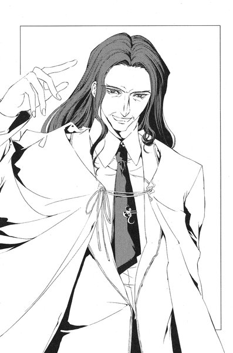
「申し訳ありませんが、あなたの影を拝見した報酬をいただきます」
天明はさっと頭上に手を挙げる──突然、空中にぱっとなにかが現れて、天明の手の中へ落ちてきた。それは一輪の黄色い花だった。
「お宅の庭に咲いていたものです......一本ぐらいなら構わないでしょう？お宅に帰ったら、庭を見てごらんなさい。一本なくなっているはずですから」
尚子は足早にステージを降りると、元の席に戻った。たった今目の前で起こったことが信じられないというように、会場は水を打ったように静まりかえっていた──やがてどこかからか拍手が起こり、それはあっというまに会場を埋め尽くしていった。立ち上がって手を叩いている客もいる。
（......どうやって出したんだ？）
万雷の拍手に耳を傾けながら、佐貫は考えている。本当にトリックなのか、という考えがちらりと頭をよぎった──もちろんトリックに決まってる、とすぐに思い直した。
考えこんでいた佐貫は、携帯の着メロが鳴っていることに気がつくまでしばらく時間がかかった。
（あ、いけね）
待ち合わせの相手が着いたのかもしれない。佐貫は携帯を出しながら、慌てて外へ走っていった。
２
ロビーに戻って、電話に出ようとしたとたんに着メロは止まった。履歴を見ると「西尾みちる」の文字がある。佐貫はそのままドアを抜けて、駅舎の方を見る。
さっきまで佐貫が立っていた場所に、ストレートの髪を長く伸ばした背の高い少女が立っていた。ちょうど電話をかけ終わったところらしく、携帯のパネルを閉じてしまおうとしている。ふと、彼女は顔を上げて佐貫の方を見る。切れ長の目とくっきりした眉は、美人というよりは凛々しい印象だった。
佐貫は小走りで彼女の方へ近づいていき、
「おう」
と、声をかけた。
「ああ」
西尾みちるも短く答えた。
「今、電話したんだけど」
「知ってる。待ったか？」
「全然」
「いくか」
「うん」
ひどく素っ気ない会話だが、彼らにはそれが普通だった。二人は切符を買って鶴亀駅のホームへ向かう。電車を待っている間も、無言のままベンチに座っている。周りから見ればそれほどでもないが、二人は大変に仲がいい。かといって付き合っているわけではない。あくまでも「親友」である。
次に二人が口を開いたのは、電車に乗って加賀見駅についてからだった。
「どうだった。神社のバイト」
思い出したように佐貫が言った。彼女が住んでいるのは鶴亀町ではなく加賀見市の方なのだが、ここ何日か鶴亀神社で巫女のアルバイトをしている。
「面倒くさい。もうやめたい」
と、みちるは顔をしかめた。
「巫女さんの服ってすごく暑いんだよ、あれ」
「なんで神社でバイトやってんだ？」
「うちの叔母さんがあそこの神主さんと知り合いで、無理に頼まれたみたいなんだ。姉さんもいくはずだったんだけど、急に親戚の家にいかなきゃいけなくなって。あたし一人でいくことになっちゃったの」
「へえ」
と、佐貫は言った。そこで断らないあたりがこいつらしいと佐貫は思った。みちるは責任感の強い性格だった。
「バイトって言っても掃除とかものの整理とか、ただの雑用だけどね。ほんとはもう一人連れて来てくれって言われてて。まあ、もう無理だけど」
二人は加賀見駅を出て、団地へ向かって歩き始めた。アスファルトからもやとともに熱気が上がっている。
「そういえば、鶴亀の駅で待ち合わせしてる時、変なイベント見てなかった？」
と、みちるが言った。
「......皇輝山天明？」
名前が派手なので、憶えてしまった。
「あの看板の人がそういう名前なんだよね？」
「知ってんのか、あのおっさん」
「昨日、あたしが働いてたら神社に来たよ。宮司さんに会いに来たみたい」
「そういえば昔、鶴亀神社の神主だったとか言ってたな」
「あれが元神主？ ほんとに？ なんかすごいタキシード着てたよ」
「いや、ほんとかどうか知らないけど。うさんくさいってのは俺も賛成だな」
「夏祭りでイベントやるマジシャンかなにかじゃないの、あれ」
鶴亀神社で行われる夏祭りは、三日後に迫っている。最大の見物が鶴亀山から見える花火大会だった。
「マジシャンっていうか、超能力者のつもりっぽいぞ」
怪しさ爆発の「天明ショー」について、佐貫は自分が見た範囲で一通り説明した。聞き終えるとみちるは首をかしげた。
「それでかなあ。社務所の前で宮司さんと言い合いみたいになってたよ」
「言い合い？」
思わず佐貫は聞きかえした。
「あの神社の宮司さんってすごくいい人なんだけど、顔真っ赤にして怒っててさ。『また警察に調べられたいんですか』って」
みちるの話に、佐貫はあっと声を上げた。
「......そうか。そうだった」
さっき『皇輝山文書』の話を聞いた時、思い出しかけたのはそのことだったのだ。四年前、鶴亀町で謎の古文書が発見されたというニュースがこの町を賑わしたことがあった。一時はマスコミも取材に来て、古代史マニアの間では結構有名になったらしい。しかし、それを「発見した」男は偽造の疑いをかけられ、警察にも取り調べを受けたという話だった。
小学生だった佐貫は詳しく知っていたわけではないが、結局その男は町から逃げ出したという顛末だったと思う。
その男が、この町に帰って来た。
佐貫はさっきの「ショー」を思い出した。確かにどこからどう考えても怪しい。しかし、あの男の一挙手一投足には妙な説得力がある。それがいわゆるカリスマ性から来ているのか、あるいは本当になにか能力を持っているのか、そのあたりはよく分からなかった。
（......皇輝山文書、か）
佐貫は自分をリアリストだと思っているし、オカルトにはあまり興味がない。しかし、万が一謎の古文書が存在し、それがあの男に「影」を見る力を授けたとしたら大いに「面白い」ことである。それに、天明が口にしていたカゲヌシの話も大いに気になる。
「ちょっと調べてみるか」
と、佐貫はつぶやいた。
３
裕生は加賀見団地の公園のベンチに座っている。
（やっぱり来ないな）
彼はこのあたりから、自分の住んでいる棟の入り口をずっと見ている。かろうじて今いる場所は木陰になっているが、それでも座っているだけで汗が噴き出してくる。あたりの景色は日射しで白くかすんでいるようだった。
三日前に裕生は雛咲家のドアに描かれていた×印の落書きを消した。ほとんどの人間は知らないことだったが、あの落書きには意味がある。「黒の彼方」の肉体に刻まれた「サイン」──カゲヌシの個体を識別するためのしるしと同じものだった。カゲヌシがそこにいることを示すかのように、何者かがカゲヌシの居場所を回っては、その建物に「サイン」を描いていく。
裕生は雄一の調べている「黄色いレインコートの男」が、その落書きの犯人ではないかと疑っていた。一ヶ月前、初めて雛咲家のドアにサインを見つけた日、裕生は黄色いレインコートを着た人影が立ち去っていくのを見ている。
「カゲヌシ」の居場所を示して回るのは、人間に対する警告としか考えられない。兄の書きかけのレポートには、レインコートの男は「人間にカゲヌシの居場所を教えてくれる」存在と書かれている。真実が噂話の形で流れているのではないかという気がした。
「黒の彼方」を倒すには、まずこの男と会わなければならない、というのが裕生の結論であり、あの落書きを消したのもそのためだった。
あの「サイン」は何度消してもいつのまにか描かれてしまう──つまり逆に言えば、レインコートの男を呼ぶには落書きを消せばいい。
この三日、裕生はずっと待ち続けていた。むろん、「サイン」を知ることができる相手が、ただの人間ではありえないことは承知している。カゲヌシとの契約者か、あるいはもっと危険な存在かもしれない。しかし、葉のことを思えばなりふりかまってはいられない。覚悟を決めたつもりだったのだが。
今日に至るまで何事も起こっていない。
裕生はコンクリートの建物を見上げる。最上階のベランダに、干した洗濯物を取りこんでいる葉の姿がある。ふと、彼女が裕生の方を見た──軽く手を振ると、怪訝そうな顔をしながら部屋の中に戻っていった。
（......「黒の彼方」のせいかな、やっぱり）
男が現れない理由は、それ以外に考えられない。同じように「サイン」に遭遇した二人のカゲヌシの契約者は、落書きを消しても「気がつくと」また元のよう描かれていると言っていた。つまり、その付近にカゲヌシがいる時は、相手は決して「サイン」を描きに来ないということだ。
裕生はこめかみのあたりに指をあてて考え始めた。ということは、「黄色いレインコートの男」と会うには、葉を遠ざけて裕生自身はここに残らなければならない。問題は葉がまったく加賀見団地を離れようとしないことだった。外出するような気分になれないことぐらい裕生にも察しはついているが、それでもなにか手を打たなければならない。
ふと、足音が公園のベンチに近づいてきた。顔を上げると、目の前に葉が立っていた。
「なにしてるんですか」
あの「黒の彼方」を倒す方法を探してるんだ。もう時間がないから。
「ううん。別に。ちょっと考えごと」
「......」
裕生は「黒の彼方」を倒すと決めた時から、自分がなにをしようとしているのか彼女に説明するのをやめた。彼女に伝えるということは、「黒の彼方」にも伝えるのと同じだ。こちらの動きを悟られてはならない。
本気で戦うつもりであれば。
本気で彼女を救うつもりであれば。
「どこかに出かけるの」
「団地のスーパーに」
最近では彼女の唯一の外出先だったが、その程度離れたぐらいでは「レインコートの男」は現れないらしい。
「そう」
裕生は彼女の目を見ずにつぶやいた。
葉はなにか言いたげにその場でもじもじしていた。彼女が不審に思っているのは分かっている。しかし、こちらの意図を説明するわけにはいかない──なにかうまい方法があればいいのだけど。
「スーパー、いかないの」
一瞬、葉はなにかを言いかけて、結局その言葉を呑みこんだらしかった。
「......いってきます」
葉は踵を返して歩き始めた。少しうつむき加減の彼女の背中を見送りながら、裕生は唇を噛んだ──あまり時間がない。
彼女の姿が見えなくなってから、裕生はベンチから立ち上がった。少し離れたところに、二人乗りの錆びたブランコがある。なんとなく歩いていって、誰も乗っていない箱を指先で押す。このブランコにも葉と裕生には思い出がある。
（まだ、あのこと憶えてるのかな）
金属の軋むかすかな音に耳を傾けていると、
「藤牧！」
葉とは違う女の子の声が聞こえた。はっと振り向くと、公園の外にみちると佐貫が立っている。裕生は二人の方へ走っていった。
「二人ともどうしたの」
と、裕生は言った。佐貫もみちるも、普段学校へ持っていくバッグを肩に下げている。
「はあ？」
佐貫はあきれたように眉をしかめた。
「お前ボケてんのか。夏休みの課題、みんなで協力してやるって話だったろ。うちでやろうって言ったのお前じゃないか」
そう言えば、この前の登校日にそんな約束をした気がする。この数日、それどころではなかったのですっかり忘れていた。
「......今日だっけ」
「今日だろ。上がっても大丈夫か？」
「別にそれは平気だけど......」
裕生は言い淀む。この場所を離れるのにためらいはあるが、どうせこのまま見張っていても何も起こらないだろう。
「なんでもない。いこう」
裕生は二人と並んで歩き始めた。ふと、みちるがいたずらっぽい顔で裕生を肘でつつく。
「さっきブランコでなにしてたの？ なんかすごく真剣な顔してたけど」
裕生はあいまいに笑って答えなかった。
４
佐貫は別として、みちるが裕生の家に上がるのは初めてだった。
藤牧家の居間に通された彼女は、きょろきょろと室内を見回している。佐貫は彼女の隣でバッグから課題のプリントを取り出している。裕生はノートや辞書を取りに自分の部屋へいったままだ。
大きな座卓がさして広くもない部屋の中央に置かれていて、後は目を引くような家具はない。ただ、部屋の中はきちんと隅々まで片づいており、そのことにみちるは驚いていた。裕生の様子では自分たちが来ると思っていなかったらしい。男しかいない家のはずなのに、普段からきちんと片づけているのだ。家事をやっているのは裕生だというから、まじめな裕生の性格のたまものだろう。
（昔のあたしだったらドキドキなんだろうなあ）
と、みちるはぼんやり思った。もちろん彼女の心の秘密だったが、中学一年の頃の西尾みちるにとって、藤牧裕生は「初恋の人」だった。今となっては「ちょっとトロいけど仲のいい友達」なのだが、時々昔の記憶がフラッシュバックして戸惑うことがある。
「そう言えば今日の藤牧、普段となんか違わない？」
みちるは佐貫に言った。
「そうだったか？」
自分のノートをめくりながら佐貫が言った。そう言われるとみちるも自信がない。しかし、公園のブランコのそばに立っていた裕生は、少し哀しげな目をしていたような気がする。
ちょうど初めて裕生に会った頃のように。あの中学一年の春。病室に入っていくと、ベッドの中で色の白い少年がうつむいて──。
「あ、うーん......はいストップ！」
みちるは声に出して、強引に「あの日の思い出」の再生を止めた。
「どうかしたのか？」
怪訝そうに佐貫がみちるを見ている。みちるはふるふると首を振った。
「なんでもない」
その時、ドアの開く音が聞こえた。こんな時間に誰が帰ってきたんだろう、と思っていると、スーパーの買い物袋を両手にぶら提げた雛咲葉が現れた。
みちるたちを見て、彼女は凍りついたように立ちすくんだ。同じようにみちるも心底驚いていた。買い物袋を持ち、チャイムも鳴らさず、声もかけずに家に入って来る──どう見ても葉はここに住んでいた。
「お、こんにちは。夕飯の買い物？」
唯一、いつも通りの佐貫が声をかけた。
「はい......こんにちは」
「あ、あたしたち課題やりに来たの。こないだの登校日にそういう約束してて」
みちるは慌てて言った。なぜか妙に後ろめたい気持ちだった。
「......あの、ごゆっくり」
消え入りそうな声で言って、彼女はキッチンの方へ立ち去った。その途端、みちるは佐貫の肩をぐいとつかんだ。
「ねえ、あのさ。どうなってるの？」
と、小声で佐貫に話しかける。
「なにが？」
「あの子、なんでここにいるわけ？」
ああ、と佐貫はこともなげに言った。
「ここに住んでるんだってよ。聞いてなかったのか？」
「聞いてないよ！」
夏に入る前にそういう話があったことは知っているが、その話はなくなったと思っていた。まさか本当に一緒に住み始めたとは。
「あたしたちこんなところに来ていいの？」
「なんかまずいのか？」
「え、だって......」
と、言いかけてみちるは口をつぐんだ。うまく説明できない。なんとなくいたたまれない気持ちだった。
「意識しすぎだろ。大丈夫だよ」
「......」
まあ、ここに住んでても住んでなくてもどっちでもいいんだけどさ、と、みちるは自分に言い聞かせた──あたしには関係ないし。
その時、裕生の部屋のふすまが開く音が聞こえた。
「あ、お帰り。早かったね」
裕生の声だった。葉に話しかけているらしい。
「言い忘れてて悪かったけど、あっちの居間で勉強するから」
「はい......あの、野菜が安かったからたくさん買っちゃったんですけど」
「別にいいよ。なに買うかは葉に任せてあるし」
ぴくっとみちるの耳が反応した。いつから名前を呼び捨てにするようになったのだろう。無意識のうちに彼女は耳を傾けていた。
一瞬の間。
「なんともない？」
と、裕生が言った。
「......昨日と変わらないと思います」
どういう意味、とみちるは思った。前にも思ったことがあるけど、ひょっとしてなにか病気にかかっているのかも──。
はっと彼女は我に返った。これではただの盗み聞きである。自分が恥ずかしくなった。
（あたしには関係ないこと）
と、もう一度自分に言い聞かせた。
三人の「勉強会」は大して時間をかけずに終わった。それぞれの得意科目を参考にしつつ、課題の分担を割り振っていって、全員が苦手な教科だけは次に集まった時に皆でやる、ということに決まった。
座卓の上に広げられていたプリントやノートはすっかり片づけられて、今は三人とも葉の持って来てくれたアールグレイのアイスティーを飲みながらおしゃべりをしている。よくよく考えれば計画を立てただけで課題はなに一つ終わっていないのだが、なんとなく大きな山を乗り越えたような気持ちになっていた。
先ほどから佐貫はずっと自分が見た「皇輝山天明ショー」の話をしている。みちると裕生はその聞き役に回っているのだが、みちるは少し裕生の様子が気になっていた。
（やっぱり元気ない......みたい）
裕生の様子はおかしいと思う。しかし、経験上彼女は自分の注意力にあまり自信を持っていなかった。
「そう言えば、藤牧先輩って今も『カゲヌシ』の噂、調べてんだろ」
ふと、佐貫が話題を変えた。彼は裕生の様子に気づいていないらしい。
「どういう調査してんのか、聞いてるか？」
「あ......さあ、よく分からないけど。それがどうかしたの？」
少しためらいがちに裕生は言った。
「その『皇輝山天明ショー』の中で、『カゲヌシ』のことをわけの分かんない説明してたんだよ。ひょっとしたら結構有名なのかと思ってさ」
へえ、と裕生は生返事をする。佐貫の説明はあまり頭に入っていないように見えた。
「兄さんの部屋に書きかけのレポートがあるから、よかったら読みなよ」
「いいのか？」
「他の人に見せても構わないって言ってたから。持って来ようか」
立ち上がりかけた裕生を佐貫が押しとどめた。
「いいっていいって。自分で探して読むから」
佐貫はうきうきと立ち上がり、部屋から出ていった。
みちると裕生は無言でその背中を見送った。
妙な沈黙が落ちて来た。この部屋に二人っ切りだと思うと、みちるはなんとなく落ち着かなかった。学校ではいくら二人でいてもなんとも思わないのだが。
うろうろと視線をさまよわせた末、みちるは口を開いた。
「そう言えば、もうちょっとで鶴亀神社のお祭りだよね」
去年も佐貫を含めて三人で遊びにいった。みちるは神社でバイトしているが、後数日で終わると聞いている。お祭りが始まる頃には暇になるはずだ。
「今年も一緒にいく？」
裕生の表情がわずかにくもる。とたんにみちるは動揺した。
「あ、佐貫も一緒だよ」
そう付け加えてから、みちるは自分がつくづく嫌になった。佐貫が一緒なのは当たり前だ。二人っ切りでお祭りにいくはずがないのだから。
（なに言ってんだろうあたし）
沈黙。裕生は空になった自分のコップをじっと見ている。さっき公園で見た時のような、少し陰のある表情だった。
「......藤牧？」
そう呼びかけると、裕生ははっと顔を上げた。
「あ、うん。いけたらいきたいんだけど。ここんとこちょっと忙しくて」
「......」
公園でたたずんでいた裕生をみちるは思い出す──あまり忙しそうには見えなかったが、そのことを直接尋ねてはいけない気がした。
「藤牧、最近なにやってんの」
しかし、間接的には尋ねていた。
「......家にいるよ」
だから家でなにやってんのよ、とみちるは思ったが、苛立つよりも裕生の様子が気になった。今、この瞬間にもなにか別のことを考えているようだった。
「......本当は外に出てもらわないといけないんだけど」
ふと、独り言のように彼はつぶやいた。
「え？」
今、なんか変なことを言わなかった？
今度こそきちんと聞き出そうとした時、裕生は急にみちるに笑顔を向けた。
「西尾はなにしてるの？ 夏の間どこかでバイトするって言ってなかったっけ」
みちるは戸惑ったが、結局問いただすのはやめることにした。
「......神社でやってるよ。まあただの雑用だし、後何日かで終わるんだけどさ」
実は今日あたりで終わるはずだったのだが、思ったより仕事が長引いていた。
「宮司さんは後一人ぐらい手伝ってくれる子が欲しいって言ってたけどね。でも、急に何日かだけ働いてもらうのって難しいし、バイト代もそんなに」
みちるは言葉を切った。裕生が大きく目を見開いて彼女の顔を見つめている。
「え......なに？」
「......それだ」
裕生は急にみちるの肩に手をかけて、ぐっと顔を寄せて来た。
（え、な、なに？）
唇が目の前に近づいてくる。いきなりのことで、みちるは完全に気が動転していた。でも、さすがにこれは張り倒さなければならないと思い直した。みちるが腕を上げかけた瞬間、裕生の口が開く。
「......それ、葉でも大丈夫かな」
ただの内緒話らしい。ほっとみちるは息をついた。
「え？......うん。大丈夫だと思うけど」
裕生につられて、彼女も小声で答えた。
「ちょっと誘ってみてくれない？」
「......」
どうして内緒で相談する必要があるのかよく分からなかったが、断る理由も思いつかない。神社が人手を欲しがっているのは本当だった。
「いいよ。でも......」
なんでそんなことあたしに頼むの、と質問しようとした瞬間、キッチンから足音が聞こえた。みちるは慌てて裕生から体を離す。お盆を持った葉が現れた。
「コップ、片づけていいですか」
「うん。いいよ」
裕生とみちるは同時に答えた。妙な雰囲気を察したのか、彼女はちょっと不思議そうな顔をした。彼女が無言でコップをお盆に載せている間、裕生はちらちらとみちるの方を見ていた。
言ってくれ、ということなのだと思う。以前にも裕生の話を聞いて、変なことを引き受けてしまったことがある。今回も気は進まないが、一度誘うと言ったからには誘わなければと思った──責任感が強いのは彼女の性分だった。
みちるは咳払いした。
「あのね、雛咲さん」
少し緊張しているせいか、我ながらよそゆきの声になっていた。葉は手を止めてみちるを振りかえった。
「あたし、鶴亀神社で臨時のバイトしてるんだけど、人手が足りないの」
「......」
「お祭り前の何日かでいいんだけど、手伝ってくれない？」
葉は凍りついたように動かない。重い沈黙が流れ、みちるは不安にかられた──あたしなんか変なこと言ったかな。
やがて、彼女は重い口を開いた。
「......できないです」
「あ、そう」
みちるは半分ほっとしていた。これでとにかく義理は果たした。
分かった、じゃあ他の人を捜すから、と言いかけた時、
「どうして？ 別に予定があるわけじゃないだろ」
と、裕生が口を挟んだ。
「夏休みの間、全然家から出ないじゃないか。よくないよ、そういうの」
葉は頬を叩かれたように呆然としていた。かわいそうなぐらい顔が青ざめている。
「......わたし、一人でいくんですか？」
やっとのことで葉がつぶやいた。いやだから、あたしもいるんですけど、とみちるが言おうとした時、葉が裕生に向かって言った。
「先輩は？」
（はあ？）
みちるはその問いにぎょっとして、二人の顔を交互に見た。今の葉の発言はどう考えても、わたしと先輩はいつも一緒にいるのが当たり前なのに、という前提に立っている。そこから導き出される結論は、
（この二人、付き合ってるんだ）
という以外にはありえない。みちるは力が抜ける気分だった。それならそうと早く言ってよ、と言いたくなった。
「ぼくはいかないよ。別にいくことないだろ」
少し冷めた声で裕生が言った。
「とにかく、少しは外に出なよ。その方がいいって」
さすがにみちるも状況が少し呑みこめてきた。要するに裕生はなにかの都合で、葉を外出させたがっているのだ。おそらくこの団地でなにかあるのだろう。例えば、葉に見られたくない相手に会うとか。
とたんにむかむかと腹が立ってきた。馬鹿にするんじゃないわよ、とみちるは思った──ただ、「あたしを」なのか「この子を」なのか、自分でもよく分からなかった。
「藤牧、ちょっといい？」
みちるは裕生の腕をつかんで立たせると、窓の方へ引きずっていった。二人でベランダへ出ると、葉を部屋に残したまま後ろ手に窓を閉めた。
「どうしたの？」
裕生はびっくりしているらしい。みちるは腰に手を当てて、じろりと裕生を見た。
「あのね、藤牧とあの子がどうなってるのか、あたしにはどうでも......」
ほんの一瞬だけみちるはためらった。
ずっと以前に味わった甘さと苦さが胸の奥でじわりと広がる──だが、すぐにそれを振り捨てた。
「どうでもいいんだけど、あたしを利用したりするのはやめてくれる？痴話ゲンカはあたしの知らないとこでやって下さい」
痴話ゲンカ、というところで裕生の顔がぱっと赤くなった。
「ち、痴話ゲンカ？ なに言ってるの」
「じゃあなんなの？ あの子と付き合ってるんでしょ？」
「付き合ってないよ！」
声が大きくなっていることに気づいて、二人は慌てて声を低くした。
「事情は言えないけど、葉がここにいるとまずいんだ。西尾とか佐貫じゃないと、こういうこと頼めないと思って」
「なにそれ。ちょっとぐらい説明してくれないと──」
その時、かつかつと窓を叩く音が聞こえた。二人が振り向くと、ガラスの向こうに葉が立っていた。裕生は窓を開けて、
「どうしたの？」
と、声をかけた。葉は胸の前で組んだ手をもじもじと動かしていたが、やがて意を決したように顔を上げた。
「あの......」
葉が見ているのはみちるだった。
（え、あたし？）
「わたし、やります」
葉は細い声で言った。みちるははあ、とため息をつく。理由は尋ねなくても分かった。
「......ほんとにいいの？」
みちるが言うとと、葉はこくりとうなずいた。
「じゃあ、明日の朝九時に鶴亀駅に来てくれる？」
葉はもう一度うなずいた。そして、コップの載ったお盆を手に取って居間を出ていった。
「よかったね。いってくれるって」
みちるは皮肉っぽい声で言った。
「......でもどうしたんだろ、急に」
裕生はけげんそうな顔をしている。
「自分で考えたら」
みちるは彼を残して、部屋の中に戻った。
ほんとに藤牧はどこまで鈍いんだろう、と彼女は思った。
あんたがいけって言ったからに決まってるじゃない。
５
ふと我に返ると、皇輝山天明はどこかの門前に立っていた。
「どこだ、ここは」
と、天明はつぶやいていた。
鶴亀町のどこかであることは間違いないらしい。ほとんど太陽の沈みかけた西の空に、鶴亀山のシルエットがぼんやり浮かんでいる。路肩には彼の車が停めてあった。
俺はなにをやっているんだ、と、天明は思った。
彼はぴったりした黒のスーツを着ている。ネクタイもＹシャツも黒一色で、まるで彼自身が影のようだった。
夕方にホテルを出たのは憶えている。入り口で従業員がスプレーの落書きを消していた。斜めに傾いた正方形の中に黒い点──それが「サイン」であることは天明にも分かっていた。しばらくそれを眺めてから、彼は自分の車でここへ来た。
これといった特徴のない二階建ての家だった。二階のベランダにはしまい忘れた青いシーツが生ぬるい風にたなびいていた。錆びたフェンスの隙間から、真っ白い猫がするりと敷地の中へ入っていくところだった。フェンスの向こうには小さな庭が見える。
門柱の表札には「大久保」という苗字があり、その隣には「大久保ピアノ教室」というプレートもかかっている。
「......あの女の家か」
数時間前に「影を見通して」やったあの女。庭の一隅に赤いレンガで囲われた場所があり、目に染みるような鮮やかな黄色の花が咲いていた。
天明はふらふらと門を開けて中へ入る。
（なにをしに来たんだろうな）
最近、物覚えが悪くなっている。いや、ところどころの記憶が消えているのだ、思い出せない昔のことがいくつもある。時々、自分の頭が自分のものではないような気さえする──この数ヶ月、彼と一緒にいる「あれ」のせいだということは分かっていた。
この皇輝山天明の分身。龍子主。
彼はまっすぐに庭の奥へ向かった。庭に面した部屋の窓は開け放たれていて、その中は和室になっている。
例の花壇の前で片膝をついた。黄色い花弁の群れをかき分け、目を近づける──一輪だけ茎の半ばからもぎ取られていた。
（悪くない仕事だ）
天明は苦笑する。しかし、ここへやって来たのはその確認のためではないはずだ。
「......誰？」
家の方から鋭い声が響く。天明はふわりと立ち上がった。
「え、天明先生！ どなたかと思いました」
窓のそばに大久保尚子が立っていた。
「こんばんは」
と、天明が言った。尚子は頭を下げる──どうして、この人は庭にいるんだろう。
黒ずくめの服も気になった。暮れかかった庭に立っている姿は、昼間会った時とは別人のようだった。
「つかぬことをお聞きしますが、わたしはあなたに電話をしましたか？」
尚子は噴き出しそうになった。
「いいえ。電話をしたのはわたしの方ですけど」
昼間言われた通り、彼女は天明に電話で「相談」を持ちかけたのだった。夫を亡くし、独り身の生活を送っていること、財産といえば持ち家があるだけで、近所の子供にピアノを教えて生計を立てていること、親戚や友人が再婚しろとうるさいこと──我ながら取るに足らない悩みだと思いながら話したが、相手はどんなことも親身になって聞いてくれた。
「それで、わたしはあなたに呼ばれたんでしょうか？」
尚子は一瞬言葉を失った。
「嫌だわ。大事な話があるからすぐにいくっておっしゃったのは先生の方ですよ」
「なんの話をするか、わたしはあなたにご説明しましたか？」
少し話の内容がおかしい気もしたが、この質問もなにかのテストなのかもしれないと思い直した。昼間、この天明の発揮した「影を見る力」は彼女に畏怖の念を植えつけていた。
「確か......『カゲヌシ』でしたかしら。そのことについて大事な話をしたい、と」
「なるほど。一人で待っているように、と言ったのかな？」
「ええ......なんでも、他人に話すとその人に害が及ぶので、口外しないようにと」
「ああ、やっぱりそうか。それで分かりました......ハハハハハ！」
突然、背筋を反らして天明は哄笑した。どことなく品のない笑いだったが、あまりにも楽しそうだったので、つられて彼女も笑顔になった。
「いやあ、申し訳ない。ようやく思い出しました。そう、確かにわたしはカゲヌシの話をしに来ました」
「とにかく、お上がりになりませんか？ お話は家の中で」
「その話の後で、奥さんを殺します」
彼女の笑みがこわばった。
聞き間違いに決まっているが──殺します、と確かに言った気がした。相変わらず、顔には人なつっこい笑みを浮かべている。
「............え？」
「だから、お前を食い殺すんだよ......こんな風にな」
天明はかちかち、と歯を鳴らして見せた。笑顔はそのままで、口調だけががらりと変わっていた。
「俺の言っていたことは全て嘘だ。カゲヌシは負の力なんかじゃない。実在する異世界の怪物の総称だ。ヤツらは人と契約を結ぶ......その人間のねがいに応じて」
尚子は口を開けたまま、その場に突っ立っていた。相手がなにを言っているのか、まったく理解できなかった。
「俺のねがいはカゲヌシを呼び、俺は契約を結んだ。俺のねがいの象徴は『皇輝山文書』。昔、俺の見た悪い夢だ。俺はカゲヌシと常に共にある」
天明は一端言葉を切り、大きく息を吸いこんだ。
「『龍子主』！」
突然、太い声で叫んだ。尚子はぴくりと体を震わせて、アルミサッシをぎゅっと握りしめた。
「......俺がこんな風に名を呼ぶと、カゲヌシは現れる。さて、俺の話はこんなところだ」
天明はじりっと窓の方へ一歩進んだ。真っ白になっていた彼女の頭に、冷たい水のように恐怖が流れこんで来た。この男は確かに「カゲヌシの話が終わったら殺す」と言っていた。
なにかの間違いだとは思う──そうは思うが、もう一歩天明がこちらへ近づいたら、窓を閉めて鍵をかけるつもりだった。この家ではピアノの音が洩れないように、外に面した窓には分厚い二重ガラスを入れている。そう簡単に窓から侵入されることはないはずだ。玄関の鍵はかけてあるし、今一階で開いている窓はここだけだ。
「俺のカゲヌシはいつも飢えている。お前はエサだ。それ以外になんの価値もない」
突然、天明は窓の方へ走って来た。男の伸ばした手がサッシをつかむ寸前、尚子は窓を閉めて錠を下ろした。天明はにやにや笑いを顔に貼りつけたままガラスに両手をついた。妙に生白く大きな手のひらが、ガラスの向こう側にべったりと貼りついている。
尚子はぶるっと全身を震わせて、畳の上を一歩下がる。心臓が胸を突き破りそうだった。とにかく一刻も早く警察を呼ばなければ──。
かり、と畳をひっかく音が背後から聞こえた。
尚子は凍りついたように立ちすくんだ。この部屋の中に何者かがいる。もちろん天明ではない。別の誰か。天明は一人で来たのではなかったのだ。
（俺はカゲヌシと常に共にある）
ふと、天明の言葉が尚子の頭をよぎった。一体それがなにを意味するか、もちろん尚子には分からない。しかし、天明になにかまともではない力が備わっていることは彼女にとって疑いようのない事実だった。
（こんな風に名を呼ぶと、カゲヌシは現れる）
彼女の体が再びぶるっと震えた──あの男は「龍子主」という名を口にした。
すでに名は呼ばれたことになるのではないか。
本能が背後を確かめることを拒否している。しかし、そうしなければこの部屋を出ることはできない。
彼女は勇気を振り絞って振りかえった。
「......あ」
尚子のすぐ目の前で、奇妙な生き物が首をもたげていた。胴体は牛馬を連想させるほど太い。途中からくの字に折れ曲がった四本の手足は、不気味なほど人間に似た長い指で畳表をつかんでいる。そして全身を覆う黒いうろこ。胴体から境目なく伸びた長い尾は、四方の壁に沿うように丸まっていた。
裂け目に似た口から、二股になった舌が一瞬だけちろりと伸びた。鈍く光っている黒い二つの目が、無表情に彼女の顔を見ていた。
巨大な黒い蜥蜴だった。
「そいつが龍子主だ」
天明の声がすぐ耳元で聞こえた。彼女の隣にいつのまにか天明が立っていた。
「どうやって......」
横目で窓を確かめる──錠は確かに下りたままだった。それなのに、天明は部屋の中にいる。
かちかちかち、とまた天明が歯を鳴らした。
それが合図のように、ゆっくりと龍子主が動き出した。天明の目にはこの蜥蜴の目と同じ黒い輝きがある──彼女の本能が、命乞いは無駄だと告げた。この男も人間ではないのだ。
彼女は部屋の隅へと後ずさっていった。
天明は家の外へ出た。もうすっかり太陽は沈んでいる。
彼は満足していた。後はホテルに戻って眠るだけだ。彼は口元に笑みをたたえながら、停めてある自分の車に近づいていった。
彼の中にいる龍子主も落ち着きを取り戻している。この底なしの食欲を持つカゲヌシにも、例の「計画」の日まで餌を与える必要はなさそうだった。
彼は車のドアの前で立ち止まり、ポケットのキーを探る。
（なんのためにわたしの悩みを聞いたの）
死の直前の女の言葉が蘇り、ふと天明は動きを止めた。笑顔がわずかに後退し、眉根に皺が寄る。
（殺すつもりなら、どうしてわたしを騙したの）
「......なんのために」
口の中で天明はつぶやく。あの女の言った通り、殺すだけならあの「ショー」を開く必要などない。龍子主には露見しない方法で「エサ」を得る能力も備わっている。
（俺はこんなことをしたかったか？）
舌の奥にかすかな苦みがある。そういえば、このことは以前にも考えたような気がする。その時、さっと一陣の風が吹いて、天明の体がゆらりとかしいだ。
車のルーフに手をついた天明は、我に返ったようにあたりを見回した。
（なにをしてるんだ、俺は）
たった今、なにか考えていたはずだ──しかし、それがなんだったのかははっきり思い出せなかった。
（まあ、いいか）
大した問題ではないだろう。天明の顔に品のない笑みが戻ってきた。
ホテルに戻るべく、天明は車に乗りこんだ。
第三章 「ドッグヘッド」
１
加賀見団地から歩いて十五分ほどのところに、廃業になった病院がある。三階建てのコンクリートの建物が、今も解体されないまま残っていた。この近辺では「幽霊病院」として名高く、格好の肝試しスポットとして「活用」されて来た。
しかし二ヶ月ほど前、若い女性が屋上で焼死する事件が起こって以来、足を踏み入れる者はすっかりいなくなっていた。「本当に幽霊が出る」という噂が流れていたからだ。
その一隅にある薄暗い一室で、床に倒れていた一人の男がゆっくりと体を起こした。
彼は膝まである厚手のレインコートを羽織っている。少し薄汚れてはいるものの、コートの色は鮮やかな黄色だった。男はレインコートのファスナーを喉元まで閉じると、傍らに落ちていた手術用のマスクと色のついた大きなゴーグルをかける。そして、その上からコートのフードをぴたりとかぶった。
男は背中を丸め、音もなく走り出した。コンクリートやガラスの破片が散乱する廊下を抜け、正面玄関から外へ飛び出す。建物の前の駐車スペースを一直線に横切ると、穴の開いた金網をそのままの速度で通り抜けた。
彼は人目につかない移動経路を熟知していた。金網の先にはコンクリートで囲われた用水路がある。彼は壁面の梯子を使って身軽に下まで降りると、手近な暗渠の中へ潜りこんだ。彼は暗闇の中をほとんど四つんばいになって進んでいった。やがて、暗渠を抜けて別の用水路へ出る。
灰色の四角い建物がいくつも並んでいるのが見える。そこは加賀見団地の裏手だった。彼は用水路から上がって、団地の端にある公園を通りすぎた。公園から一番近い棟が彼の目的地だった。
建物の中へ入り、「雛咲」というプレートのかかった一階のドアの前に男は立った。ここに辿り着くまで誰にも見られていない。長い距離を走り抜けたにもかかわらず、息一つ切らしていなかった。
レインコートのファスナーつきのポケットから、彼は黒いカラースプレーを取り出す。ドアにノズルを向けた瞬間──ゆっくりとドアが開いて来た。
裕生の目の前に立っているのは確かに「黄色いレインコートの男」だった。身長は裕生より少し高く、がっしりした体つきをしている。顔はマスクとゴーグルで覆われ、髪の毛もフードに押しこまれており、おおまかな年齢すら分からない。
「あの......あなたが『サイン』を描いてたんですよね」
裕生は雛咲家の玄関から話しかけた。葉が出かけてからずっと、彼はドアの覗き穴から外を見張っていたのだった。
その問いに男は答えなかった。彼は思わず唾を呑みこむ──万が一、襲いかかられたら逃げ場所はない。相手の表情がまったく見えないことも不安をかき立てていた。
それでも話をしないわけにはいかなかった。他に頼るべき相手はいないのだ。
「話があって、ここで待ってました。ぼくは......」
「ううううううううう」
男のマスクの奥から、くぐもった声が洩れた。サイレンを口まねしているような気味の悪い声だった。
「うううううああああおおおおおお！」
男の声は尻上がりに太く大きくなる。そして、不意にその姿が視界から消えた。
「えっ」
一瞬、虚を衝かれたが、すぐに男がドアの前から横っ飛びに跳ねただけだと気づいた。裕生も玄関の外へ飛び出すと、レインコートの男は団地の建物の前に着地したところだった。そして、恐ろしい速さで駆け出した。
「ちょっと待って！」
裕生は走りながら男の背中に向かって叫んだ。おぼろげながら彼にも分かりかけていた──この相手は自分に怯えている。人間に出会った野生の動物のように。
少し走ったところで、男はすぐに向きを変えて公園の中へ飛びこんだ。追いつくことなどできそうもない。裕生はさらに大声で叫んだ。
「カゲヌシを倒す方法を知りたいんだ！」
裕生は息を切らせながら公園の入り口に辿り着いた。レインコートの男は公園の真ん中でぴたりと動きを止めていた。彼の声に反応したらしい。
「ぼくは藤牧裕生」
ゆっくりと男は振り向いた。あまり相手を刺激しないように、裕生は数メートルほど手前で足を止めた。
「カゲヌシと契約してるの？」
裕生は子供に話しかけるようなつもりで言った。この男はなんなんだろう、と裕生は思った。今まで出会ったカゲヌシの契約者とはまったく違う。ただの人間には見えないし、かといってカゲヌシの側に立っているわけでもない。カゲヌシの「サイン」を描いて回るのは、人間を捕食するカゲヌシの行動としてはまったく理屈に合わない。
「しゃどうていかー」
しゃがれた声で男は言った。ようやく言葉を口にしてくれたが、なにを言ったのか理解するまで少し時間がかかった。
「......シャドウテイカー？」
黄色いフードに包まれた頭がうなずいた。裕生は頭の中でその言葉を反芻する。
シャドウテイカー──今まで聞いたことのない単語だった。
「それが君の名前？」
一瞬の沈黙の後、男は首を横に振った。そして、自分の胸を指さした。
「れいんめいかー」
「『レインメイカー』が名前？」
再び男はうなずいた。確か「レインメイカー」とは、雨乞いをする祈祷師を意味する言葉だったと思う。
「それはカゲヌシの名前？ それとも君のあだ名？」
今度はなにも答えが返って来なかった。なんとなくそれを尋ねても相手は答えないような気がした。それよりも早く本題に入った方がよさそうだった。
「ぼくの幼なじみは『同族食い』に取りつかれてる。解放する方法を知りたいんだ」
レインメイカーはその場にしゃがみこんだ。そして、乾いた土の上に指でなにかを描き始めた。裕生はおそるおそる近づいていき、レインメイカーの目の前で腰をかがめた。
レインメイカーが描いたのは大きな×印だった。一瞬、裕生は首をひねったが、すぐに意味を察した──これは「サイン」だ。
「これは『黒の彼方』の『サイン』？」
黄色いフードにくるまれた頭がこくんと前に傾いた。×印の少し離れたところに正方形を描き、その中心に小さな点を置いた。ちょうど、サイコロの一の目に似た図形だった。
「じゃあ、こっちは他のカゲヌシの『サイン』？」
再びレインメイカーはうなずいた。それから四角の「サイン」の上にいったん手を置き、その手を×印の上へ動かす。
そして、手のひらで×印をこすって消してしまった。
さっきよりも長い時間をかけて、裕生は考えこんだ。
「ええと......こっちのカゲヌシと戦わせろ、っていうこと？」
男はうなずいた。確かにカゲヌシを倒すのに、他のカゲヌシの力を使うのは当然の発想と言えた。だとすると、どこかにこの「サイン」を持ったカゲヌシがいるということになる。そこまで考えて、
「でもそれじゃ、こっちのカゲヌシに取りつかれてる人は？『黒の彼方』を倒すのはいいけど、こっちの人をそのままにしとくわけにいかないよ」
と、裕生は言った。もう一方のカゲヌシが相変わらず人間を殺していたらなんの意味もない。「黒の彼方」と同時にそのカゲヌシも始末しなければならない。
本当はもっと別のことも気になっている。裕生の知る限り、「同族」を食うカゲヌシは「黒の彼方」だけだった。「黒の彼方」を倒すのは当然としても、その後で他のカゲヌシを倒す方法はあるのだろうか。葉を助けた瞬間に、他のカゲヌシの契約者を解放することができなくなるのだとしたら──。
（今は葉を助けることを第一に考えよう）
裕生は自分に言い聞かせていた。このまま葉が完全に「黒の彼方」に乗っ取られてしまえば、その場合も人間はカゲヌシ同士の戦いに巻きこまれ、多くの犠牲者が出るはずだった。
「......あれ？」
地面に描かれた正方形の上に、いつのまにかコルクで栓をされた細長いビンが置かれていた。薄汚れたガラスの奥に、真っ黒い液体がたゆたっている。
「これはなに？」
レインメイカーが持っていたものらしい。彼は今度はガラスの瓶をつかんで、瓶の底でサインを押しつぶすようにこすった。
「このビンの中身でそのカゲヌシを倒せっていうこと？」
レインメイカーはうなずいた。
（......毒薬みたいなものかな）
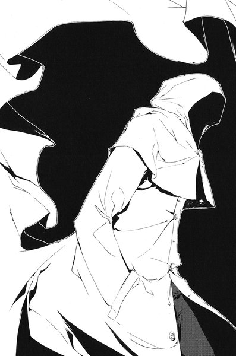
男は裕生に向かって、そのビンを差し出した。おそらく、なにかカゲヌシにとっては害になる成分が入っているのだろう。裕生はためらうことなくそれを手に取った。効果のほどは分からないが、初めて手にするカゲヌシを倒すための「武器」だった。
「これ、『黒の彼方』には効く？」
レインメイカーは首を横に振る。裕生はそれほど失望しなかった。「黒の彼方」はカゲヌシの中でも異質な存在なのは分かっている。「黒の彼方」に効かなくとも、十分使い道があるはずだ。
不意にレインメイカーは立ち上がると、裕生に背中を向けた。もう話は終わりということらしい。裕生は慌てて言った。
「『黒の彼方』を殺す時に、気をつけなきゃいけないことは？」
レインメイカーは天を仰ぐ──長い沈黙の後で彼は言った。
「......どっぐへっど」
ドッグヘッド？ あの「黒の彼方」の首のことだろうか。
「どっぐへっど」
もう一度繰り返してから、レインメイカーは歩き出した。まだ聞きたいことは山ほどある。裕生はふと半分消されかけた正方形の「サイン」に目を落とした。
「この四角い『サイン』を持つカゲヌシはこの近くにいるの？」
レインメイカーは立ち止まると、西の方角を指さした。つられて裕生も同じ方角を見る。鶴亀町の方角だ、と思った瞬間、裕生は背中に冷水を浴びせられたような気がした。
「......葉」
鶴亀神社には葉がいる。もし、鶴亀町のどこかにカゲヌシの契約者がいたら、彼女を見つけてしまう可能性がある。「黒の彼方」が倒されるだけならばまだいい。葉に危険が及ぶかもしれなかった──様子を見にいった方がいい。
「レインメイカー、できればぼくと一緒に」
裕生ははっと口をつぐんだ。
もう黄色いレインコートの男はどこにもいなかった。公園の中に立っているのは裕生一人だった。
２
その日の「皇輝山天明ショー」は休みだった。
「本日はお休みいたします」という張り紙が看板の上に貼られ、ビルのドアは閉ざされている。
受付のカウンターの奥に座った二十四、五の女が、小さな鏡を覗きこんで唇を見ている。巫女装束姿に濃いメイクはいかにも似合っていないが、本人はまったく気にしていない。
「八尋さん、どうしたらいいですか」
受付に座っていた彼女に、生気のない顔つきをした男がおずおずと声をかけて来た。八尋、というのは皇輝山天明と同様、彼女の本名ではない。しかし、彼女自身はその名前が好きだった。
「今日は撤収して。あたし一人残して、みんなホテルに帰っていいわよ」
男の方を見もせずに彼女は言う。心の中では馬鹿どもが、と付け加えていた──本人がいないのだから「ショー」は休みに決まっている。皇輝山天明は彼女の他に数人のボランティアのスタッフを抱えているが、真に腹心と言えるのは彼女だけだった。彼女以外には言われたことを従順にこなす「兵隊」しかいない。
「ねえ、なんか今日はスタッフが足んないけど、どっかにいってんの？」
「天明先生のお言いつけで、四、五人出かけたようです」
八尋はため息をついた。最近、彼女の知らないところで「兵隊」を動かしてなにかを準備しているようだった。
「......なにやってんだか、あのオヤジは」
と、彼女はつぶやいた。天明は午後から鶴亀神社にいく予定になっていたが、その前に「ショー」を一つこなすことになっていた。影による一連の「透視」術で、興味を持って訪れる人はますます増えている。「ビジネス」のことを考えれば、なるべく「ショー」を継続していった方がいい。それは天明にも分かっている──はずだった。
八尋は鏡を少し動かして、思案げな自分の目元をしげしげと見た。
天明と知り合ったのは四年前、ホステスとして田舎のスナックで働いていた頃だ。頭が切れる上に冷徹な彼女は、単に人をもてなすだけではなく人を騙すのにも向いていた。彼女の資質を一目で見抜いたのが他ならぬ天明で、それ以来彼女は天明の「ビジネス」のマネージメントを実質的に取り仕切って来た。
「ビジネス」の内容は、要するに方々の町を回って天明が「神の力による透視」を見せることで相手を信用させ、次に「神の力によるヒーリング」で多額の治療費を得ることだった。一通り稼いだら、潮時を察知してまた別の町へ移るという繰り返しで今までやって来た。
パートナーとしては最近までうまくいっていたと思う。特に三ヶ月前、難病の孫と億単位の財産を同時に抱えていた老婦人に目をつけたのは八尋である。孫が息を引き取るまでに彼女が差し出した金は、天明たちが道徳にも法律にも抵触する「ビジネス」から足を洗うには十分だったのだが、彼はそうしなかった。故郷の町に凱旋すると言い張った。
思えば、天明の様子がおかしくなり始めたのはその少年の治療を始めた頃だった気がする。
八尋はタバコをくわえると、白衣の袂から小さなオイルライターを取り出した。楕円形のボディに瀟洒な浮き彫りがあり、彼女のお気に入りだった。苛々している時は、それで火を点けて一服するのが彼女の癖だった──が。
火を点ける直前に、八尋はふと顔を上げた。いつのまにかドアが開いていて、高校生ぐらいの太めの男の子がロビーを覗きこんでいた。八尋は慌ててタバコとライターをカウンターの下に隠した。
「どうかなさいましたかー？」
少年は建物の中へ入って来る。さりげなくメモとペンを手にしていた。見た目のわりに動作はきびきびしていて隙がない。
警察とマスコミ。細心の注意を払わなければならない二つの可能性をまず彼女は除外した。年が若すぎる。まだ十七、八歳というところだろう。ふと、彼女はこの相手に見覚えがあることに気づいた。昨日もこの会場に現れた顔だった。
「どちらさまでしょうかー？」
「サヌキタカシっていいます。どうも」
どこのサヌキよ、と思いながら、彼女はカウンターの下にあるノートパソコンのファイルを開いた。この鶴亀近辺の資産家のデータがほぼ網羅されている。鶴亀町の古くからの大地主の姓に「佐貫」があった。長男の名前は峻。
「君、昨日も来てたでしょ？ 駅のすぐ近くに住んでるの？」
突然、八尋は敬語を使うのをやめて、馴れ馴れしく微笑みかけた。
「まあ歩いて五分ぐらいすかね。この商店街抜けたとこっすよ」
ビンゴ、と彼女は心の中でつぶやいた。今、彼女のパソコンの画面には佐貫家の場所を示す地図が出ているのだが、その説明とぴたりと一致している。
「今日はないんすか。皇輝山天明ショー」
「ごめんね。今日は中止になってしまったの......天明先生は急用で外出中なのよ」
「ちょっとお聞きしたいことがあったんですけど」
「どうぞ。なんでも聞いてちょうだい」
今日もまた訪れたということは、なにか相談事があるのかもしれない。八尋の目にはこの少年が大金という「敵陣」への道を開く突破口に見えていた。彼の両親に顔をつなぐまでは愛想を振りまいた方がいいだろう。ここで家族内のゴタゴタでも打ち明けてくれればバッチリだけど、と思った瞬間、
「『皇輝山文書』ってなんすか」
と、佐貫が言った。彼女は笑顔のままでかすかに目を細める。その質問に下手な返答は許されない。
「それはね、天明先生がこの町の鶴亀神社に勤めてらした頃、偶然発見なさった古文書よ。この世界の真実について記されている本なの」
佐貫は彼女の言ったことをメモに書きこんでいるらしい。彼女の懸念がさらに強くなった。一体この少年は何をしているのだろう。
「見たことありますか？」
「もちろんあるわ。でも、とても大切な宝物だから、わたしたち信者もなかなか見せていただく機会がなくて」
「発見したって騒ぎになった時も、結局ほとんど中身を見せなかったらしいっすね」
「太陽と同じでね。素晴らしい力を持つものは、使い方によってはとても危険なのよ。先生はそう判断なさったんでしょう」
今度こそ佐貫が警戒の必要な相手だと感じた。わざわざ『皇輝山文書』について下調べまでして、こちらの話を聞きに来た──一体、なんのために。
「本当の歴史を認めたくない人たちや、それに唆された人たちが先生を迫害なさったけれど、先生はゆるぎない信念をお持ちだったの。本当に立派なお姿だったわ」
天明に出会ったのはもっと後なので、その時のことなど知りはしないのだが、八尋はしれっとした顔で嘘をついた。どうせ分かりはしない。
「具体的にどういうことが書いてあるんすか」
初めて彼女は返事に詰まった。正直に言えば読んだことなどない。ぱらぱらとページをめくった程度である。天明は『皇輝山文書』について語ることを好むが、他人には滅多に見せようとしないからだ。
「この世界の歴史と、神様の話よ。失われた古代史についての重要な資料なの」
「読みたいんすけど、どうすれば読めるんすか」
このガキ、と言いそうになるのをこらえて、笑顔を崩さずに答えた。
「それは先生のおそばについて、何年も徳を積まなければ難しいでしょうね」
その『皇輝山文書』の扱いをめぐっては、天明と八尋の間で意見が分かれていた。単なるデッチ上げなのは明らかなのに、天明は彼女にすらはっきり認めようとはしない。人間なにか一つは妙なこだわりを持つものだと八尋も感心していたが、『皇輝山文書』は「ビジネス」に不要なリスクをもたらすという主張を彼女は堅持していた。神の力を有していることを示せばよいのだから『皇輝山文書』など無理に必要ない。
天明もその考えにはひとまず納得し、『皇輝山文書』について言及するのを控えて来た。それが、三ヶ月ほど前からたびたび信者の前で口にするようになっていた。物好きが見せろってツッコんで来たらどうすんのよ、とそのたびに彼女は思って来た。
ちょうどこんな風に。
「ふーん。そっすか」
佐貫はまたメモをとっている。八尋は迷っていた。なんのつもりなの、と質問したかったが、後ろ暗いところがあると取られはしないかと心配でもあった。しかし、こちらの内情を探っているのだとしたら、こんなにあからさまに尋ねには来ないはずだ。
「じゃ、あの『カゲヌシは負の力の塊』ってのはなんなんすか？その古文書に書いてあるってのはほんとですかね？」
彼女は今度こそ自分が渋い顔をしないように努力しなければならなかった。あれを口にするようになったのも最近の天明の変化の一つだ。天明にとって「カゲヌシ」がなんなのかは知らないが、おかしなことを言われるとこちらがフォローに困ってしまう。
「そうね。先生は人間の影に潜む負のエネルギーと戦ってこられたわ。『皇輝山文書』の中の『カゲヌシ』の書かれた部分の解読はとても難しくて、ずいぶん迷ってらしたようだけれど、長年の研究の成果でようやくそれが人間の負のエネルギーの塊だとお気づきになったそうなの。とても深遠なお考えだから、わたしたちにもまだ完全には理解できていないのだけど」
佐貫はふとペンを止めて顔を上げた。
「じゃ、そのへんはお姉さんは読んでないんすね？」
危うく彼女は舌打ちをするところだった──ヘンなところで鋭いじゃないのよこのガキは。
「いいえ。文章はもちろん見たことがあるわよ。でも、意味までは分からなかったわ」
実はその記述を目にしたことがあるわけではない。しかし、教祖があると言ったものを知らないと言うわけにもいかなかった。
「なるほど......じゃ、見てないのと大して変わらないっすね」
「......」
いい加減、八尋は内心この少年に向かってごまかし続けるのが面倒になっていた。そもそも、天明が余計なことを口走った挙げ句、この場にいないのが原因なのだから。
「ねえ、なんでこのことを調べてるの？」
ついに彼女は自分に禁じていた質問をした。
「えー、だってすげえ面白そうじゃないすか。ものすごく偽物っぽい古文書とか、ほんとに書いてあるのか分からない『カゲヌシ』の話とか！」
言っていることは皮肉そのものだが、顔には満面の笑みが浮かんでいる。
「それだけ？ 他に理由は？」
「え？ 他に理由？ なんで？」
佐貫はけげんそうに聞きかえしてくる。ようやく八尋にも相手の意図が分かって来た──というより、意図などないのだ。調べているのもただの好奇心からなのだろう。彼女の目の前にいるのは、他人が興味を持たないようなことを細々と調べるのが好きな単なる変人なのだ。
「先生に直接会って話したいんすけど、ダメっすか」
（もういいや！ あのオヤジに全部任せちゃおう）
ただの変人にこれ以上付き合っていても仕方がない。
「分からないわ。でも、今日は午後から鶴亀神社にいくとおっしゃってたけど」
「ありがとうございます。じゃ、いってみます」
佐貫はドアを開けて出ていきかけたが、ふとなにかを思い出したように振りかえった。
八尋の背中に緊張が走る。なんだろう──と思った時、佐貫は嬉しそうに言った。
「そういや、俺の友達もあそこでバイトしてるんすよ」
「あら、そうなの」
知るかそんなこと、と彼女は心の中でつぶやいた。
３
鶴亀神社の大鳥居は鶴亀山の中腹にある。
室町時代まで鶴亀山は鉱山だったらしく、埋もれたままの古い坑道が未だにいくつも残っているという話だった。
鳥居をくぐると広い参道があり、左側には二階建ての社務所と、神輿を納めておく神輿殿が並んでいる。右手には神社に併設している鶴亀山公園がある。参道を進むと長い石段に突き当たり、そこを上ったところに神を祀る本殿があった。この神社が一年でにぎわうのは正月と夏祭りで、宮司はその二つの時期の前後が最も忙しくなる。
神輿殿の入り口の前で、烏帽子に狩衣を身につけた宮司が祝詞を読み上げている。その後ろでみちると葉が神妙な顔つきで立っている。二人とも白衣と緋袴といういでたちで、手にはほうきとはたきを持っていた。
今日のみちるたちの仕事は神輿殿の掃除だった。祭りの前に神輿とそれが納められている建物を清めることになっているらしく、そのための儀式を行っているのだった。
みちるはちらりと隣に立っている葉を見る。首から白衣の襟にかけての線が、きりっとした色気を漂よわせている。手足の白さに緋袴の鮮やかな色が映えた。
（......この子、似合ってるなあ）
みちるに比べると確かに華奢なのだが、それでもスタイルは決して悪くない。さっき着付けを手伝った時も、思ったより女らしい体つきで驚いてしまった。自分の姿を見下ろすと、多少複雑な気分になる。みちるも決して似合わないというわけではないだろうが、葉ほどは似合っていない──と思う。
その時、宮司が祝詞を読み終わった。もう一度拝礼して、儀式は終了した。
「じゃあ、後はここの掃除をお願いします」
儀式に使った三宝や八脚案を片づけながら、宮司はみちるたちに言った。宮司は来山という三十代半ばの線の細い男だった。温厚な人柄という評判で、みちるから見てもいかにも神主にふさわしく見えた。
「できれば私も手伝いたいんですけど、これから来客があるから」
と、済まなそうに来山は付け加えた。
「別にいいですよ。さっきお聞きした手順でいいんですよね」
はきはきとみちるが答える。神輿殿の掃除も正確には儀式の一部で、神職にある巫女や神主が行わなければならないらしい。本来はアルバイトのみちるたちがやるべきではないが、本職の巫女が病気療養中で人手が足りないのだった。
「あなたの方も大丈夫ですか」
来山は葉に微笑みかける。
「はい......大丈夫だと思います」
硬い声で葉は答える。
「雛咲さんでしたっけ。珍しい苗字ですよね」
と、来山は言った。
「ご親戚にこの神社にゆかりのある方が、どなたかいらっしゃいませんでしたか？どこかで聞いたお名前の気がするんですが」
「あの......父がここによく来てたらしいです。結婚式もここで挙げたみたいだから」
みちるはかすかに目を瞠る。彼女が両親について話すのを聞いたのは、これが初めてだった。失踪した両親のことなど、触れたくないに違いない。
「ああ、そうでしたか。じゃあ、どこかでお会いしたのかもしれないな」
葉の家庭環境についてみちるから聞いていたせいか、来山はそれ以上尋ねなかった。そろそろ客の来る時間だからと社務所の方へ去っていった。
来山を見送ってから、みちるは明るい声で言った。
「じゃ、さっさと終わらせようか」
葉は黙ってうなずいた。
二人が両開きの引き戸をいっぱいに開けると、がらんとした建物の中に神輿が二つ並んでいる。さらに三方の格子窓も開け、換気しながらはたきをかけていった。ひやりとした湿った空気が少しずつ外へ流れていく。
それが終わると、みちるたちはほうきで土間を掃き始めた。誘った事情が事情なので心配していたが、葉は思ったよりも楽しそうに働いている。一心にほうきを動かしている姿は同性のみちるから見てもかわいらしかった。
「......どうかしましたか」
視線を感じたのか、いつのまにか葉がみちるを見ていた。
「あ、うん......似合ってるなあ、って思って」
素直な感想を口にしてしまった。葉はびっくりしたように自分の体を見下ろした。
「ほんとですか？」
「うん。かわいいよ」
葉はにっこり笑って、くるっとその場で回ってみせた。みちるは目を瞠った。喜んでいるというより、これはもう浮かれている。
「どうしたの？」
みちるが笑いながら言うと、
「わたし、着物って着たことないから」
と、葉が答えた。はっとみちるは胸を衝かれる思いがした。みちるには母と姉がいて、二人とも着物の着付けを知っている。正月になるとみちるにも着物を着ろと薦められるのがうっとうしかったが、一人で暮らして来た葉にはそんな風に言ってくれる家族もいないのだ。
「あ、待って」
激しく動いたせいか、葉の衿のあたりが少し乱れていた。みちるは葉の隣にしゃがみこみ、袴の腰あきから手を入れて、白衣の衿の端をきゅっと引っ張ってやった。
下から見ると葉の顔が真っ赤になっている。妹がいたらこんな感じなのかなあ、とちらっと思った。
「藤牧に見せたいでしょ」
みちるはからかうように言った。そのとたん、葉のほうきがばたんと音を立てて地面に落ちた。驚いたみちるが顔を覗きこもうとすると、葉は力いっぱい首を曲げて見せまいとする。ほとんど泣きそうな表情になっていた。
「............そんなことないです」
「あ......そ、そうなんだ」
ここまで恥ずかしがられると、逆にからかう気が失せた。
それにしても、葉の気持ちはここまで分かりやすいのに、よく裕生との間になにも起こらないものだと思う。葉が内気なせいもあるだろうが、ひょっとすると裕生には葉のことなどまったく眼中に入っていないのかも──。
（あれ？）
みちるは首をかしげた。
（あたし、今ちょっとほっとしなかった？）
もちろん考えすぎに決まっている。昔のことがあるから、すぐに妙な方に考えがいってしまう。それだけの話だった。
「ねえ、浴衣も着たことないの？」
みちるは話題を変えた。
「子供の頃に、ちょっとだけ」
「ふうん。あのさ......」
突然、みちるは背中にのしかかるような誰かの視線を感じた。はっと振り向くと建物の入り口に白いタキシードを着た細身の中年男が立っていた。
（皇輝山......天明？）
以前にもこの神社で見かけた顔だった。感情のまったくこもっていない目で、代わる代わる二人を見ている。ぞくっとみちるの背筋に震えが走る。反射的に彼女は葉を自分の背中に隠した。
「なにか御用ですか？」
かすれた声でみちるは言った。
「御用......？」
訝しげに男は聞きかえす。それから、突然にゅっと唇の端がつり上がる。一瞬、みちるにはそれが笑顔だと分からなかった。それぐらい唐突な変化だった。
「いや、こちらの宮司さんはいらっしゃいますか」
うってかわって明るい声で天明は言う。しかし、みちるはかえってこの男に不気味さを感じた。今の目つきは一体なんだったのだろう？
「......社務所にいらっしゃると思いますけど」
「ああ、そうですか。これは失礼しました」
男はすっと向きを変えて、彼女たちの視界から姿を消した。
みちるはほっと息をついた。おそらく、来山の「客」はあの天明なのだろう。だとしたら、来山が社務所にいるのは知っていたはずだ。どうしてわざわざここへ来たのだろう。まるで自分たちの様子を見に来たようだった。
「......どうかしましたか？」
葉は不思議そうにみちるを見上げている。彼女は天明の様子には気づかなかったらしい。
「ううん。別に。続きゃっちゃおう」
と、みちるは言った。
４
「もう神輿祓いか。祭りはあさってだからな」
皇輝山天明は窓の外を見ながら言った。
社務所のとある和室で、来山は天明と向かい合っている。夏だというのに白いタキシード姿の天明は汗一つかいていない。来山の方は先ほどと同じく、狩衣と袴姿だった。
「お前が着てるそれ、俺の使ってた装束か？」
「あなたの使っていたものはここには何一つ残っていませんよ」
むっとしながら来山は言った。四年前まで天明がここの宮司であり、来山はその下で働いていた。当時の天明はいささか型破りなところはあったが、実行力に富む宮司として町の人々からの信頼も厚かった。あの『皇輝山文書』の騒ぎさえなければ、来山が宮司になる必要もなかったはずだ。
「なにをしに来たんですか」
「この前の話の続きだよ。お前に追いかえされたんでな」
「あなたの話を聞くつもりはありませんよ」
天明は苦笑いをした。
「そのわりには今日はあっさり部屋まで通したじゃねえか」
「わたしの方から聞きたいことができたんです」
来山は座り直すと、天明の目を正面から見据えた。
「鶴亀祭りの実行委員会にお金をばらまいている。そうですね？」
「ばらまいてる、なんて人聞きが悪い。ただの寄付だよ」
「あなたが鶴亀山公園でなにか催しをするつもりだ、と聞きましたが」
沈黙が流れた。実行委員の大半は鶴亀駅前の商店街の人々で、彼らは皆天明を知っている。天明はその一人一人に頭を下げ、ついでに少なからぬ金を握らせて、祭りの日に鶴亀山公園でイベントをさせてくれるよう頼みこんでいるという。巧みな話術と大金の威力で、実行委員たちは皆承諾しているらしい──今の鶴亀神社の宮司である来山がいいと言えば、という条件で。
「駅前で怪しい集会を開いているのも知っていますよ」
「あれはただの人生相談だ。完全なボランティアだぜ。疑うなら参加した人間に聞いてみればいい。俺はこの町の人間から一銭も金は受け取ってない」
来山は口をつぐんだ。確かに彼もそう聞いている。ただ、「この町の人間から」という微妙な言い回しには気づかなかった。
「商店街の人からも聞いたが、ここもうまくいってないそうだな」
「それは兄さんが人を騙したせいじゃないか！」
来山は四年ぶりにその呼び名を口にしていた。「皇輝山」という苗字は自称で、天明は来山の兄であり、代々鶴亀神社の宮司を勤めてきた来山家の長男だった。
「あの時の騒ぎで、たくさんの氏子の方々がここを見放した。兄さんがあんなことをしなければ、なにもかもうまくいっていたんだ！」
自分の声の大きさに来山は我に返った。半分立ち上がりかけていたことに気づいて、再び腰を下ろした。
不意に天明の顔つきが引きしまり──そして、深々と頭を下げた。
「すまないことをしたと思っている」
静かな声で天明は言った。来山は完全に虚を衝かれた。まさか、いきなり謝ってくるとは思ってもみなかったのだ。
天明はポケットから一枚の紙を出すと、来山の目の前に置いた。
「受け取ってくれ。この前も本当はこれを渡すつもりで来たんだ」
「......これは」
畳の上に置かれているのは小切手だった。それも、驚くほどの金額が書きこまれている。
「この町に戻れるなんて思ってない。金で解決するとも思ってない。ただ、これは俺の誠意の証だ。俺は自分の贖罪をしたい。まだ詳しくは言えないが、祭りの催しもそのためのものだ」
来山はなおもそれを手に取ろうとはしなかった──あまりにも金額が大きすぎる。
「これは神明に誓ってまともな金だ。人を騙したり、盗んだりした金じゃない」
弟の疑問を先回りするように、天明が言った。
「俺はこの四年、海外のディーラーと美術品の取り引きもしてきた。それで稼いだ金だ」
「......」
果たしてどこまで本当なのか、疑う気持ちもないわけではなかったが、来山の中には自分の兄を信じたい気持ちがある。四年前の天明の行動に誰よりも衝撃を受けたのも来山だった。
「謝るぐらいなら、どうしてあんなことをしたんですか」
膝の上で拳を握りしめながら、来山は声を絞り出した。ほんのかすかに天明の口元に笑みが浮かんだ。理由を問うのは半ば謝罪を受け入れているからなのだが、来山自身はそれに気づいていない。
「あの時、一体なにがあったんですか」
来山の知っている限りでは、この山の坑道跡を一人で調べている最中に、天明が怪我を負ったことが全ての発端だった。数時間後に救出された天明の命に別状はなかった。しかし、その時から天明の言動はがらりと変わった──名前を「皇輝山」と改名し、自分に神の力が宿ったと公言するようになった。あげくの果てに、坑道の奥で発見したという古文書──『皇輝山文書』を使って客寄せまで始めた。
来山は『皇輝山文書』の内容を見たことはないが、それを「発見」する前に天明の知り合いらしき男が何度か訪ねて来たのは知っている。その男の協力で天明はそれを書いたのだろうと思っていた。
「この山の坑道はまだそのまま残っているのか？」
不意に天明が尋ねて来た。
「......ええ。どうなっているのか一度きちんと調べなければなりませんが」
戸惑いながら来山は答える。中にはかなり広い空洞もあるらしい──一体、なんのためにそんなことを尋ねるのだろう、と思っていると、
「......俺は穴の底で夢を見た」
天明は遠くを見るような目で言った。
「悪い夢だった。しかし、もうその夢を終わりにしたいんだ」
陳腐な言葉だったが、奇妙に胸を打つ切実な響きがあった。
来山は小切手を拾い上げて、天明の方へ見せる──もう一度、兄を信じてみようと彼は思った。
「このお金をわたしが受け取ることはできませんが、お預かりしておきます。あなたがこれを必要とした時のために」
一瞬、嘲るような笑みが天明の顔を覆いかけたが、来山が見直した時にはすでに消えていた。結局、来山は小切手を受け取り、天明が祭りに参加することを黙認したことになる。
「そういえば、さっき神輿殿にバイトの巫女がいたようだな」
突然、くだけた口調で天明は言った。来山は多少の違和感を覚えたが、さして気にも留めずに答えた。
「わたしが氏子さんを通じて臨時に来ていただけるようお願いしたんです。二人とも加賀見の子ですよ」
「......龍子主」
「え？」
「気にするなよ。なんでもないさ」
天明は満面の笑顔で言った。
５
掃除を終えたみちると葉は、神輿殿の戸を閉めた。
「宮司さん、来ないね」
みちるは社務所の方を振りかえる。さっき来た皇輝山天明とまだ話を続けているのかもしれない。様子を見にいこうか迷ったが、あの男とはあまり顔を合わせたくなかった。
「とりあえず、ほうきとか片づけようか」
葉は黙ってうなずいた。掃除の道具は本殿の裏の倉庫から持って来たものだ。二人は参道を奥へ進み、本殿へ通じる石段を上がり始めた。
葉はみちるの斜め後ろから歩いて来る。足袋と草履に慣れていないせいか、足取りは慎重だった。
「そういえばさっき言いかけて忘れてた」
と、みちるは前を向いたまま言った。
「雛咲さん、ここのお祭り来る？」
しばらく間が空いた。石段を踏む二人の草履の音だけが響く。
「分かりません」
「藤牧と一緒だったら来る？」
葉の足音がやんだ。みちるが振り向くと、彼女はほうきを胸の前に抱えて俯いていた。
「......それなら、多分」
「じゃあさ、お祭りの日に浴衣着ない？」
「......え？」
葉は驚いたように顔を上げる。
「うちの母親って娘に着物着せるのが好きでさ。ほとんど毎年あたしと姉さんの浴衣買ってたから、結構数あるのよ。でも今年は姉さんいないし、もともとあたしは別に着るの好きじゃないのね。雛咲さんが着てくれるって言ったら、多分うちの母親も大喜びすると思うんだけど。なにしろ若い女の子に着付けするの大好きだから」
みちるは慎重に言葉を選んでいた。
「............」
無表情に近かった葉の顔に、みるみるうちに喜びの色が広がっていく。みちるの方もなんだか嬉しくなって来た。ああ言ってよかった、と彼女は思った。
「ここのお祭りに来ないんだったら、しょうがないんだけどね。もしよかったら考えといて」
「ありがとうございます」
葉はかわいらしい笑顔で礼を言う。一瞬、みちるはなぜか胸が締めつけられるような思いがした。彼女の幸せを祈らずにはいられなかった。
「きっと藤牧も喜ぶよ。うん」
みちるは背を向けてまた石段を上がっていき、一足先に上まで辿り着いた。石段を上がり切ったところには、門柱のように二匹の狛犬が置いてある。その間を通り抜けると、石畳の広い境内には本殿と鐘楼があった。参拝客は誰もおらず、あたりは静まりかえっている。
「西尾さん」
背中から声をかけられた。
「なに？」
「先輩のこと、どう思いますか」
一瞬、みちるは口を開けたまま硬直した。
想像もしていなかった質問に完全に不意を衝かれていた。
「ふ、藤牧のこと？......ど、どうって......」
なんか言わなきゃ、と頭のどこかから声がした。葉は無言で彼女の答えを待っている。こほん、とみちるは咳払いした。
「あー、まあ、藤牧は友達だよ。結構長い付き合いだけど、なんか昔からぼーっとしてて、特徴ないっていうか......あ、もちろん悪い人じゃないよ？顔とかも別に悪くないし。まあ雛咲さんの方がよく知ってるだろうけど。あたしから見てなんかってわけじゃないなあ」
我ながらなにを言っているのかよく分からない。そこへ、さらに追い討ちをかけられた。
「昔、好きだったでしょう」
「え............」
今度こそ頭の中が真っ白になった。
「先輩が入院してた頃。西尾さん、毎日お見舞いに来てた」
みちるは天を仰ぎたい気持ちになった──思いっ切りバレてるよ。まあきっと分かりやすかったよなあ。
しかし、口の方は勝手に最後の抵抗を試みていた。
「あれね。だってあたし、あの頃クラス委員だったから。学校のプリントとか届けなくちゃいけなかったし、他にいくっていう人もいなかったし」
葉はなにも言わずに、ただみちるを見上げている。責めている様子はない。ただ、悲しげな目をしていた。
もうダメだ、とみちるは思った。もともと嘘をつくのは苦手なのだ。かっと頬が熱くなった。
「ああもう！ 確かにそうです。そういう時期がちょっとありました！絶対秘密だからねこれ。ほんっっっとに恥ずかしいんだけど！」
ほとんどやけになってみちるは叫び、肩で大きく呼吸をする。そう言えば、このことを他人に話したのは初めてだった。あの頃、気づいていたのも葉だけのはずだ。そう思うと、不思議と彼女への親しみが増した。
「でも、ほんとに藤牧が入院してる間だけなの。退院して学校に通うようになったら、そういうのどこかへなくなって普通に仲よくなれた。最初に好きになった人って、そういうことあると思うよ。藤牧の初恋の人なんか、うちの姉さんだしね」
「えっ」
しまった。これ言っちゃいけなかったか。
「もちろん、今は姉さんのことなんとも思ってないと思うよ。そばで見ててなんとなく分かるんだ。うちの姉さん、藤牧のお兄さんと付き合ってるけど、藤牧もそのこと喜んでるし」
「......先輩のどこが好きだったんですか」
うーん、とみちるは考えこんだ。そう言えばみちるは裕生が「不治の病」だと思いこんでいた。それを自覚しているのに、明るく振る舞っているように見えた。
「ちょっと誤解してたんだよね。初めて会った時、ベッドで寝てた藤牧がすごく悲しそうに見えたの。自分が辛いこととか、誰にも言わないでじっと我慢してるみたいな......」
みちるははっとした。最近の裕生もそんな風に見えることがある。あの頃はただの「誤解」だったと思う。しかし、今はどうなのだろう。
「ねえ、なんでそんなこと聞くの？」
と、みちるは言った。
「ひょっとして今もあたしが好きとか思ってた？」
「......分かりません」
みちるは首をひねった。葉の性格からいって、「先輩にちょっかいを出さないでください」などと釘を刺すつもりだとは思えない。
（不安なんだ、きっと）
これだけ葉の気持ちははっきりしているのに、一緒に住んでいるのに裕生の態度が煮え切らない。結局、裕生の気持ちが誰に向いているのか知りたいのではないだろうか。
「雛咲さんはもう一緒に住んでるんでしょ。藤牧はあなたのこと大事にしてると思うけど......」
「そうじゃないんです。それはもういいんです」
葉は首を横に振った。
「わたし、いつまで先輩と一緒にいられるか分からないから」
「え？」
思わずみちるは聞きかえした。
「空も、人も、風も......」
葉は低い声で歌うようにつぶやいた。
「全部消えて、わたしだけ残る」
「......どういうこと？」
ふと、みちるは以前に葉の悩みを聞き出そうとした時のことを思い出した。うやむやになってしまったが、あの時彼女の様子がおかしかったのは、結局どうしてだったのだろう──。
「あっ」
その時、葉が声を上げた。両目をいっぱいに開いて、みちるの肩越しになにかを見ている。顔色は真っ青になっていた。
（ん？）
みちるは何気なく振りかえり、突然現れた「それ」を見た。あまりにも非常識な大きさに、最初は銅像かなにかだと思った。しかし、それは確かに動いていた。首をみちるたちに向け、ゆっくりと胴体をくねらせながら四肢を動かしている。
巨大な黒い蜥蜴が、二人に向かって歩いて来ていた。
６
佐貫は鶴亀神社の鳥居をくぐった。さほど暑い日ではないのだが、神社の境内には参拝客の姿はない。彼の他には誰もいなかった。
彼は社務所の建物へと近づいていった。少なくとも社務所には人がいるはずだ。境内に面した大きな窓の近くで、佐貫はふと立ち止まった。窓の向こうの和室に、白いタキシード姿の天明と宮司が向かい合っているのが見えた。
どうやら話が弾んでいるらしく、天明はさかんに笑っている。
「お、いた」
と、佐貫はつぶやいた。例の『皇輝山文書』について色々質問しに来たのだが、あの様子ではいつまで話が続くか分からない。
（西尾に聞けば分かるかな）
とりあえず、佐貫はみちるたちを捜すことに決めた。昨日の彼女の話では、掃除や整理が主な仕事だということだったと思う。
（本殿の方かな）
佐貫は参道をまっすぐ進んでいった。そう言えばしばらくこの神社の本殿も見ていない。もともと鉱山ということで、古くはそれにちなんだ神が祀られていたという話だった。しかし、今の本殿に祀られているのは、雨の恵みをもたらす水神らしい。
「ん？」
本殿へと通じる石段の前まで来た時、佐貫はふと立ち止まった。頭上からかすかに女の悲鳴が聞こえたような気がした。それと同時に、上の方から竹ぼうきが滑り落ちて来て、石段の途中で止まった。
（......なんだ、あれ）
佐貫は早足に石段を上がっていった。
みちるの悲鳴を聞きながら、葉は反射的にほうきを投げ捨てていた。どこへ飛んだか確かめる余裕はなかった。
（カゲヌシ）
みちるの腕をつかんで右手の鐘楼の方へ走り出した。着慣れない着物のせいでひどく走りづらい。十メートルほど走ったところで振りかえると、蜥蜴のカゲヌシはようやくのそのそと方向を変えたところだった──どうやらかなり動きが鈍いらしい。
（......逃げられるかも）
一瞬、葉はそう考える。みちるの前で「黒の彼方」を呼び出すわけにはいかない。それに、この場には裕生もいない。呼び出したら最後、彼女が意識を取り戻せる保証はなかった。
「......あれ、なに」
みちるはカゲヌシを見ながら震える声でつぶやいた。
「いきましょう」
と、葉はみちるを促した。邪魔な草履を脱ぎ捨てて走り出そうとした時、背中にぺたりと柔らかいものが触れた。葉は思わずびくっと立ちすくんだ。
次の瞬間、葉の腰にみちるの腕が回された。みちるにタックルされるような形で、葉は石畳の上に倒れこんだ。ごろごろと転がりながら自分の立っていた場所を見ると、黒い蜥蜴の顎がばくりと空を咬むところだった。
（......嘘）
あの怪物とはもっと距離が離れていたはずだ。一瞬のうちに二人のすぐ後ろまで近づいて来ていた。動きが鈍いと思ったのは間違いだった。こちらを油断させる罠に違いない。
獲物を逃したことに気づいたらしい蜥蜴は、ゆっくり首の向きを変えながらちろりと舌を出した。どうやら、葉の背中に触れたのはあの舌だったようだ。みちるの助けがなければ、今頃は食い殺されていただろう。
葉は慌てて体を起こそうとしたが、緋袴が足に絡んでうまく立ち上がれなかった。「黒の彼方」を呼び出すべきか、彼女はまだ迷っていた。とにかく、どうにかしてみちるにここから逃げてもらわなければと思った時、不意に人影が彼女の前に立った。
（え？）
みちるがカゲヌシと葉の間に立ちふさがっていた。どこで拾ったのか、長い木の棒を正眼に構えている。
「早く逃げて！」
と、みちるが声を震わせて叫んだ。声だけではなく、全身も小刻みに震えている。
（この人、わたしを助けようとしてる）
葉は唇を噛んだ。悔しいような情けないような、複雑な気持ちだった。
なんの力もないみちるが身を挺して自分を逃がそうとしている──仲がいいわけでもなく、大して知りもしない相手なのに。
「なにしてんの、早く走って！」
緊張のせいか、彼女は息を詰まらせていた。
（この人を助けなきゃ）
葉はよろけながら立ち上がった。「黒の彼方」は人間を殺さない契約を結んでいる。このカゲヌシを倒せなかったとしても、みちるがここから逃げる時間ぐらいは作れるはずだ。ひょっとすると自分は意識を取り戻せないかもしれない、という思いがちらりと頭をよぎったが、もう迷いはなかった。
「『黒の彼方』が戦い始めたら、西尾さんはここから逃げて」
「え？ なに......」
みちるの言葉はもう葉の耳に入らなかった。大蜥蜴が悠然と葉たちの方へ進んで来ている。彼女は息を大きく吸いこんだ。
「くろのかなた」
その瞬間、ぷつりと意識が途切れた。
葉の足下の影が音もなく広がっていった。黒く染まった地面からうなり声が聞こえ、それと同時に二つの獣の首がにゅっと姿を現した。
（犬？）
みちるが呆然と見守る前で、その獣は完全に姿を現した──双頭の黒い犬だった。片側は起きているが、もう片側は眠っているように目を閉じたままである。
「もう少し離れましょう。危険ですから」
葉が低い声で言い、みちるの右の手首をつかんだ。
「いたっ」
とたんに握りしめていた木の棒が地面に落ちた。大して力をこめているようにも見えないのに、おそるべき力だった。そして、そのままみちるを引きずるように鐘楼の方へ歩き出した。
「あれ、どういうこと？」
葉の顔を見たみちるはぞっとした。口元には薄笑いを浮かべているが、目にはまったく表情がない。さっき掃除の時に見た天明の目とよく似ていた。
「ねえ、雛咲さ......」
その呼びかけは途中で立ち消えになった。
「......誰？」
雛咲さんじゃない、とみちるは思った。これは別の誰かだ。
鐘楼のそばまで来てから、葉はみちるの手を放した。強く握られたせいで、指のかたちをしたあざがくっきりと残っていた。
「この娘の周囲には鋭い人間が多いようですね。この程度の接触で察するとは」
くく、と彼女は喉を鳴らすように笑った。
「あんた、一体誰なの？」
「わたしは『黒の彼方』。この娘の体は今、あそこにいる私の本体の支配下にあります」
彼女は双頭の黒い犬を指さした。
「『黒の彼方』......？」
どこかで聞いたことのある言葉の気がしたが、はっきりとは思い出せなかった。
「詳しい話は藤牧裕生に聞きなさい」
突然、境内に犬の咆哮が響き渡る。あの双頭の黒い犬が石畳を蹴って、巨大な蜥蜴に襲いかかった──一瞬、みちるは目を閉じる。
蜥蜴の怪物とすれ違った双頭の犬は、四肢をふんばって停止した。蜥蜴の背中に裂け目のような傷口がぱっくりと開いていた。黒犬は瞬時に向きを変え、敵の尻尾に牙を突き立てた。勢いに押されて蜥蜴の怪物はわずかによろける。
もう一度黒の彼方が離れた時には、蜥蜴の尾の根本が半ば食いちぎられて折れ曲がっていた。黒の彼方は接近と回避を繰り返しながら、敵の怪物に次々と傷を負わせていった。
「......おかしい」
と、葉──「黒の彼方」がつぶやいた。
「あのカゲヌシの『サイン』はデルタを越えている。この程度の実力のはずはないが」
「え？」
みちるは聞きかえしたが、答えはかえって来なかった。その代わり、横目でみちるを見ながら、「黒の彼方」は言った。
「逃げたらいかがですか。この娘はあなたの命を守るために、わたしを呼び出したのですよ」
みちるは首を横に振った。なにが起こっているのかは分からないが、もしそうだとしたらかえってこの場を離れるわけにはいかないと思った。こんな状態の葉を放っておけない。
「......逃げるんだったら、一緒に連れてく」
葉は哀れむようにみちるを見た。
「無理だと思いますがね。まあ、勝手になさい」
怪物同士の戦いは一見「黒の彼方」の方が有利に進めているように見えた。体の大きさは蜥蜴の怪物の方がはるかに上だが、敏捷さにおいて「黒の彼方」が圧倒的に優れている。しかし体が大きすぎるせいか、今までの攻撃では致命傷を与えるには至っていないようだった。
「仕掛けてみるか」
と、葉の口がつぶやいた。
「黒の彼方」が蜥蜴の怪物から距離を取った。そして、助走をつけて蜥蜴に向けて一直線に突進していった。みちるの目にも黒犬が敵の胴体を食いちぎろうとしていることが分かる。
むき出しにした獣の牙が蜥蜴の手足をくぐりぬけ、無防備な脇腹に届こうとした刹那──唐突に蜥蜴の姿が消えた。
「なに？」
葉の口からかすかなあえぎが洩れた。みちるが境内を見回すと、蜥蜴はいつのまにか十メートルほど離れた石段の近くにうずくまっていた。
「なんで......」
と、みちるは言った。いつ動いたのか、まったく気づかなかった。
「......瞬間移動とは。アブサロムどもよりは高位なわけだ」
葉はまるで自分に言い聞かせるようにつぶやいた。
「では『眠り首』を使うべきだな」
その言葉が終わると同時に、「黒の彼方」は石段の方へ走り出し、蜥蜴の正面で静止する。葉が口にしている言葉の意味はよく分からないが、どうやらあの黒犬がなにかを今までとは違う攻撃をしようとしているのはみちるにも理解できた。
今まで頭を垂れていた左の首が、ゆっくりと起き上がろうとする──なにが始まるんだろうとみちるが思ったその時、
「くっ」
葉の口から忌々しげな声が洩れた。彼女の目は黒い蜥蜴を通り越して、石段のそばにある狛犬を見据えている。みちるも同じ方に視線を動かした。狛犬の像の後ろに隠れて、誰かが境内の戦いを見ていた。
しかも、みちるのよく知っている顔だった。
「えっ。佐貫？」
と、みちるは言った。
半ば起きていた首がまた元のようにがくりと力を失った。ぎりっと葉の歯ぎしりが聞こえた。
「......『契約』さえなければ」
次の瞬間、再び蜥蜴の怪物が消えた。
「えっ」
みちるは声を上げた。「黒の彼方」も敵の姿を完全に見失ったらしい。立ち止まったままあたりを見回している。
「上だ！」
と、佐貫が指さしながら叫ぶ。まるで隕石のように黒い蜥蜴が降ってきた。巨大な蜥蜴に激突した「黒の彼方」は跳ね飛ばされて石畳の上を滑っていった。
「うっ！」
葉の口から鋭い悲鳴が洩れ、力を失ったように背後から倒れる。みちるは慌てて彼女の体を抱きとめた。あざになっている手首がずきりと痛み、みちるは顔をしかめながら葉を地面に横たえた。
そして、葉の呼吸を確かめ──不意にみちるは既視感に襲われた。
（前にもこんなことあった）
学校の中庭の藤棚。一学期、裕生に頼まれて葉になにがあったのか尋ねた時だ。葉は突然、頭をぶつけて気絶してしまった。
（あの時のことも、あの犬と関係あるのかも）
「西尾、逃げろ！」
佐貫の声が聞こえた。はっと我に返ったみちるが顔を上げると、傷だらけの黒い蜥蜴がのっそりと彼女たちの方へ歩き出したところだった。顎のあたりがなにかを詰めこんだように大きくふくれている。
みちるは葉を抱き上げて走ろうとしたが、右手に力が入らなかった。
あの犬は、と思ってあたりを見回すと、本殿の前で倒れたまま黒犬はぴくりとも動かなかった。
（なにがあったの）
この「葉」が悲鳴を上げて倒れたということは、きっと彼女を乗っ取っていた者──あの「黒の彼方」になにかがあったということだ。ふと、みちるは黒犬の様子がさっきと違うことに気づいた。なにかが足りないような──。
「......あ」
みちるは押し殺した悲鳴を上げる。足りないのは首だった。黒犬の片方の首が根本からきれいに切り取られていた。
彼女は徐々に近づいて来る蜥蜴を見た。下顎のあたりに丸いふくらみがはっきりと残っていた。うろこに覆われた黒い表皮が、前から後ろに向かって波のように蠕動する。一瞬だけ両顎を開いた蜥蜴は、ごくりという音とともに胴体へとその塊を送りこんだ。
その瞬間、みちるはようやくなにが起こったのか理解した。
この蜥蜴の怪物が「黒の彼方」の首を食いちぎったのだ。
７
石段を上がった佐貫は、二匹の怪物の戦いの一部始終を見ていた。一体、自分が目にしているのがなんという生き物なのかはもちろん分からなかった。ただ、蜥蜴が葉たちを襲い、双頭の犬が守っているのはかろうじて理解できた。
佐貫はじりじりしていた──どうしてみちるたちは逃げずに突っ立っているのか。二人を連れて逃げ出そうと何度も思ったが、怪物が戦っているというのに、隠れる場所もない境内を突っ切っていくわけにもいかなかった。迷っているうちに黒犬は敗れ、傷つきながらも蜥蜴が勝ってしまった。
「西尾、逃げろ！」
見つかるのも構わずに佐貫はみちるたちに向かって叫び、同時に狛犬の陰から飛び出していた。なぜか葉は倒れて、みちるはゆっくりと歩を進めている蜥蜴を呆然と眺めている。
（あのバカ、なにもたもたしてんだよ）
蜥蜴の怪物を迂回するように鐘楼へ向かって走った。戦いで傷を負っているせいか、蜥蜴の動きはさっきよりもはるかに遅い。しかし、あの怪物には突然別のところに現れる能力があるらしい。もう一刻の猶予もない。
佐貫は太り気味の外見のわりに、運動神経は発達している。たちまち二人のそばへ駆け寄った。
「なにやってんだ！」
佐貫が叫ぶと、みちるははっと顔を上げた。葉は完全に意識を失っているらしい。佐貫は小柄な葉の体を肩にかつぐようにして持ち上げる。
怪物はゆっくりとではあるが、鐘楼の方へ確実に近づいて来ていた。とにかく逃げるとしたら石段の方だ。佐貫はみちるが付いて来ているのを確認して、元来た方へ走り出した。
ふと、石段を上がってくる人影が見えた気がした。誰だろう、と佐貫が目を凝らそうとした刹那、あたりの景色がさっと白く染まり、踏みしめていた石畳の感覚が消えた。
「え？」
気がつくと、佐貫は地面に膝をついていた。かついだままの葉の体重が肩にぐっとのしかかる。相変わらず彼は神社の境内にいて、石畳の感覚も元に戻っている。なんだったんだ今の、と思ったその時、
「佐貫！」
なぜか離れた場所からみちるの声が聞こえた。
「えっ」
声の聞こえた方を見ると、十メートルほど離れた石段の近くにみちるが立っている。佐貫は混乱し始めた──いつのまに西尾は俺から離れたんだろう。いや、違う。さっきまで俺もあそこにいたはずだ。
ふと、佐貫は自分のすぐそばに鐘楼があること気づいた。はっと振り向くと、すぐ目の前に黒い蜥蜴の顔がある。一瞬のうちに佐貫の全身が凍りつく。動いたのは佐貫たちの方だった。この怪物の能力は、ただ自分の体を移動させるだけのものではない──。
（獲物を引き寄せることもできるんだ）
かぱっと蜥蜴の口が大きく開いた。今までの人生でこれほど唐突に死と向かい合ったことはなかった。暗い洞のような口の中で、二股に分かれた舌が別の生き物のように蠢いていた。ゆっくりと蜥蜴の両顎が佐貫の視界を覆い尽くしていく。彼の方も呆然と口を開けたまま、ありえない光景をただ見守っていた。
ふと、どこかからかすかな水音が聞こえた。鼻先がぶつかるほどの距離まで迫っていた蜥蜴の口が、急速に遠ざかっていった。誰かが佐貫と葉をかばうように彼の前に立つ。
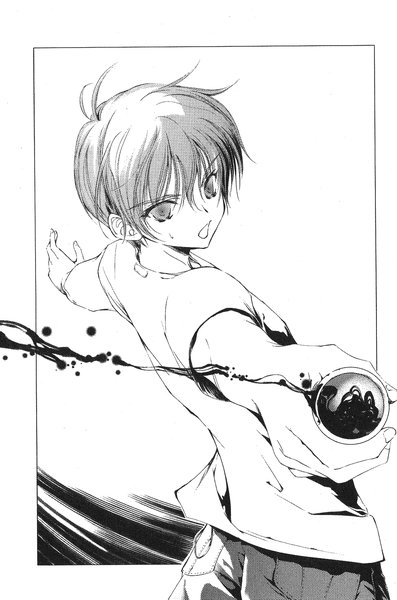
「......裕生？」
彼の友人がそこに立っていた。長い距離を走って来たらしく、Ｔシャツの背中は汗に濡れて息をしている。なぜか彼の手には栓の開いたガラスのビンがあった。
佐貫たちから離れた怪物は、苦しげに身を震わせていた。黒いうろこに覆われた背中から、しゅうしゅうと焼けただれているように煙が上がっている。裕生は無言で怪物の方へ走っていくと、怪物に向かって瓶を大きく振った。わずかな黒い水滴が怪物の体に飛び散っただけだったが、水滴に触れたところからさらに煙が噴き出す。
どうやら、裕生はその瓶の中身を使って佐貫たちを助けようとしているらしい。とどめとばかりに裕生が瓶を振り上げた瞬間、ますます激しく身を震わせていた怪物がふっと姿を消した。
裕生はしばらく確かめるようにあたりを見回していたが、やがて佐貫と葉の方へ戻って来た。
「あいつ、死んだのか？」
おそるおそる佐貫は尋ねた。裕生は首を振った。
「違うと思う。『契約者』の影に戻っただけだよ」
それから悲しげに付け加えた。
「......またいつか襲って来る」
裕生は葉の体を佐貫から受け取り、地面に横たえた。
葉自身の命に別状はないようだった。ただ気絶しているだけらしい。
裕生は立ち上がると、本殿の前に倒れている「黒の彼方」に慎重に近づいていった──首が一つない。武器を持っている「眠り首」の方だ。裕生がここへ到着した時には、すでに「黒の彼方」は倒れていたが、なにが起こったのかは想像がつく。おそらく、あの蜥蜴のカゲヌシと戦って敗北したのだ。
（でも、死んだわけじゃない）
以前にも「黒の彼方」は首を失っていると聞いた。司令塔であるこの最後の首がなくならない限り、活動することは可能だろう。「黒の彼方」を殺す時は、犬の首に気をつけろとレインメイカーは言っていた。それも後一つ、ということになる。しかも、もうあの振動の武器も使うことができない。
不意に「黒の彼方」の肉体が透き通り、ふっと石畳の上から消えてしまった。契約者もカゲヌシも意識を失えば、召還されたカゲヌシは自動的に契約者の影に戻ってしまう。
「......藤牧」
振り向くとみちるが立っていた。
「どういうことなのか教えて。詳しいことは藤牧に聞けって言われたの」
彼女はいったん言葉を切り、裕生の目をまっすぐに見た。
「......『黒の彼方』から」
あいつは名乗ったんだ、と裕生は思った。もうこの二人にはその場限りの説明でごまかすわけにはいかない。しかし、自分の他にもなんの力もない人間をこの戦いに巻きこむべきなのか、裕生には判断できなかった。
「その前に、ここでなにがあったのかぼくに話して欲しいんだけど」
と、裕生は言った。
みちるたちは鐘楼の陰に移動して座りこんだ。裕生は気絶したままの葉の上半身を抱きながら、みちるたちの説明に無言で耳を傾けている。みちるは「カゲヌシ」や「サイン」がなんなのか、何度か説明を求めたが、裕生は話の先を促すだけだった。
やがて最後まで話し終えた二人は、裕生が口を開くのを待った。しかし、裕生はいつまで経ってもなにも言わなかった。
「で、お前からの説明は？」
焦れた佐貫が言ったが、裕生は首を横に振った。
「悪いんだけど話せない」
「なんだそりゃ」
佐貫がむっとした顔で言った。
「さんざん喋らせといてそりゃねえだろ？俺たちだって危ない目に遭ったんだから、なにがあったのか知る権利ぐらいあるんじゃねえか？」
「聞いたらもっと危ない目に遭うかもしれない」
と、裕生は冷静に言った。
「ぼくだってあいつらのことを全部知ってるわけじゃないけど、それでも前に警告されてるんだ。なんの力もない人間がなにかしようとしたら危ないって。確かに二人とも大変な目に遭ったけど、全部見なかったことにすれば、多分大丈夫だと思う」
「お前なあ」
と、佐貫が言った。
「目の前で起こったこと忘れるほど、俺たちの頭は都合よくできてねえよ。こんなこと忘れるヤツいるわけねえだろ？そんなの無理だろ？」
忘れる、という言葉を佐貫が口にすると、なぜか裕生の表情が曇った。悲しげに目を伏せて、気を失ったままの葉の額を静かに撫でた。
はっとみちるは息を呑む──初めて会った時の裕生が今の姿に重なった。
「藤牧は雛咲さんを助けようとしてるんだよね？」
みちるは静かに言った。裕生はなにも答えなかった。
「そのためには、人間のままで怪物と戦わなきゃならない。だから、危険だって警告されたんでしょ？」
裕生はそれにも答えない。みちるはちょっとためらってから、また口を開いた。
「藤牧が言いたいのは、雛咲さんのために命をかける覚悟がなかったら、このことに係わる資格がないってことでしょ？」
重い沈黙がみちるたちを包みこんだ。佐貫も無言で腕を組んでいた。
「......知りたいから教えるってわけにいかないんだよ」
裕生はようやくそれだけ言った。
「だってさ、佐貫。後はあたしたちが考えようよ」
みちるは佐貫に言った。
「......分かった」
と、佐貫も真顔でうなずいた。
８
裕生は倒れた葉を団地に連れ帰った。鶴亀神社の宮司には、たまたまみちるに用事があって神社に来たら、急に葉の具合が悪くなったと説明した。佐貫も自分の家へ帰り、みちるはそのままバイトを続けた。彼女もショックを受けたはずなのだが、「あたしまでいなくなると困るだろうから」と言って聞かなかった。
葉は夜になっても回復しなかった。時々目を覚ますこともあったが、意識がはっきりしないらしく、すぐにまた眠りに落ちてしまう。
雄一と吾郎が帰って来てから、病院に連れていくかどうかでちょっとした騒ぎになった。明日まで様子を見ようという裕生の言葉にしぶしぶ納得した。
夕食を終えて裕生が後片づけをしていると、佐貫から電話がかかってきた。
「今、団地の公園まで来てるから、出て来られないか」
と、いうことだった。ちょっと待つように言って、裕生は誰にも告げずに家を抜け出した。太陽は西の空に完全に沈み、夏にしては少し冷たい風が肌を撫でた。人通りもほとんど絶えている。
裕生は公園へと入っていった。切れかかった水銀灯が錆びた遊具を照らしている。昨日の昼間、裕生が座っていたベンチに佐貫とみちるがいた。
「悪いな、出て来させて」
と、佐貫が言った。
「お兄さんたちも帰ってるだろうし、外で話した方がいいと思って呼んだの」
後を引き継いでみちるが言った。
「別にそれはいいけど、二人の方こそわざわざどうしたの」
ちらっと佐貫とみちるが顔を見合わせる。裕生は少し緊張していた。昼間のことでやって来たのは分かり切っているが、一体なにを言いに来たのか見当がつかなかったのだ。
「俺、あれから色々考えたんだけど」
と、佐貫が言った。
「俺はお前の幼なじみのことはよく知らない。今のところ別に仲がいいわけじゃないし、全然話したこともない。いや、かわいいとは思うし、いい子だと思うけどな。だから、あの子のために命が張れるかって言ったら、正直言って心の底から大丈夫だとは言えない」
「......うん。分かるよ」
裕生は別に驚かなかった。係わるなと言ったのは裕生の方だし、はっきり無理だと言いに来たのは佐貫らしい誠実さだと思った。
「いやいやいや、そこで納得すんな。まだ続きがあるんだから」
佐貫が慌てたようにぴっと手をかざした。
「でも、その後で思ったんだ。俺はお前のことはよく知ってる。あの子のためだって考えるとまだあれだけど、お前のためには命が張れる気がする。お前はその......俺の親友だからな......おいそこ、笑わない」
にこにこしているみちるに向かって、突然佐貫は言った。本気で怒っているわけではなく、照れ隠しのようだった。
「バカにしてるわけじゃないよ。ほら、続けて」
「いや、だからそういうことだよ。お前があの子を助けようとしてるんだったら、俺はあの子を助けようとしてるお前を助ける。その......昼間のことは悪かった。だから、協力させてくれよ」
佐貫は真剣な表情で手を差し出してきた。一瞬、裕生も手を出しかけたが、慌ててそれを思いとどまった。
「......でも、本当に危ないんだよ」
「お前、ここまで言わせてそれかよ」
佐貫は苦笑いを浮かべた。
「まあ、別にいいけどな。お前が断ってもおんなじだし」
「え？」
「お前がうんって言わなくても、勝手に調べて勝手に協力する。心配してくれるのはありがたいけど、もう覚悟は決めてんだよ」
「佐貫......」
裕生の胸が熱くなった。佐貫とは確かに友達だが、自分のことをここまで考えてくれるとは思っていなかった。彼はしっかりと佐貫の手を握る。
「ありがとう」
裕生が言うと、佐貫も握りかえして来た。
ふと、彼はみちるの顔を見た。彼女はどう思っているのだろう。
「あたしは最初から決めてたよ。藤牧とあの子を助けるって」
みちるは静かに言った。
「正直言うとあたしもあの子はよく知らないけど、なんか放っておけないんだよね。もちろん、藤牧はあたしの」
一瞬、なぜかみちるは口ごもった。
「藤牧はあたしの友達だし。それに、人間になんの力もないんだったら、協力し合わなきゃいけないでしょ？」
みちるも裕生と佐貫の手の上に自分の手を重ねた──裕生はほっとしていた。協力者が欲しいと誰よりも強く思っていたのは裕生自身だった。なにを決めるにしても、身の回りに相談できる人間は誰一人いなかったのだから。それでも、危険なことが分かっている以上、誰かを巻きこむ気にはどうしてもなれなかった。
「......じゃあ、全部話してもらおうか。最初から」
と、佐貫が言った。
第四章 「嘘つき」
１
葉が目を覚ましたのは、朝の十時を回ってからだった。
昨晩に比べるとだいぶ具合はよくなっているし、ひとまず立ち上がることもできた。食欲は感じなかったが、なにか体に入れておかなければならない。
彼女はパジャマ姿のまま部屋を出た。家の中はしんと静まりかえっている。雄一は今日も出かけたのだろうし、裕生は自分の部屋にいるのだろう。彼女は廊下の斜め前にあるキッチンへ入っていった。
「あ」
不意に頭の左側がずきりと痛んだ。彼女は頭を押さえたまま、どうにかキッチンの椅子に腰を下ろす。そして、そのまま頭痛が治まるのを待った。
蜥蜴のカゲヌシに遭遇した時の記憶は、「黒の彼方」を呼び出した瞬間に途切れている。次に気がついた時には夜になっていて、団地の布団に寝ていた。みちるが無事かどうかがなによりも心配だったが、裕生の話では大丈夫だという。ただ、「黒の彼方」の「眠り首」が敵のカゲヌシに食われてしまったらしい。「黒の彼方」は倒れ、傷ついていた蜥蜴の方は逃げ出したという。その後で裕生が葉を連れ帰ったと聞いた。
みちるがカゲヌシを見てしまったことを話すと、裕生はそのことは大丈夫だから心配しなくていい、と言った。みちるは詳しい事情を聞かずに、とにかく黙っていてくれると約束してくれたそうだ。
「あの......本当に大丈夫なんですか？」
「うん。大丈夫だよ」
裕生はきっぱり言い切ったが、葉は不思議に思った。見間違いだと思ってくれる状況ではなかったし、みちるなら裕生を心配して色々尋ねるのではないだろうか。なにか葉には話していないことがある気がしてならなかった。
そう言えば、数日前から裕生の様子がおかしい。急に神社のバイトにいけと言い出したのもそうだったし、昨日の夜も彼女が目を覚ました時はどこかへ出かけていて、何時間も戻って来なかった。
（ひょっとして、忘れてしまったのかも）
昨日のことも本当はもっと知っているはずなのかもしれない。そう思うと、とたんに知りたいと思う気持ちが萎えた。記憶が失われたかどうか確かめるのが恐ろしかった。
その時、裕生がキッチンへ入って来た。
「もう起きて大丈夫？」
「昨日よりは平気です」
「無理しちゃ駄目だよ」
裕生は冷蔵庫を開けて、牛乳のパックを出した。それからコップに注ぎ、立ったまま飲み始める。一緒に暮らし始めて分かったのだが、時間がない時の裕生の習慣だった。
「あ、朝ごはん」
慌てて葉は腰を浮かしかけた。朝食は彼女が作ることになっている。
「ん？ 兄さんたちにはぼくが適当に食べさせたよ」
「......すいません」
「なに謝ってんの。具合の悪い人にそんなことさせられないよ」
裕生は笑いながら牛乳の残りを一気に飲んだ。
「あの、神社の方って結局どうなったんですか？」
バイトは一日も経たずに終わってしまった。
「昨日、ぼくと西尾で神主さんに話しといたよ。すごく心配してくれて、こっちのことはどうにでもなるから、すぐに連れて帰りなさいってタクシー呼んでくれた。いい人だね、あそこの神主さん」
ぼくと西尾で、という言葉に、胸のあたりがかすかにうずいた。
「......ごめんなさい」
「別にいいよ、謝らなくて。ぼくがバイトしなよって言わなかったら、あんなことにならなかったし」
裕生はコップをゆすぐと、水切りラックの上に置いた。
「じゃ、いってくるから」
「......え？」
葉は思わず聞きかえした。
「どこにいくんですか？」
「だって、鶴亀にカゲヌシがいることが分かったんだし、調べにいかないと」
「わたしもいきます」
葉は立ち上がったが、頭に鈍い痛みが蘇った。
「それじゃ無理だよ。まだ休んでないと」
と、裕生は言った。葉は口をつぐんだ。一緒にいて、と言いたかったが、裕生が出かけるのは当たり前だということも分かっていた。
「あの神社とは離れてるから大丈夫だと思うけど、一応気をつけて。ちゃんと戸締まりして、なにかあったら必ず携帯に電話して」
裕生は軽く葉の頭を撫でてから、ふと時間を確かめるように携帯を見た。ふと、葉は裕生が誰かと待ち合わせをしている気がした。
「あの......」
キッチンを出ていこうとする裕生に、葉は声をかけた。誰かと会うんですか、という質問が唇まで上りかけたが、口から出て来たのはまったく別の質問だった。
「なに？」
「昨日、どうして先輩は神社にいたんですか」
カゲヌシがいなくなった後で、たままた神社にやって来た、という説明だったと思う。一瞬、なぜか裕生は返答に詰まった気がした。
「ちょっと西尾に用があったんだよ」
なんの用ですか、とまでは尋ねる勇気がなかった。
「じゃ、いってくるから」
裕生はキッチンを出ていった。彼が玄関のドアを開けて出ていくまで、葉はじっと耳を澄ませていた。
一人になると部屋の中が急に広くなった気がした。
ふと、葉は昨日のみちるの話を思い出した。裕生のことは「前は好きだったけれど、今はただの友達」だと言っていた。
葉は前から西尾みちるが気になっていた。初めて知り合った時はあまり好感は持てなかったが、中学に入ってから見方を変えた。みちるは学年や性別を問わず誰からも好かれていたし、誰とでも仲がよかった。遠くから見ていても裕生とみちるの関係は自然で羨ましかった。それでも、時々みちるが裕生から困ったように目を逸らすのを何度か見たことがある。
葉自身は裕生と付き合いたい、などと考えているわけではなかった。そもそも裕生のことが好きなのかどうか、きちんと自分に問いかけたことはない。そのことはなるべく考えないようにして来た。
しかし、葉が「黒の彼方」に取りつかれ、それを裕生に知られた日から二人の関係は変わった。彼女の気持ちには関係なく、葉にとって裕生は唯一の理解者であり、欠くことのできない存在になっていた。
もし、みちるが今も裕生のことを好きなのだとしたら、みちるにとって葉は目障りに違いない。葉が欲しかったのはみちるの許しだった──別に裕生に対してなにかを望んでいるわけではないので、一緒にいることを許して欲しいということ。
それに、このままいけば近いうちに葉は葉でなくなる。
多分、それほど長い時間ではないから、と言うつもりだった。
（藤牧裕生が神社にいたのは、偶然だと思いますか）
不意に「黒の彼方」の声が聞こえて、彼女は我に返る。話しかけてくるのは久しぶりだった。深い傷を負ったせいか、どことなく苦しげな声だった。
「え？」
（西尾みちるは藤牧裕生を唆して、私たちを陥れようとしています）
「うそ。そんなはずない」
と、葉はつぶやいた。カゲヌシの前に立ちはだかったみちるの姿がありありと蘇った。
（そう。確かに彼女はあなたを守った。ですが、彼女があのカゲヌシの契約者だとしたら、あの行為にはなんの勇気も必要ありません）
「......そんな」
（可能性の一つですよ。ただ、あの二人は信用すべきではない。陰であなたをあざ笑っているかもしれない）
それは馬鹿げた考えだと分かっていた。絶対にそんなはずはない──しかしそれを想像すると、涙がこぼれ落ちそうなほど悲しかった。
（彼らはなにかを企んでいる。いつもあなたと一緒にいるのが、わたしであることをお忘れなく）
その言葉を最後に、「黒の彼方」も話すのをやめた。
今度こそ彼女は一人になった。キッチンの椅子に腰掛けたまま、彼女は沈黙に耳を傾けていた。じっとしていると、この世界に自分一人だけが残ったような気がした。
（この世界がぜんぶ消えて、わたしだけが残る）
心の中で葉はつぶやいた。
（それはこの世界から、わたしが消えるのと同じ）
２
鶴亀駅前のハンバーガーショップで、裕生はポテトとドリンク付きのセットを買った。トレイを持った裕生が二階に上がると、窓際のカウンター席に佐貫が座っていた。
「よ」
声をかける前に佐貫が振り向いて声をかけた。
「あれ、結構前から来てた？」
裕生は佐貫の隣の席に座りながら言った。佐貫の前に置かれているラージサイズのコーラはすっかり空になっている。
「まあな。時間が余ったんで、ここからあれ見てた。もう午前の回が始まってるけど、俺が見た時より客が入ってるみたいだぞ」
窓からは例の「皇輝山天明ショー」の会場が見える。もう始まっているということだったが、それでもちらほらと入っていく客がいる。
「西尾は神社のバイトにいったの？」
「さっき、やっぱり抜けられないってメールが入ってたよ。まあ、今日までだからな。明日はもう祭りの日だし」
裕生は話に耳を傾けながらハンバーガーのラッピングをほどいた。これが今日初めての食事だった。裕生が半分ほど食べ終えたところで、佐貫が口を開いた。
「昨日の晩も話したけど、やっぱりこいつは怪しい。っていうか、ほとんどクロだな」
佐貫は言いながら、裕生の方へ一枚の写真を滑らせた。白いタキシード姿の皇輝山天明が、シルクハットを手に満面の笑みを浮かべていた。
「......どこで手に入れたの。こんな写真」
「どうでもいいんだよそんなことは」
佐貫は顔をしかめたが、裕生はこの友人の情報収集能力に素直に感心していた。昨日の晩、裕生から全ての事情を聞いた後で、皇輝山天明が怪しいと言い出したのも佐貫だった。確かにあの時、裕生たちと宮司を除けば神社にいたのは皇輝山天明だけである。
明日の午前中までに調べておく、と宣言して佐貫は帰っていったのだった。
「あいつはこの町に戻って来てから、ほとんど毎日のようにあのショーをやってる。俺が見た日、俺んちの近くに住んでる女の人が色々言い当てられてたって話しただろ？さっきその人の家にいってみたんだけど、あの日から姿が見えないらしい」
「......え」
裕生の心臓がどきりと脈打った。
「まあ、まだ一昨日の話だし、よく旅行にいく人みたいだから、まだそんなに心配する必要もないかもしれないけどな。ただ、他にもっとこの町で消えてる人がいないか、確かめた方がいいかもしれない」
その言葉に裕生はうなずいた。天明がもし契約者だとしたら、人間を殺しているはずなのだ。
「後、あいつがショーの時に口にしてた、『守り神』のタツコヌシ。字で書くと龍の子だと思うんだけど、これには蜥蜴って意味がある。つまり、龍子主ってのは蜥蜴の神様って意味なんだよ」
「その龍子主って昔の伝説とかに出て来るの？なんかそれっぽいけど」
「俺は知らねえな。作ったんじゃないのか？ 『皇輝山文書』とかいうのと一緒に」
『皇輝山文書』──昨日も何度か佐貫からその言葉を聞いたが、どういう内容なのか今ひとつよく分からなかった。
「結局、なにが書いてあるんだろ」
「なんかよく分からないんだよ。本人も分かってないかもしれないけどな」
「どういうこと？」
佐貫はにやっと笑った。
「存在しないかもしれないってことだよ。四年前も出て来たって発表しただけで、ちゃんと読んだヤツは天明以外には誰もいない。警察が事情を聞きにいったら逃げちまった。天明の助手もろくに見たことないみたいだし。まあ、もしどこかにあっても、せいぜい入院中の妄想日記みたいなもんだろ」
「入院中？」
裕生は思わず聞きかえした。
「話さなかったか？ なんか、大怪我してから性格がらっと変わったらしいぞ。『皇輝山文書』があるって言い出したのも退院してからだっていうし」
「......」
裕生は自分の書いた「くろのかなた」を思い出していた。「入院中の妄想日記」なら、彼の書いたあの話も似たようなものだ。入院していなければ、あれを書くこともなかっただろう。
「あ、そうだ。一番大事なもん見せてなかったな」
佐貫はバッグから携帯を出すと、裕生に向かって画面を見せた。カメラで撮ったらしい画像が映っている。どこかのビルの入り口のようだった。
「これ......」
裕生は思わず息を呑んだ。
「そこが天明の泊まってるホテルの玄関だ。さっきいって撮って来た」
自動ドアの脇の壁に、黒いスプレーで描かれた大きなマークがある。正方形の中に小さな黒い丸が入っていた。
「......『サイン』だ」
レインメイカーが教えてくれた、鶴亀にいるというカゲヌシの「サイン」だった。ほとんど間違いないと言ってもいいだろう。裕生は「天明ショー」の会場の入り口を見る。あの奥でステージに立っているのは、カゲヌシの契約者なのだ。
「それでどうするんだ、これから」
と、佐貫が言った。それはもう裕生の中で決まっていた。
「あの蜥蜴のカゲヌシをもう一度『黒の彼方』にぶつける。あいつを利用して、『黒の彼方』を倒すんだ」
「眠り首」という武器を失った「黒の彼方」は弱っている。三つあったはずの首も最後の一つだけだ。倒すとしたら、今が絶好のチャンスだった。
「やっぱりそれ、本気でやるつもりなのか......それで、蜥蜴のカゲヌシが勝ったらどうするんだ？」
「そっちはぼくらが倒す」
佐貫が眉をひそめながら腕組みをした。
「難しいな、それ」
「でも、それは絶対に譲れないよ。『黒の彼方』が死んでも、あの蜥蜴のカゲヌシが人間を殺してるんじゃ意味がないんだ」
「いや、反対してるわけじゃねえよ。そうしなきゃならないってのは俺にも分かる......ただ、そうすると勝った蜥蜴の方も相当弱ってないとダメってことだよな。俺たちも戦えないだろ」
佐貫はため息をつきながら指を折った。
「まずはお互いが会うようにおびき出さなきゃならない。そいつらを戦わせなきゃならない。どっちも弱らせなきゃならない。そうなると必要なのは」
彼はちらりと裕生の顔を見て、声をひそめて言った。
「両方のカゲヌシを騙すこと、だよな？」
裕生はうなずいた──自分たちには力がない。力がなければ、騙して相手を倒すしかないのだ。
「お前、やっぱり雛咲さんに事情話した方がいいんじゃないのか」
と、佐貫が言った。裕生は首を横に振る。
「そうしたいけど、葉に話すと『黒の彼方』にも全部分かっちゃうんだ。そうなったらあいつはあの蜥蜴と戦わないかもしれないし、なにかもっとまずいことをすると思う。今だってぼくがなにをしてるのか疑ってるだろうし、こっちの動きはなるべく知られないようにしないと」
「俺が心配してんのはそこじゃないんだけどな」
「え？」
「お前、その『黒の彼方』に嘘つくってことは、あの子にも嘘つくってことだろ？それでお前大丈夫なのか？」
裕生はかすかに歯を食いしばった。葉が自分を心から信頼してくれているのは分かっている。裕生を疑うことなど考えてもいないあの目を見ていると、カゲヌシを引き離すためとはいえ、嘘をつくのはやりきれなかった。
「......しょうがないよ」
と、裕生はやっと言った。
「今は他にどうしようもないんだ」
佐貫は裕生の肩をぽんと叩いた。
「まあ、確かにしょうがねえな。全部終わったら俺のせいだって言ってやるから。悪だくみは全部俺がしたってことにすればいいだろ」
「そんなことできないよ」
裕生は苦笑しながら、家にいるはずの葉のことを思った──今頃、一人でどうしているだろう。うまくいけば、もう少しで彼女を「黒の彼方」から解放できるはずだ。
これから天明に会って「黒の彼方」を倒す話を持ちかけなければならない。
全部は食べていなかったが、彼はトレイを持って立ち上がった。
「じゃあ、そろそろいこうよ」
「どこに？」
「どこって......あの会場だよ。途中からになっちゃうかもしれないけど、天明と話す前にあのショーを見ときたいし」
裕生は窓の外の会場を見ながら言った。佐貫はちょっと困ったように眉をしかめた。
「いや、どうだろう。今、いかない方がいいかもしれないな」
「なんで？」
「ここで見てたら、お前もよく知ってる人があの会場に入ってくのが見えてさ。万が一、中で会ったらややこしいことになる気が」
「誰のこと？」
「お前の兄さん」
「はあ？」
と、裕生は思わず大声を上げた。
３
「......お疑いの方もおられるかもしれません。『本当にこの男に透視する力があるのか』と......あなたはどう思われますか？」
いつも通り天明は言い、客の一人に手持ちのマイクを向ける。かすかにざりっと雑音が入った。
「あァ？ 俺か？」
と、その男が言った。
「そう、あなたです」
天明は頭につけたインカム式のマイクで話している。今日、選ばれたのは最前列でひときわ目立つ背の高い男だった。金色に染めた髪、派手なシャツ、黄色いレンズのサングラスの奥から鋭い目が光っていた。
一時間近く続いた「皇輝山天明ショー」はクライマックスを迎えていた。客席はほとんど満席に近い状態で、そのうちのかなりの人数が以前にもこの「ショー」を見たリピーターだった。「ショー」の前半は天明が扱っているさまざまな商品の紹介で、客が期待しているのは「影」から相手を見抜く透視術だった。
「ま、百パーセントインチキだな」
と、長身の男が言った。
戸惑ったようなざわめきが会場の中に広がっていった。これほど正面切って否定する客も珍しい。しかし、天明は逆に内心でほくそ笑んでいた。誰がどう見てもこのあたりをうろついている元不良というところである。この手のタイプは物事をなんでも白黒で判断する癖があり、全部拒絶するか全部受け入れるかのどちらかの反応を取りがちだ。
要するに、天明にとっては最も扱いやすいタイプなのである。
「では、わたしの力を証明しましょう。ステージに上がっていただけますか？」
と、天明は言った。一瞬、男の目が不快そうに光った。当然、ここでは「あんで俺がんーなことしなきゃなんねんだよ」や「インチキに手ェ貸す気はねーんだよ」などの頭ごなしの拒否が予想される場面だった。
だが、天明が用意した次の言葉を畳みかけようとすると、
「いっすよ」
と、男はあっさりうなずき、自分から白い箱形のステージへと上がっていった。いささか肩すかしを食らったが、すぐにただの気まぐれだろうと思い直した。
いつもと同じく、天明は客をステージの中央に立たせる。背後のホリゾントに彼の影が巨人のように浮かび上がった。それについてこの客はなにか反応するだろうと思ったが、彼は自分の立っているステージの足下をじっと見つめている。
「どうかなさいましたか？」
どんどん、と男はサンダルでステージを踏みしめる。
「このステージの下、なにが入ってんスか？」
一瞬、天明の頬がぴくりと引きつったが、笑顔はそれ以上崩さなかった。
「いやいや......あまり大きな声では言えませんが、ただの倉庫ですよ。別に落とし穴があるわけではありませんので、安心して下さい。あ、よろしかったら後でこっそりお見せしましょうか？」
「あ、すんません。続きどうぞ」
男はぴっと手を挙げて言った。
「とりあえず、お名前を伺ってもよろしいですか？」
「んん、さっき受付でも書いたけど」
男はぽりぽりと頭をかきながら言った。
「藤牧雄一。住んでんのは......」
「おっと！ その先を言われるとわたしの仕事がなくなってしまいます！」
客のくすくす笑いを聞きながら、天明はホリゾントに映った雄一の影のところまで歩いていった。そして、静かに雄一の影に触れる──会場が期待で静まりかえっているのが分かった。
「今日の朝はどなたも新聞をお読みにならなかったようですね？」
インカム式のマイクに彼は語りかけた。
「そっスね」
あまり関心がなさそうな声で彼は答えた。
「高校生の弟さんはともかく、サラリーマンのお父さんやあなたは読まれた方がいいのでは？」
「......親父は夜に新聞読む習慣なんで」
いささかひねくれた言い方だったが、当たったことを間接的に認めている。会場に拍手が広がった。
「あなたはどうですか？ うーん。あなたは大学生......大学の名前は東桜ですね？服の趣味は変わっているが、なかなかのエリートだ」
「えっ？ 服？」
虚を衝かれたように雄一は自分のシャツを見下ろした。なんでそこに反応するんだ、と天明は思った。
「まあ、それはともかく。東桜大学はいささかここからは遠い。普段は一人暮らしで、今は夏休みで帰省している。そんなところでしょう？」
雄一はしばし沈黙し、しぶしぶうなずいてみせた。さっきよりも大きな拍手が巻き起こった。
「今、実家におられるのはお父さんと弟さん。あなたを入れても三人だ。お母様は......これは触れるべきではないかもしれないが、すでにお亡くなりになっておられるようだ」
一瞬、くるりと雄一が天明を振りかえった。奇妙に感情の感じられない目だった。
「ま、確かにお袋は死んだけど」
おお、と会場のどこかから感嘆の声が洩れた。続いて起こる拍手を手で制して、天明は話を続けた。
「あなたはずっと団地で育って来られた......ずいぶん古い団地ですね。あなたが住んでいるのはかなり端の方の棟のようだ。すぐ近くに公園が見える。加賀見団地、でいいのかな。そこがあなたのふるさとというわけだ」
「そっスね」
軽くうなずきながら雄一は言った。
「小学校から高校まで、あなたは同じ町で育って来た」
「あ、俺の部活とか分かんねえかな？」
「どうやら、中学生あたりまであなたはかなり有名だったようですね。見たところ、かなりケンカも強そうだ」
天明は雄一の質問を無視して続けた。
「十五、六歳でなにか大きな転機が訪れたようだ......以来、すっかり心を入れ替えたのではないですか？いかがです？」
「ま、合ってますよ」
ほとんど投げやりな口調で雄一は答える。観客の歓声と拍手はさらに高まったが、天明はこの男の態度にどこか不吉なものを感じ取っていた。少し早いが、そろそろ落としどころだと感じた。
「あなたはなかなか立派な青年だ。明日の日本を背負うためにも、これからは新聞を毎日お読みになることですね」
天明はホリゾントを離れて雄一へ近づき、ぱっと空中に片手をかざした。彼の頭上の空間に新聞が現れて、手の中にぽとりと落ちて来た。
「今、お渡ししたかったので、持って来てしまいました......お帰りになってから、新聞受けを確認なさって下さい」
天明は新聞を雄一に差し出す。ステージに上げてから初めて、彼の両目が驚きで大きく開いた。会場が割れんばかりの拍手で沸き、ようやく天明はほっとした。
「......チラシははさまってないんスね」
新聞を手にした雄一は、驚いた表情のままでぽつりとつぶやいた。
「後で差し上げてもよろしいですよ」
拍手に混じって会場から笑いが起こった。
「どうですか？ まだ『百パーセントインチキ』だとおっしゃいますか？」
天明が勝ち誇ったように言うと、雄一はうーん、とうなりながら首をひねった。
「いやァ、今のはスゲエ。マジで驚いたわ」
「いえいえ。これは人間なら本来誰でも持っている能力を──」
「他のトリックは全部分かったけどよ、今の新聞出したトリックだけ後でこっそり教えてくんねーか？マジであれだけは分かんねえ」
拍手が途切れ、会場に不審げなざわめきが広がり始めた。経験から来る勘で、天明は危険を察知した。今すぐこの男をステージから降ろさねばならない。しかし、その時にはすでに手遅れになっていた。雄一はマイクに向かって叫んだ。
「俺がトリックを説明する！ 本物の力って自信があんなら、俺に喋らせてみろ！マイクのコード抜いたり、警備員呼んだりすんのはナシでよ！」
しん、と会場が静まりかえった。天明はしまったと思った。観客はこの雄一の発言を受け入れてしまった。彼の発言を妨害すれば、天明に「自信がない」ことになってしまう。とにかく話術で切り抜けるしかなかった。
雄一は軽く咳払いをしてから、今までとはうって変わって饒舌に語り始めた。
「影から人間の情報を読み取るってのは嘘だな。あんたが俺に言ったことは、全部一時間もありゃ調べられることばっかりだぜ」
天明は余裕ありげに微笑んだ。こういう場面では感情をあらわにした方が負けだ。
「なにを言ってるんですか？ わたしはあなたのお名前も今聞いたばかりですよ」
「違う。俺ァこの会場の受付で、名前と電話番号を書いた。任意でいいって言ってたけどよ、そうやって記入した客の中から『影』を見る相手を選んでんだ。名前と電話番号さえ分かりゃ、住所調べて車飛ばして、聞きこみ調査すんのは簡単だろ。別のヤツが市役所で俺んちの住民票ぐらい取ってるかもしんねーな」
「ふざけたことを。わたしはこのステージから一歩も動いていませんよ」
「あんたのそのマイク」
雄一は天明のインカムを指さした。
「そいつにはイヤホンもついてる。それで外のスタッフから情報を受け取ってんだ」
天明が耳にはめたイヤホンの向こうから、八尋の舌打ちが聞こえた。続いて、落とすわよ、と彼女は言った。天明は軽くうなずいた。事態を収拾させるためには、もはやなりふり構っていられない。
「あの受付の派手な姉ちゃんが怪しい気がすんな。あの姉ちゃんが司令塔になって、他のスタッフに調べさせた情報をまとめて、あんたに教えてんだ。あんたは耳から聞こえる話をそのまんま喋ってるだけだろ」
何者なのよこいつは、とイヤホンの向こうで八尋がうめくように言った。全部見抜いてるじゃない。
「それなら、どうやってお宅の新聞をここまで移動させることができるんですか」
「バカじゃねーか。俺んちの新聞なんかわざわざ持って来る必要ねーんだよ。聞きこみにいったスタッフが、俺んちの新聞パクって見つからねえ場所に捨てりゃいいんだ。後はこっちの会場で同じ新聞用意すりゃトリック完成だ......第一、本当にうちの新聞受けから出したんだったら、チラシがはさまってねえのはおかしいだろ？新聞の広告チラシってのは地域によって全然中身が違ってっから、こっちの会場じゃ用意できなかったんだ......まあ、空中に出したトリックだけは分かんねえけどな」
それから、にやりと笑って付け加えた。
「後、うちに今住んでんのは四人だ。一人家族が増えてる。そこまでは調べ切れなかったみてーだな」
天明は会場を見回した。相変わらず静かではあったが、雰囲気は大きく変わっていた。観客たちはひそひそと疑わしげに囁き合っている。
「残念ながら、あなたがおっしゃっているのは全てなんの証拠もない仮説ですよ」
と、天明は静かに言った。そろそろだな、と思った。
「このような中傷をわたしは何度も経験して来た。あなたは勝手な思いこみを語っているにすぎない」
「じゃあ、俺んちの家の中にあるもんを取り寄せてみな。俺の部屋にある灰皿とかでいい。だったら信用して──」
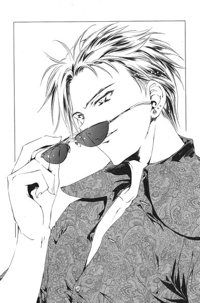
その時、ふっと会場が真っ暗になった。同時にマイクの電源も落ちる。
それと同時に会場の後ろのドアが開いて、巫女装束姿の八尋が拡声器を手に現れた。彼女は普段通りの甲高い声で叫んだ。
「誠に申し訳ございませんが、このホールの配電盤にトラブルが発生いたしました。火災が発生する危険性がございますので、お客様はこちらの指示通りにすみやかにご退場下さい......」
「何者だ、お前は」
と、暗がりの中で天明は言った。今までとはうって変わって下品な口調だった。
「俺ァ通りすがりの元ヤンの大学生。あんたがさっき言った通りだって」
ステージの上から見ると、会場のほとんどの客は退去を終えていた。隅の方にいくつか人影が見える程度である。
「にしても電源かよ。つまんねえごまかし方だなァ。この詐欺師が」
天明のスタッフがこのホールの電源を落としたのは分かっていた。「火事」云々というのは単なる口実だろう。それが証拠に、いつまで経っても消防車は到着しない。
雄一はひらりと床に飛び降りて、ステージの上の天明を見上げる──しかし、そこには誰もいなかった。
「お前、どうして俺の嘘をバラしたんだ？」
天明の声が背後から聞こえた。ぎょっとして雄一が振りかえると、天明は誰もいない客席の中に立っていた。
「俺は確かに嘘をついてる。しかし、俺は今の透視術で、この町の人間から金品を受け取ってない。だから正確には『詐欺』とは呼べないな。警察も俺の罪を問うことはないはずだ。それはお前にも分かってるだろ？」
「嘘は放っておけねえだろ。そんだけの話だ」
そう言いながら、頭の中では天明の不可解な移動のことを考えていた。雄一の頭上を通りこして、十メートル近くステージからジャンプしたことになる。しかもまったく音を立てずに。
瞬間移動でもしない限り、ありえない。
「まったく、このトリックを一目で見破るとはな。お前にも十分に人を騙す素質が備わってると思うが、嘘をつこうと思わないのか？」
「人を騙すのはあまり好きじゃねえ。んなことしなくてもやってけっからな」
「それはお前が強いからだな。嘘を必要としない珍しい人間だからだ」
「人を持ち上げるついでにテメエを正当化すんじゃねえよ、ボケが」
「誰かを騙さなければ、手に入らない強さもある。誰でも少しずつ嘘をつく。お前がつかなくても、お前の周りの人間は少しずつ嘘をついているはずだ。そういう人間の気持ちが分からない限り、お前の強さに頼る人間はいない」
「ワケ分かんねえ」
と、言いながら、雄一は裕生のことを思い出していた。自分に嘘をついていた弟は、結局雄一にはなにも事情を説明しようとはしなかった。
「お前は俺と正反対の存在だ。俺は嘘と同化している。俺自身が一つの嘘と言っていい」
「勝手にほざいてな。帰らせてもらうわ」
雄一はひらひらと手を振って、椅子と椅子の間を歩き始めた。
「......もう、俺には人間などどうでもいい」
不意に雄一の首筋の毛がぞわっと逆立ち、彼は反射的に飛びのいた。無意識のうちに両足を肩幅ほどに開いて、脇を締めながら両拳を上げる──明らかに戦うための構えだった。
（......ん？）
雄一はすぐに構えを解いた。我に返ると特になにも起こっていなかった。一瞬、この上なく明確な殺意をぶつけられた気がしたのだが。
天明は客席の間から、じっと雄一を見ていた。
「......帰らないのか？」
ちっと舌を鳴らして、雄一は歩き出した。
ふと、ここで起こったことを多分誰にも話さないだろうと彼は思った──自分が体験したものがなんなのか、うまく説明できる自信がなかった。
４
天明は雄一が出ていくのを見送ってから、会場の隅の方へ歩いていった。最後列の端の席に、二つの人影がぼんやり見えている。避難の誘導があるというのに、いつまで経ってもその二人の客は出ていかなかった。
雄一を龍子主に食わせることを思いとどまったのも、その二人がこちらを見ていたからだ。天明のいた箱形のステージの下には、常に龍子主を潜ませている。用意させたものを取り出すのも、その能力を使ってのことだった。あの雄一はステージの下になにかあることまで気づいていた。見逃すにはあまりにも勘がよすぎた。「本番」が明日でなければ、消していただろう。
しかし、今は目撃者の前で人を殺すのはまずい。人間などどうでもいいが、まだ明日に大事な用が控えている。
「どうかなさいましたか？」
と、天明はその二人に向かって言う。ようやく二人の顔を確認できる距離まで近づいていた。一人は小柄で、もう一人はがっちりした太め──二人とも見覚えがある。
「いや、ちょっとお話が聞きたくて残ってたんすよ」
と、太めの方が言った。
「俺たち、皇輝山文書について色々調べてるんですけど......」
「そんな口実は要らないな。佐貫峻、だったか」
天明がずばりと言うと、相手はぐっと詰まった。
「その隣のお前も昨日神社にいたはずだな。俺に聞きたいのはそんなことじゃないだろ？」
沈黙が流れた。二人は暗がりの中で、ちらっと顔を見合わせた。
「佐貫、やっぱり嘘が通用するような人じゃないよ。それに、ぼくたちの顔はもう知られてるし」
小柄な方が佐貫に向かって言った。確かに龍子主の五感を通じて、昨日の戦いの様子は把握している。あの場にいた全員の顔は分かっていた。
「ぼくは藤牧裕生です。初めまして」
そう言いながら、小柄な方がきちんと頭を下げた。
「本当のことを話します。ぼくの幼なじみに取りついているカゲヌシを、あなたのカゲヌシの力で殺して欲しい......そう思って来たんです」
「おい、裕生」
佐貫が渋い顔で言ったが、裕生はそれを手で制した。
天明は二人の顔を凝視する。真実を話している可能性もあるが、それ以上に罠を仕掛けている可能性がある。最初の佐貫の嘘は、見破られることを想定している気がした。こちらが見破ったら、「さすがですね。それでは本当のことを話します」と、さらに別の嘘を口にする──騙しのテクニックの一つだった。
もしこの少年たちがそれを意識的に使っているのだとしたら、相当の警戒が必要な相手ということになる。
「龍子主に殺して欲しいのは、あの『同族食い』か？」
裕生はうなずいた。
「ぼくはあの女の子......葉を人質に取られています。今日もあいつに命令されて、表向きはあのカゲヌシの契約者であるあなたを探りに来ました。でも、あなたのカゲヌシはあいつを傷つけることができた。ぼくはあいつを倒す時が来たんじゃないかと思ってるんです」
「......」
天明は直感的に裕生の話に嘘を感じ取っていた。全てが出任せではないが、話の一部に嘘を織り交ぜている。だから多少の真実味があるのだ。問題はどの部分が嘘なのか、今は判断ができないことだった。
「俺の龍子主があいつを完全に倒せると思うのか？」
「あいつはもともと他のカゲヌシを察知する能力が低い。だから、あなたのカゲヌシが近づいていくのも気づいてなかったでしょう？それに、首を一つ食われた今は武器を使うこともできない。あなたが都合のいい場所を指定してくれれば、ぼくがそこへ連れていきます。不意打ちで倒せるんじゃないですか」
「なるほど」
と、天明は言った。龍子主から得た情報と合致している──あのカゲヌシが同族を察知する能力が低いこと、食ったあの首に武器があったらしいこと。
「それで、あのカゲヌシを倒したらお前は俺をどうするつもりだ」
「どうもしません。ぼくはあのカゲヌシが死んで、葉が解放されればそれでいいんです。ぼくたちは普通の生活に戻りたいだけなんだ」
そういうことか、と天明は思った。あの娘はこの少年の恋人なのだ。
「俺が応じた場合のメリットはなんだ？ わざわざ危険を冒してあいつを殺す意義は？」
「メリットはありません。でも、あなたはもともと『同族食い』を殺すつもりだったんでしょう？それに、もしあなたが断ったら、ぼくは『黒の彼方』に『皇輝山天明があの蜥蜴のカゲヌシの契約者だった』って報告します。そうなったら、今夜にでもあいつはあなたに復讐しようとするでしょう。方法は言えませんが」
裕生が口にしているのは稚拙な脅迫だった──しかし、今夜という言葉に天明は反応した。もし本当だとすると、今夜はまずい。なにをするつもりかは分からないが、明日の「本番」を前に派手な騒ぎに巻きこまれるわけにはいかない。そのために色々と準備をして来たのだ。
ふと、天明の頭に閃くものがあった。いっそ、明日の「本番」で一緒に片づけるのはどうだろう。まとめて倒してしまえばいいではないか。
「いいだろう。今夜の襲撃を止めろ。そして、明日の鶴亀神社の祭りにヤツをおびき出すんだ」
「お祭りに？」
驚いたように裕生が聞きかえした。
「明日、俺はイベントを開く予定になってる。お前らは高校生だろ？恋人や友達と祭りにいっても別に不自然じゃない。その後、鶴亀山の頂上あたりに連れて来い。あそこなら人もいないだろうし、俺も土地勘があるからな」
「でも、急にできるかどうか......」
「できなければ構わない。ただ、その今夜の襲撃とやらを止めてくれたら、こちらもその礼をする準備があるってことだ。あのカゲヌシを殺してやるよ」
お前らも一緒だけどな、と天明は心の中で付け加えた。
「......やってみます」
と、裕生はうなずいた。
「ところで、あのカゲヌシと娘の名前は？」
と、天明は尋ねる。一瞬、裕生はためらってから口を開いた。
「カゲヌシの名前は『黒の彼方』。契約者は雛咲葉」
天明は大きく目を見開いた。
どうしたんだろう、と裕生は思った。
明らかに天明は驚いた顔をしている。「黒の彼方」を知っているはずはないので、葉の名前に反応したことになる。
「あの......葉を知ってるんですか？」
おそるおそる裕生は尋ねた。ここまでの話はそれなりにうまくいっていたと思うが、内心ではいつこちらの目的を見破られるかと思って冷や汗をかいていた。今、なにか決定的なミスを犯してしまったのかもしれない。
佐貫も隣で緊張しているのが分かる。どういう風に話を持ちかけるか考えたのはほとんど佐貫だった。最初に嘘をついて見破らせるのも彼のアイディアである。
「いや、そうじゃない。知り合いに雛咲という男がいたんでな。多分、そいつの娘だろう。娘が一人いるという話だった」
「葉のお父さんを知ってるんですか？」
裕生はここへ来た目的も忘れて言った。
「葉の両親は四年前にいなくなったんですけど」
と、言いかけて裕生ははっとした──四年前。天明が『皇輝山文書』を発見したのと同じ時期だった。
「それも知っている。雛咲清史は学生時代の俺の同級生だ。あいつの結婚式は鶴亀神社で挙げたんだ。もちろん、それも俺が執り行った」
そういえば、そんな話を聞いた気もする。葉の父親は娘と同じように無口だった。家にいる時に近所の子供が遊びに来ても、親しく話しかけてくるような人ではなく、いつも奥の部屋で難しそうな本を読んでいた記憶がある。あまり裕生の印象には残っていなかった。
「あなたは二人がいなくなった理由を知ってるんですか？」
「そこまでは知らん。いなくなる前にも何度か会っているが、詳しいことは話さなかったからな」
裕生は納得できなかった。この男はなにかを知っている。さらに質問しようと口を開いた時、佐貫が軽く彼の足を踏んだ──話題がズレてるぞ、と言いたいらしい。裕生はようやく我に返った。
「......とにかく、『黒の彼方』をおびき出せそうだったら、俺に連絡しろ......緊急の携帯の番号だ。ここにかければ必ず繋がる」
天明は手帳に番号を書いてから、そのページを破って裕生に手渡した。
「分かりました」
天明は裕生をじっと見守っている。なんとなく落ち着かない気分になってきた。ここは早く退散した方がいいかもしれない。
「じゃあ、ぼくたちはこれで」
佐貫を促して裕生は立ち上がる。二、三歩歩きかけたところで、突然天明の声が聞こえた。
「お前は俺と手を結ぼうとしているが、昨日は俺の龍子主を殺そうとしたよな？」
裕生は飛び上がりそうになったが、どうにかそれを抑えてゆっくりと振り向いた。心臓が音を立てて脈打っている。
「あの時は仕方なかったんです。あなたの龍子主が『黒の彼方』じゃなくて葉の方を狙ったから」
「そうか。そうだったな」
妙に親しげな口調に裕生は戸惑った。顔にはかすかな笑みさえ浮かんでいるように見える。一体なにを考えているのか分からない、底知れない相手だった。
「じゃあ、失礼します」
裕生たちは会場の外へと歩いていった。
５
裕生は重苦しい気分で玄関の戸を開けた。家の中は静まりかえっている。
「ただいま」
答えはなかった。葉の姿を捜したが、彼女が使っている部屋にもキッチンにもいない。居間のクーラーは点けっぱなしだった。
（どこに行ったんだろう）
裕生は居間の真ん中に立ちすくんだ。まだ体の調子もよくないはずだし、そうでなくともどこかへ出かけるはずがないのだが。
何気なく窓の外を見る──葉がベランダに立っていた。普段家で着ているブラウスとジーンズに着替えている。ほっと安堵の息を洩らしながら窓を開けると、葉が振りかえった。
「ただいま」
「......お帰りなさい」
嬉しそうに葉が微笑んだ。
「具合は？」
「もう大丈夫だと思います」
裕生は葉の顔を覗きこんだ。朝に比べると、顔色はだいぶよくなっていた。
「先輩はどうでした？」
「え？」
一瞬、裕生は虚を衝かれたが、すぐに「蜥蜴のカゲヌシについて調べにいく」と言って団地を出たことを思い出した。
「うん......あの時間神社にいたことが分かってる人は、全員カゲヌシとは関係ないみたいだった。でも、神社は自由に人が出入りできるし、契約者がたまたまあそこに見物に来てて、葉に気が付いたんだと思う」
口が重くなるのを我慢しながら裕生は言った。今は本当のことを教えるわけにはいかなかった。
「そうですか......」
葉はベランダの外を見た。曇り空の下に見慣れた町並みが広がっている。ずっと先の方にぽつんと緑に覆われた鶴亀山が見えた。
（明日のこと言わなきゃ）
裕生は自分に言い聞かせた。彼女を明日の祭りに連れていかなければならない。しかし彼が口を開く前に、
「あの、先輩」
おずおずと葉が言った。
「わたしのこと、怒ってますか？」
「えっ？」
裕生は目を瞬いた。思いも寄らない言葉だった。
「記憶がなくなってること、わたしがなかなか話さなかったから」
「怒ってないよ。なんでそんなこと考えるの」
正直なところ、怒りの気持ちがないわけではない──ただしその対象は葉ではなく、彼女に取りついた「黒の彼方」であり、呑気に構えていた自分自身だった。
「最近、先輩がわたしになにか隠してる気がして」
裕生ははっと胸を衝かれたが、表情は変えなかった。
「そんなことないよ。葉には隠し事なんかしない」
「本当ですか？」
明日までの辛抱だと裕生は思った。明日、うまく「黒の彼方」を倒すことができれば、ちゃんと説明して謝ることができる。それまでは隠さなければならない。それは自分でも納得したつもりだったのだが。
「......うん。本当だよ」
葉は安心したように両手を胸に当てた。
「よかった。なんだか先輩が変だったから、どうしても聞きたかったの」
「......」
彼女の笑顔を見ていると、例の話を持ちかける勇気は湧いて来なかった。
「そういえば、今朝はごめんなさい」
と、葉が言った。
「え？」
「わたし、寝てて作らなかったから。おじさんたち、ご飯はどうしたんですか」
「ああ、ぼくが適当に作って食べさせたよ......って、それ午前中も」
言ったと思うけど、という言葉を裕生はぎりぎりのところで呑みこんだ。胸のあたりに冷たいものを押しつけられた気分だった。
（時間がないんだ）
ためらっている暇はない。茜の話を聞いた限りでは、カゲヌシが消えても記憶が戻るわけではない。裕生にできることと言えば、これ以上症状が進まないうちに「黒の彼方」を倒すことだけだ。
裕生は覚悟を決めた。
「あのさ、葉。実は話があるんだけど──」
その日の夕方。バイトを終えたみちるは、鳥居をくぐって神社の外へ出た。今日で仕事は終わりで、宮司の来山からバイト代も受け取っている。彼女だけではなく、葉の分も一緒に貰っていた。「一応、働いてもらったし、少しだけど彼女にも渡して下さい」と、来山に頼まれたのだった。
みちるは暗い気持ちで考える──多分、明日には葉に会うはずだ。その時に渡せばいいだろう。
神社は鶴亀山の中腹にあり、鳥居の先はアスファルトのなだらかな坂道になっている。歩道を歩いていくみちるの目に、二台の大型のタンクローリーが列を作って神社に向かって上って来るのが見えた。
轟音を立てながらすれ違う大型車を、みちるは首をかしげながら見送った。この道の先には鶴亀神社と鶴亀山公園しかないはずだ。どちらもあんな車に関係のある場所とは思えない。どこへ行くのか見届けようと思った時、肩から下げたバッグの中の携帯が鳴っていることに気づいた。
タンクローリーのことを忘れて、みちるは慌てて携帯を出した──裕生の自宅からの電話だった。
「あ、藤牧？」
つながってすぐに話しかけると、沈黙が流れた。なんだろう、と思っていると、
『......あの、雛咲です』
妙にくぐもった声が聞こえた。一瞬、みちるは唇を噛みしめた。
「ごめんごめん。藤牧んちの電話番号だったから......体、大丈夫？」
『はい。もう大丈夫です......その、昨日のことは......』
みちるは思わずぎゅっと携帯を握りしめる。あの龍子主のことを言っているに違いない。
「うん......まあ、びっくりしたけど、正直あたしもびっくりしてたからよく憶えてないんだよね。藤牧は色々事情があるって言ってたし、あたしもああいうことに係わりたくないし。とにかく、誰にも言わないから安心して」
『......』
その説明で葉が納得するかどうかは分からなかった。本来の西尾みちるなら、目の前で起こった出来事に、こんな風に無関係を装うことはないはずである。嘘と分かっていても不愉快だった。
「あ、用事ってそのこと？」
あまりそれについては話したくなかったので、みちるは話題を変えた。
『いえ......あの、お祭りのことって聞いてますか？』
みちるは大きく息を吸いこんで、ふうっと吐き出した。確かにすでに聞かされていた。さっき神社を出る前に、佐貫と電話で話したからだ。むろん、天明との駆け引きがどういうものだったのかも聞いている。
「うん、雛咲さんも誘って四人でいこうかって話は聞いたけど。結局どうなったの？」
『わたしもいきます』
「あ、そうなんだ」
『それで......あの......』
さっきから葉が声を低くして喋っていることに、みちるは気づいていた。多分、裕生に隠れて電話しているのだろう。ますます気が重くなった。
『......浴衣、着たいんですけど』
恥ずかしそうに葉は言う。やっぱり、とみちるは思った。ひどくやりきれない気持ちだった。彼女はただお祭りにいこうと誘われたと思って、本当に楽しみにしているのだ。
「うん。いいよ。うちの母さんも喜ぶだろうし」
『ありがとうございます。それで、あの......』
「なに？」
『浴衣のこと、藤牧先輩には内緒にしてもらえますか？......びっくりさせたいから』
一瞬、みちるはなにもかもぶちまけたくなり──どうにかその衝動をぎゅっと抑えこんだ。
「......うん。分かった」
やっとのことでそれだけ言った。
６
鶴亀駅近くのビジネスホテルの最上階には、狭いながらもスイートルームがある。
天明はソファにぐったりと体を沈め、窓の方をぼんやりと眺めていた。とうに日は暮れており、ガラスには外の景色ではなく部屋の中が映っている。天明のタキシードには皺が寄り、頬には青くひげが伸び始めている。窓の中の彼は普段よりも老けて見えた。
彼の隣には龍子主が待っていた。「黒の彼方」から受けた全身の傷は、まだ完全には癒えていない。昨日の戦いに司令塔として天明も参加していれば、あのカゲヌシに苦戦することもなかったはずだ。明日は大いに働いてもらわなければならない。そのためにさっきから──。
（......ん？）
天明は首をかしげた。「さっきから」なんなのか、よく分からなかったからだ。
その時、肌身離さず持っている緊急用の携帯が鳴った。通話ボタンを押すと、
『あの、藤牧です』
「ああ、どうなった？」
ざらざらした龍子主の背中を撫でながら天明は言った。
『大丈夫です。誘ったらいくって言いました。明日、ぼくが連れていきます』
なるほど、と天明はぼんやり思った。こいつもこれで死亡確定だ。
「じゃあ明日の晩、鶴亀山公園でやる俺のショーを見に来い」
沈黙が流れた。
『あの、祭りが終わった後にお会いするんじゃないんですか？』
そう言えば、そんな話だったかな。
「いや、直接会うのはもちろん祭りの後だ。あの契約者がどういう状態なのか、俺の目で確認しておきたいんだ。別に怪しまれる気遣いはない。こっちはステージの上からでもどこにいるかが分かる。お前は公園に自分の彼女を連れて来て、俺のショーを見ていればいい」
『分かりました』
まだまだガキだな、と天明は心の中でつぶやいた。ふと、龍子主の背中を撫でていた手が、丸いくぼみのような傷に触れた。裕生があの黒い液体をかけた跡だった。あの液体の傷だけは治りが遅い。
『それじゃ、また明日』
と、裕生が言った。
「あ、昨日お前が龍子主に使ったあの薬な」
『え？』
裕生が戸惑ったように聞きかえして来た。天明はこの少年に親しみを覚えていた──たとえ、自分に嘘をついていたとしても。
少しぐらいは役に立つ情報を与えてもいいだろう。
もちろん、明日殺すつもりだが。
「あれは『同族食い』の血だと思うぞ......俺の勘だが」
「......」
彼はなにも言わなかった。おそらく必死に天明の言葉の意図を考えているのだろう。そんなものはありはしないのだが。
「話はそれだけだ。じゃあ」
と言って、天明は一方的に電話を切った。
龍子主は天明の隣でぴくりとも動かない。普段よりもさらに動きが鈍かった。あの傷を負ったせいだと思っていたが、ひょっとするとそれが理由ではないのかもしれない。そのせいで、あんなに──。
天明は眉の間をつまんで考えこんだ。また、思い出せない。一体なにを忘れているのだろう。
その時、ノックの音が聞こえた。龍子主を影に戻してからドアを開けると、八尋が立っていた。化粧を完全に落とし、地味なブラウスとロングスカート姿の彼女は、ほとんど昼間とは別人だった。
「あんたにちょっと話があるんだけど」
部屋に入ってくるなり彼女は言った。どうやらかなり腹を立てているらしい。
「どうしたんだ」
後ろ手にドアを閉めながら、天明は尋ねる。
「どうしたじゃないわよ。あんた、なに考えてんの？」
彼女は天明を睨みつけた。
「今まで我慢してたけど、もう限界。はっきり言わせてもらうわ」
「ほう」
短い答えだったが、無関心な声の調子に八尋は一瞬気圧されたようだった。そう言えば、天明は彼女に対してこんな態度を取ったことはない。「ビジネス」のパートナーとして常に敬意を払い、全幅の信頼を置いて来たからだ。
「あんた、この町でなにをしようとしてるの」
「ビジネスだよ。他の土地でやって来たことと同じだ」
「ふざけないでよ！」
八尋はほとんどつかみかからんとする勢いで叫んだ。
「なにがビジネスよ。あんたはこの町に来て以来、今まで稼いだ金をせっせとばらまいてるだけじゃない。あんたの個人名義の銀行口座」
八尋はスカートのポケットから通帳を引っ張り出すと、テーブルの上に叩きつけた。いつのまに、と天明は思った。
「ほとんど残ってないじゃない。一体なにに使ったの？」
「......さすがに仕事が早いな。いつ俺のスーツケースから抜いたんだ」
「はぐらかさないでちゃんと答えなさいよ。家一軒買ったってお釣りが来る金額よ？あんた、前はそろそろこういうヤバい仕事も潮時だって言ってたじゃない。お金もたまって来たから、まともな商売するのにちょうどいい機会だって」
「......」
そんなことを言った記憶はなかった。しかし、以前だったらそう言ったかもしれない。少し前から、自分がなにを目的に日々を過ごしてきたのか分からなくなりつつあった。おそらく、龍子主に取りつかれてからだろう。
確かなものは時々やって来る妙にくっきりとした殺意だけだった。誰かを殺して龍子主を満足させる──一度そう思い始めると、他のことはなにもかもどうでもよくなってしまう。
「この町に来てから、あんたは仕事に興味を示さなくなった。『ショー』だって機械的に開いてるだけで全然やる気がないじゃない。カモになりそうな『客』は何人もいるのに、あんたは全然手をつけようとしない」
天明は自分の頬がゆるむのを感じた──一人は龍子主が「手をつけ」てしまったが。
「最近は『ショー』だってすっぽかすしね。今日の午後は結局どこにいってたの？」
「今日？」
ふと、天明は眉をひそめた。あの藤牧雄一のせいで、無惨に終わった午前の『ショー』のことははっきり憶えている。しかし、あの後でどこかへ出かけた記憶など天明にはなかった。
ただ、午後のショーをこなした記憶もなかった。
「後、あたしの方に請求書が来てたけど、タンクローリーをドライバーごとレンタルするってどういうこと？他にもわけの分かんない買い物をたくさんしてるみたいじゃない」
「......」
タンクローリーについてははっきり憶えているが、この女にそれを言うわけにはいかなかった。不意に八尋はタバコをくわえて、瀟洒なデザインのライターで火を点けた。気持ちを落ち着かせようとする時の彼女の癖だった。
「ねえ、本当にあんたはこの町でなにをやってるの？」
再び八尋が問いかけるが、天明は答えない。無意識のうちに、かち、と歯を鳴らしていた。
長い沈黙が続く──ふっと煙を吐き出し、彼女は表情を和らげた。
「ここはあんたにとっての故郷だし、逃げ出すのはすごく辛かったんでしょう。だからずっと帰ってきたかったのね......それぐらいは分かるわよ」
かちかち、と天明の歯がまた鳴る。彼の思考は霧がかかったようにぼやけてきていた。
「でも、この町であんたがやってることははっきり言ってメチャクチャよ。だって」
「俺はこの町に帰って来たかったんじゃない」
と、天明はうめくように言った。
「この町をメチャクチャにしたかったんだ」
かちかちかち。天明の顎がまた動いた。八尋の話を聞くのが苦痛でたまらなかった。いっそ、この女も殺して──。
「ねえ天明。この町を出ましょう」
穏やかな声で八尋が言った。天明は呆然と彼女を見返した。
「......町を出る？」
生まれて初めてその言葉を聞いたように、天明は口の中で繰り返した。
「使っちゃったお金はもうしょうがないわ。ここを出て、また二人で稼ぎましょう。この町にいるのはあんたにとってよくないことよ。なんだか取り返しのつかないことが起こりそうな気がするの」
天明はぎゅっと目を閉じて、まとまらない思考を集中させようと試みた。彼女の勘や判断は常に間違わない。そう思ったから彼女をパートナーに選び、そして彼女の提案には常に従って来たのだ。今回もそうするべきではないのだろうか。
「......そうだな」
いつのまにか歯の震えは止まっている。そう口に出してみると、どう考えてもそれがいいような気がした。まだやり直しもきくはずだ。人を何人か殺してしまったけれど。
「そうと決まったらすぐに撤収の準備よ」
八尋は明るい声で言い、テーブルの上の灰皿にタバコを押しつけた。そして、ベッドルームへ歩いていった。
「荷造りはあたしがしてあげるから。どうせちゃんと片づけてないんでしょう？」
天明は無言でうなずいた。もともと、人を殺したいと思ったことはない。おかしくなったのは全て龍子主が現れてからだ。八尋を殺してしまう前でよかった、と彼は胸を撫で下ろした。なにしろ、他のスタッフは──。
「そう言えば、あたし以外のスタッフはどこにいったの」
ドアを開けかけていた八尋が、天明を振りかえった。
「え？」
それは八尋の言葉と自分の考えの、双方に対する反応だった。
「さっきまで一人ずつ面接してたでしょ。一体、なんだったの。誰も自分の部屋へ戻ってないみたいだけど、どこかでなにかさせてるわけ？」
天明はごくりと喉を鳴らした。かすかに開いたベッドルームのドアの向こうから、濃厚な血の臭いが漂ってきていた──ようやく、自分がなにをしていたのか、天明は理解した。とうの昔に手遅れになっていたのだ。
彼が八尋の方へ歩き出すのとほとんど同時に、彼女はベッドルームを覗きこんだ。
「八尋」
かすれた声で天明が呼びかけると、彼女はぴくりと体を震わせながら振りかえった。顔色は紙のように白くなっていた。
「......どういうこと？」
「龍子主の調子がよくないんだ。それで、みんなを食わせた......お前以外のみんなを」
天明は首を振りながら悲しげにつぶやいた。
「それでも調子が悪い。普段なら丸ごと食うんだが、今日はやけに食い散らかすんだよ」
八尋はへなへなとその場に座りこんだ。天明は覆い被さるように彼女に自分の顔を近づけ、かちかちかちかち、と歯を鳴らした。
「......あ、あんたがやったの？」
「八尋」
自分がなにをしたいのか、これからなにをしようとしているのか、なにを口にしているのか、もはや天明にははっきり分からなかった。はっきりしているのは、奇妙にくっきりとした何者かの意志──人間を皆殺しにして食い尽くす。彼の中にいる、彼以外のものが持っている欲望だった。
「ここで見たことを、忘れられるか？」
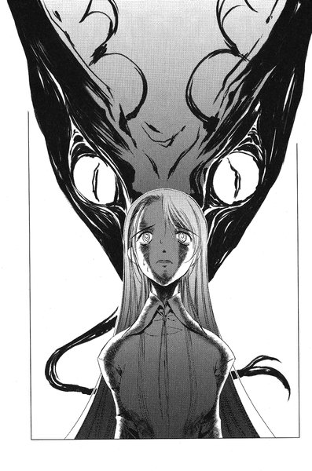
彼女はかくかくと首を縦に振った。うなずいているようにも、震えているようにも見えた。
「じゃあ、命だけは助ける」
八尋がかすかに息をついた瞬間、
「龍子主」
天明の背後に巨大な蜥蜴が現れる。彼はすっと脇へどいた。ゆっくりと怪物が八尋に向かって前進し始めた。
「......助けて」
「助けるよ。だから、誰にも言うなよ」
天明はうわごとのようにつぶやいた。
「お前は殺さないでおいてやるからな」
八尋はかかとで床を蹴りながら、壁に沿って後ずさりをした。すぐに部屋の一隅に追いつめられる。彼女は丸く目を見開いて、すがるように天明を見上げた。
助けるって言ったじゃない、と言っている気がした。
「安心しろ。俺はお前を殺さないから。殺さないから」
彼女の眼前に迫った蜥蜴の舌が、冷や汗と涙に濡れた八尋の頬をちろりと舐めた。
「お前を殺さない......殺さない...殺さない殺さない殺さない殺さない殺さない」
血走った目を大きく見開きながら、天明は呪文のように繰り返す。そして、龍子主がかぱっと顎を開いた。
「......うそつき」
それが八尋の最期の言葉だった。
第五章 「血祭」
１
『あんまり気にすることねえんじゃねえか』
と、電話の向こうで佐貫だった。
「でも、あいつが意味もなくぼくになにか教えてくれるなんて思えないんだよ」
裕生はベランダの隅にうずくまって、携帯で電話している。小声で話しているのは、部屋にいるはずの葉に聞かれないためだった。
彼が話しているのは、昨日の晩天明が言ったことについてだった。裕生が使ったカゲヌシの毒は、「黒の彼方」の血から作られたかもしれない、という話だった。
『そうだとしても、俺たちのやろうとしてることになんか影響するわけじゃないだろ』
確かにその通りだった。あまり気にする必要はないのかもしれない。
『それが本当だとすると、『黒の彼方』っていうのは他のカゲヌシとは体の造りとかも全然違うってことになるよな』
「うん。そうだね」
前にアブサロムも「黒の彼方」はカゲヌシの階位からはずれた存在だと言っていた。
『でも、『黒の彼方』の血だったら、お前が会ったっていうレインメイカーだったか？そいつはどうやって手に入れたんだろうな。それも分からないんだろ？』
「......うん」
彼の存在もよく分からない。人間なのかどうかもはっきりしないし、彼の口にした言葉もよく分からなかった。特に「ドッグヘッド」というあの言葉が、裕生には気になっていた。黒の彼方を倒すためには首を切れ、という意味に取れたが、なんとなく他の意味もあるような気がした。
『今のところ、そっちはうまくいってるんだろ？』
と、佐貫が言った。
「うん。多分、気が付かれてないと思う」
『俺の方も例のものはうまくいったから。じゃあ、後でな』
佐貫との電話が終わって、部屋に戻ると葉が立っていた。
「あれっ」
裕生は目を瞠った。葉はブラウスとスカートを着て、肩からトートバッグを下げている。すっかり出かける準備を終えていた。
「どうしたの？」
時計を見るとまだ二時前だった。待ち合わせは駅前に五時だから、いくらなんでも早すぎる。
「わたし、用事があるから先にいきます」
「はあ？」
裕生は思わず聞きかえした。急に出かけると言い出したのも驚きだが、妙に楽しそうに見えるのも気になる。
「待ち合わせの時間にはちゃんと駅にいきますから」
そう言い捨てて、彼女はすたすたと部屋を出ていった。裕生は慌てて後を追う。
「ちょっと待って。用事ってどこにいくの？」
「秘密です」
葉は笑顔で答えた。
「秘密じゃなくて、万が一のことがあったら......その、行き先ぐらいは言って欲しいんだけど」
葉は玄関先で立ち止まって、しばらく考えこむ様子だったが、やがて口を開いた。
「西尾さんのうち」
「え？ 西尾？」
まったく予想もしていない返事に、裕生はますます混乱した。
「いってきます」
彼女はサンダルをはいて、外へ出ていった。
「うん。雛咲さん来てるよ。昨日約束したから」
みちるはむすっとした顔で携帯に向かって言った。
『それなら昨日ぼくに教えてくれればよかったのに』
ここはみちるの家。今、葉は和室でこれから着る浴衣を選んでいる。裕生から電話がかかってきたことに気づいて、みちるだけ部屋を抜け出したのだった。
「色々言えないこともあるの！ しょうがないでしょ」
『え、どういうこと？』
「うるさいなあ。少しは自分で考えなよ。じゃ、あたし忙しいから。後でね」
みちるは一方的に電話を切り、はあ、と深いため息をついた。そして、重い足取りで和室へ戻る。ふすまを開けると、母の由紀恵が葉と膝をつき合わせて熱心に話しこんでいるところだった。みちるが戻って来たのにも気づいていない。
「若いからなんでも似合うと思うけど、おばさんのお薦めは紺地のこの柄。こっちはちょっと模様が細かいから地味すぎるけど、白の花柄のこれもかわいいわね......あ、雛咲さんはどういう感じがいいのかしら？大人っぽくしたい？それともかわいらしくしたい？」
普段の由紀恵はおっとりしていて、どちらかというと口数も少ないのだが、今は別人のように目を輝かせて喋り続けている。とにかく、若い娘に着物を着せるのがなによりも好きだった。
「......大人っぽく」
葉は真顔で答えた。
「そう。じゃあ、浴衣はこれにして、次は帯を......あら、みちるちゃん」
由紀恵はようやく娘の存在に気づいた。葉も顔を上げる。
「みちるちゃんはどの浴衣にするの？ 早く選びなさい」
来たよ、とみちるは心の中でつぶやいた。
「だから、あたしは着ないって何回言えば分かるのよ」
「なに言ってるのかしら。お友達が着るのにあなたが着ないなんてそんなの許しません。ダメです、絶対。ねえ？」
と、葉に合意を求める。彼女は戸惑ったようにうなずいた。
「ほら、雛咲さんもそんなの一生許さないって......」
「言ってないでしょ。やめてよもう。恥ずかしい」
みちるはお祭りに行く時に浴衣をあまり着たがらない。ただでさえ動きづらいのに、人混みの中を長時間歩かなければならないからだ。去年、鶴亀神社の夏祭りにいった時も、いつも通りＴシャツとジーンズで出かけ、由紀恵をがっかりさせていた。
それに、今日はただお祭りを見るのが目的ではない。どんな危険な事態になるか分からないというのに、動きにくい格好は避けたかった。
「そんなに着たくないなんて、浴衣になにか恨みでもあるのかしら......」
由紀恵は浴衣の生地を撫でながら、大袈裟にため息をついた。
「あるわけないでしょ。っていうかなんでそんなに熱心なわけ？そっちの方がおかしいよ」
「じゃあ、なんで着たくないのかちゃんとお母さんに説明しなさい」
「だって今日は」
みちるははっと口をつぐんだ。葉が不審げにみちるを見上げている。あまり断り続けていると、今日なにかあると感づいてしまうかもしれない。
（ああもう。しょうがない）
「分かった。着るわ」
みちるはしぶしぶ言った。
裕生は待ち合わせの時間より少し早めに加賀見駅に着いた。駅前にはお祭りにいくために待ち合わせをしている人々でごったがえしていた。時折、女の子が華やかな浴衣姿で通りかかる。なんとなくそれを目で追っていると、
「早いな」
と、声をかけられた。スポーツバッグを肩から下げた佐貫が立っていた。プールに泳ぎにいった帰りという印象である。
「そっちこそ」
裕生が言うと、佐貫は顔を寄せてにやっと笑った。
「例のもの、できてるぞ」
そう言いながら佐貫はバッグのジッパーを開いた。一番上に二十センチほどの長さの鉄パイプのようなものが三本見える。先端にはビニールホースで作ったらしいキャップがはまっていた。
「これが俺の作った対カゲヌシ用の『武器』だ」
と、佐貫は自慢げに言った。
「これを使えば、例の『毒』をカゲヌシの体に直接注入できる」
「この筒の中に例の『毒』が入ってるの？」
ああ、と佐貫はうなずいた。裕生はパイプのうちの一本を握って、軽く振ってみた。かすかに水音らしきものが聞こえる。昨日、佐貫は裕生から例のビンを受け取って、たった一晩でこれを作ったのだった。
「よくこんなの作れるね」
裕生は感心して言った。予想以上にちゃんとした「武器」のようだった。
「俺が工作部だったの忘れたのか？ それに、俺んちには大抵の工具は揃ってるからな」
「どうやって使うの？」
佐貫はパイプのキャップを外した。パイプの中に少し半径が小さな別のパイプが入っている。ほんの少し飛び出た先端の部分は斜めに切り取られており、なんとなく注射針を思わせた。
「この筒の中に入ってる尖ったパイプ、これが本体だ。この中に例の毒が入ってる。バネの力を使った注射器だと思ってくれればいい。使い方は簡単だ。キャップを外して、この尖ったところをカゲヌシの体に押しつければいい。それがスイッチになって、この本体がカゲヌシの体に突き刺さる。で、同時に本体の中の毒も敵の体に流しこまれる」
裕生はうなずいた。「黒の彼方」が、あの龍子主に倒された後は、自分たちがこれを使って残ったカゲヌシを倒すのだ。
「全部で三本あるから、俺とお前と西尾で一本ずつだな」
佐貫はそう言いながら、ジッパーを元通りに閉じた。
「そういえば、雛咲さんは？ トイレかなんかか？」
「ぼくと一緒に来なかったんだよ。西尾の家にいったから、西尾と一緒に来るんじゃないかな」
「なんで西尾？」
「さあ......」
その時、浴衣姿の女の子の二人連れが改札口の方へ向かって来るのが見えた。浴衣を着ている女の子など別に珍しくもない。裕生はさして気に留めずに、葉たちの姿を捜していた。しかし、二人は改札口に入らずに、裕生たちの前で足を留めた。裕生はそれでもまったく別の方向を見ていたが、
「......藤牧先輩」
女の子の一人が口を開いた。
「えっ」
裕生は初めて彼女たちの顔を見た──立っていたのは浴衣を着た葉とみちるだった。
裕生と佐貫は完全に固まっていた。
（そりゃ、驚くよね......）
と、みちるは思った。葉は紺地に大きな花柄の浴衣に、あざやかな黄色の帯を合わせている。みちるはえんじ色の浴衣を着て、長い髪の毛をアップにまとめていた。
先に硬直が解けたのは佐貫の方だった。彼はみちるの腕をつかむと、他の二人から少し距離を置いた。そして、顔を寄せて小声で話しかけて来た。
「なにやってんだよ、お前。それで戦うつもりか？」
「しょうがないでしょ。あたしだって好きで着たんじゃないわよ。着ないわけにはいかなかったの！」
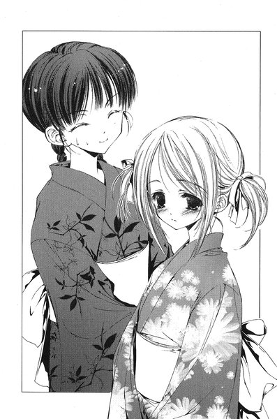
佐貫はやれやれというように首を振り、冷たい目でみちるの全身をじろじろ見た。
「まったく......」
ふと、みちるは自分の浴衣を見下ろした。無理もないことだとは分かっていたが、ほんの少し彼女は悲しくなった。佐貫に誉められようと期待していたつもりはまったくない。それでも、我ながらこの浴衣は似合っていると思う──生ゴミの袋でも眺めるような冷たい目はせめてやめて欲しかった。
葉たちの方を振りかえると、相変わらず裕生は固まったままだった。あまりにも反応がないので不安になったのか、
「あの......？」
葉はおそるおそる裕生の顔を窺った。
（藤牧、誉めて。そこは誉めてあげて）
みちるはテレパシーでも送るように強く念じた。浴衣とはいえ、初めての着付けは葉にとってかなり大変だったはずだ。それでも裕生はなにも言わない。なにかフォローした方がいいかもしれないと思い始めた時、裕生が微笑んだ。
「ああびっくりした。最初誰かと思ったよ......すごくよく似合ってるよ」
葉の顔に心の底から嬉しそうな笑みが広がった。ああよかった、とみちるはほっと息をつく。自分が誉められたように胸が温かくなった。
「どうしたの、その浴衣」
「西尾さんに貸してもらいました」
裕生は葉に向けていたのと同じ笑顔でみちるを見た。
「西尾が浴衣着てるとこなんか初めて見た」
と、裕生は言った。
「その浴衣似合ってるね。なんか普段と違う」
（あ......）
みちるはかっと頬が熱くなるのを感じた。嬉しい気持ちがこみ上げて来るのを留められなかった。
「う、うん。ありがとう」
少し視線を逸らしながらみちるは言った。
「......そろそろいこうぜ」
と、佐貫が言い、他の三人もうなずいた。
２
鶴亀駅の改札口を抜けた瞬間から、人の数が一気に増えた気がした。いつもは閑散としている駅前も、ほとんど周囲の見通しが利かないほど混雑している。
商店街から鶴亀山までの道路の両側は、提灯で飾られている。露店の多くは神社の中にあるが、神社までの道路にもところどころに飲み物やお菓子を売る店が並んでいる。人々のほとんどは、最大のイベントである花火大会を見るために神社の方へ歩いていた。
葉たちも人の流れに沿って進んでいた。佐貫とみちるが並んで前を歩き、その後ろから少し離れて裕生と葉が歩いていた。
葉はほとんど有頂天になっていた。最後に鶴亀祭りに来たのは、彼女が小学生の頃だった。父親と手を繋いで、ほとんど無言でこの道を歩いたのを憶えている。少しひんやりした骨張った手の感触が、彼女の手の中にありありと蘇った。
ふと、彼女は隣を歩いている裕生の手を見た。あの時の父親の手に少し似ている気がした。
握ったら怒られるかな、と彼女は思った。
ひょっとすると笑って握りかえしてくれるかもしれない。しかし、そんな大それたことを試す勇気はなかった。
その時、裕生がいる側とは反対の肩が誰かに触れた。はきなれない下駄のせいもあり、葉はふらっとよろめいた。次の瞬間、裕生の手が葉の手首を握っていた。
「だいぶ混雑してきたから」
裕生は真面目な顔で言い、そのまま葉の手首を握ったまま歩いていく。
「......いたいです」
本当は痛くはなかったが、彼女はそう言った。
「あ、ごめん」
慌てて放した裕生の手を、彼女はしっかり握り直した。
葉たちは鶴亀神社のふもとまで来ていた。なだらかな坂の上に神社の鳥居が見える。鶴亀神社へ通じる大きな道路はこの一本だけだった。ふと、葉は電信柱にくくりつけられている看板に目を留めた。さっきから同じものを何度も見かけるのだが、「皇輝山天明マジックショー」と大きな字で書かれている。
「......イベントがあるみたいだね」
と、裕生が言った。
「ちょっと見にいってみようか」
葉は彼の顔をまじまじと見る。薄暗いせいかもしれないが、どことなく陰のある悲しげな顔に見えた。
「その後で神社の方にもいってみようよ。色々お店も出てるし。なんか欲しいものある？」
しかしそれは一瞬のことで、すぐに普段の裕生に戻っていた。
「......リンゴあめ」
葉はそう答えながら、前の方を歩いている佐貫とみちるを見る。二人は親しげに顔を寄せて話をしている。今は佐貫が自分のバッグを開けて、なにかみちるに説明しているようだった。
「おい、手ェ繋いでるぞ。後ろ」
例の「武器」の説明をしていた佐貫は、にやにやしながらみちるの肘をつついた。
「西尾？」
呼びかけると、彼女ははっと我に返ったようだった。
「あ、ごめん。キャップを外して、押しつければいいんでしょ？」
「......」
大丈夫かよ、と思ったが、佐貫はそれ以上なにも言わなかった。
先ほどから佐貫には少し気がかりなことがあった。別に自分たちには関係のないことだと思っていたが──やはり気にかかる。
皇輝山天明は、なんの目的でこの町に戻って来たのだろう。
「同族食い」である「黒の彼方」を倒すためではないことははっきりしているし、誰かから金を騙し取るためでもない。佐貫が調べた範囲では、むしろ天明は気味が悪いほど気前よく金をばらまいていた。
どうして事前に自分のイベントを見に来るよう指定したのかも、考えてみればよく分からない。契約者のなにを確認するつもりなのだろう。ただ、こちらの意図が完全に読まれているとも思えなかった。いや、それどころか天明はこちらがなにを考えているか、あまり関心がないかのように見える。
そんなことなどどうでもよくなるほどの、もっと大事な目的があるかのような。
（まあ、ここまで来たらもうどうしようもないけど）
と、彼は思った。すでに始まったことなのだから。
社務所の一室に設けられた控え室で、皇輝山天明は目を閉じて正座していた。全身黒ずくめのスーツとマントに身を包み、髪もぴたりとなでつけている。一分の隙もないいでたちだった。
「そろそろですよ」
不意にふすまが開いて、来山が声をかけてきた。天明はふと目を開けて、
「すまんな」
と、言いながら立ち上がる。内心、開ける時は声ぐらいかけろと思っていた。膝の上に置いてあった、アンテナのついた小さな機械を慌ててマントの中に隠す。来山は気づいていないようだった。
「どういうショーになるのか、わたしたちも楽しみにしていますよ」
廊下を歩きながら来山が言った。それはそうだろう、と天明はひそかにほくそ笑んだ。夏祭りの実行委員会には「簡単なマジックショー」としか説明していなかった。連中に多めの金をばらまいたのは、詳しい説明を避けるためでもある。
「一応、打ち合わせをしたいと実行委員の方たちがいらしてますけど」
「いや、さっきも言ったが、別に必要ないだろう。音楽も特別な照明も要らない。大して時間もかからないシンプルなショーだからな」
社務所の玄関で靴をはくと、天明は弟を振りかえった。
「お前も見に来てくれるのか？」
「ちょっと忙しいですが、できるだけ見るつもりです」
「そうか、それはよかった」
かちかち、と天明は笑顔で歯を鳴らした。
鶴亀山公園はもともと町の人々がスポーツを楽しむために作られた場所で、「公園」と言ってもサッカーや野球ができる大きさのグラウンドを金網のフェンスが囲んでいるだけだった。
普段ならバックネットの見えるあたりに、今日は大きなステージが設置されている。グラウンドは大勢の人々でごったがえしているが、「皇輝山天明ショー」を見に来たわけではなく、その後から始まる花火大会を待っている人たちがほとんどだった。
「......もうちょっとステージに近い方がいいのかな」
と、裕生は言った。四人ははぐれないようひとかたまりになって、グラウンドに足を踏み入れていた。立ち止まっている人の群れをかき分けて前へ進もうとすると、不意に佐貫に肩をつかまれた。
「あのな、裕生」
佐貫は葉に聞かれないように小声で話しかける。
「あまりステージに近づかない方がいいんじゃねえか」
「どういうこと？」
裕生が尋ねると、佐貫も首をかしげる。
「俺にも分かんねえけど、なんかちょっとこう......イヤな予感みたいなのが」
その時、グラウンドを囲んでいた水銀灯が消えて、代わりにステージを照らすライトが点いた。暗がりにパイプで組まれた即席のステージが浮かび上がる。なにが始まるのかとグラウンドにいた人々もステージの方を振りかえり始めた。
「......あっ」
不意に裕生たちの背後にいた葉が声を上げた。
一瞬だったが、間違いなかった──確かに葉はカゲヌシの気配を感じた。
彼女はあたりを見回した。しかし、これだけの人出でどこに契約者がいるのか、分かるはずがない。
「雛咲さん？」
隣にいたみちるが怪訝そうな顔をしている。葉は佐貫と話している裕生の腕をつかんで、強引に引き離した。
「なに？ どうしたの？」
「......カゲヌシがいます」
と、葉は囁いた。一瞬、裕生の顔に驚きとは違う微妙な表情が浮かんだ。
「今すぐ捜さないと......」
想像するだけで恐ろしくなった。万が一、こんなに人間の多い場所でカゲヌシが現れたら、大勢の犠牲者が出るかもしれない。
走り出そうとする葉の腕を裕生がつかんだ。
「......ちょっと待って。本当にカゲヌシだった？」
「本当です。ほんの一瞬だったけど、確かでした」
「そうだとしても、こんな大勢人がいるんじゃ捜しようがないよ」
「でも、確かにいるのに放っておけないです」
当然、うんと言ってくれると思っていた。とにかく捜そうと普段の裕生なら言うはずだった。しかし、それでも彼は動こうとしなかった。
葉は初めて裕生の態度に疑問を覚えた。どうしてカゲヌシが現れたことに驚いていないのだろう。まるで現れたのが当然という様子だった。そもそも、一昨日カゲヌシが現れたのはこの神社である。ここが一番警戒すべき場所のはずだ。
不意に心臓がどくんと鳴った。
（どうしてここに連れて来たの）
お祭りにいこうと誘われたのがあまりにも嬉しくて、今まで頭に浮かばなかったが、考えてみればあまりにも急な話だった。
「......先輩」
と、おそるおそる葉は呼びかける。胸のあたりが苦しかった。
「なに？」
契約者の行方はまったく分からないと言っていた。しかし、もし本当に分からなかったのなら、祭りにいこうなどと言うだろうか。彼女の知っている藤牧裕生はそんなことを言い出したりしない。カゲヌシを捜す方を優先させるはずだ。
（......雛咲葉）
突然、頭の中から「黒の彼方」が話しかけて来た。まるでこの瞬間を待ちかまえていたかのようだった。
（ようやく気が付きましたね。この少年はあなたを騙していました。口では嘘をつかないと言っていたのに）
葉の口からかすかにあえぎが洩れた。体ががくがくと震え始める。
（あのカゲヌシがここにいることを予め知っていたのですよ。この少年は敵のカゲヌシと手を結んでいます。一昨日も今日も、敵のカゲヌシと手を結んでわたしたちをこの神社におびき出した。後ろにいる二人もグルです）
「......うそ」
（みんなであなたをあざ笑っていた。素直なあなたを騙して、右往左往するのを楽しんでいた）
「ちがう」
（では聞いてごらんなさい。嘘をついたのかどうか）
「どうしたの」
と、裕生が言った。
「......わたしにうそをついたの？」
裕生の表情が凍りついた。
一瞬だけ恥じるように目を伏せ、すぐに顔を上げた。
「うん。ぼくは葉を騙してたよ」
その後の言葉は聞く勇気がなかった。葉は顔を伏せて、肩がぶつかるのもかまわずに走り去っていった。
ステージの隅に立って、天明はグラウンドを見下ろしている。
暗いグラウンドを満たしている無数の観客がぼんやり見えた。グラウンドの奥の方を「黒の彼方」の契約者が横切っていくのも分かった。
（こいつらもみんな死ぬのか）
妙にさっぱりした気持ちだった。公園の下の方に目をやると、鶴亀山の入り口となる坂道があかあかと提灯に照らされていた。
後わずかで「ショー」の開幕だった。
多分、これが最後になるはずだ。
気がつくと葉はフェンスの近くの灌木の茂みに足を踏み入れていた。見晴らしが悪いせいか、あたりには他の見物客の姿はない。葉はふと立ち止まった。慣れない下駄で無理に走ったせいか、足の親指に怪我をしていた。
彼女はすぐそばのコンクリートの四角い標石の上に、力なく座りこむ。
（ぼくは葉を騙してた）
葉の目から一筋の涙が流れた。喜んで着飾っている自分がみじめで恥ずかしかった。
「どうしてうそをついたの」
誰にともなく彼女はつぶやいた。
（彼はあなたごとわたしを殺すつもりだった。すべてはわたしという「敵」を倒すためです）
「黒の彼方」がそれに答えるように言った。
（あなたの記憶が冒されていることが分かって、彼はあなたを救うことを諦めました。突然、態度が変わったことにあなたも気づいていたはずです）
ふと、頭の片隅に疑問が生まれた。
「でも、わたしを助けるって言ってくれた」
（そうやって彼は自分自身を欺いていました。あなたを手にかけるという罪悪感から逃れようとしているのです。あなたを助けようとするなら、嘘をつく必要はないはずですよ）
彼女は固く目を閉じる。なにが本当でなにが嘘なのか、彼女には分からなかった。頭の中は真っ白だった。
（わたしはいつでもあなたと共にあります。わたしだけがあなたの味方です。もう分かったでしょう？この町を出ていく時です）
「......町を出る？」
（もう人間など信じられません。彼らは嘘をつきます。わたしだけがあなたの唯一の──）
「誰と話してるの」
葉ははっと顔を上げる。みちるが細い枝を払いながら、近づいて来るところだった。走り回ったのか肩で息をして、せっかく結った髪も少しほどけていた。
「来ないで」
自分でも驚くほど冷たい声が出た。みちるは目を見開いて立ち止まる。「黒の彼方」の声が聞こえた。
（この女が全ての元凶です。彼女が藤牧裕生を唆したのです。あなたさえいなくなれば、彼女には彼が手に入るのですから）
「あたしたち、手分けして捜してたの。今すぐ、藤牧にも来てもらうから」
みちるはそう言いながら、袂から携帯を出した。
「話したくないです」
と、葉は言った。
「西尾さんだってわたしに嘘ついてた」
みちるははっと口をつぐんだが、すぐにまた話し始めた。
「それは悪いことしたと思ってる。でも、どうしても言えなかったの。藤牧と話せばきっと分かると思う。ね？」
なだめるような言い方に、葉はかっとした。
「みんなでわたしのこと笑ってたんでしょう！」
すっとみちるの顔から表情が消えた。携帯を元通りにしまうと、つかつかと葉のそばまで近づいて来た。なんだろう、と思った瞬間には、音高く頬を叩かれていた。
痛みよりも驚きで葉は凍りついた。
「......誰が笑ってるの？」
みちるはかすれた低い声で言った。
「藤牧があんたを笑うの？ 一緒に住んでて、藤牧が楽しそうにしてるところ、最近見たことある？」
葉はうろたえた。記憶のことを話してから、裕生はずっと悲しそうな目をしていた──でも、それは本当に自分を助けるためだったのだろうか。
「あんたを助けるって言ったんでしょ」
まるで葉の迷いにシンクロしたように、みちるは言った。
「......でも」
「藤牧がどんな人間か、あんたが一番よく知ってるでしょ！」
こらえ切れなくなったようにみちるは叫んだ。
「あたしなら藤牧を信じるよ！」
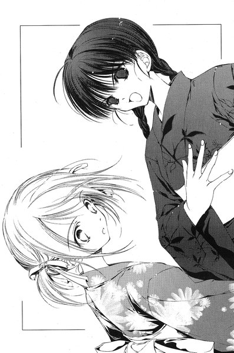
その時、ステージの方から男の声がスピーカー越しに流れ始めた。
お集まりの皆さんこんばんは、と、男は言った。わたしが皇輝山天明です。
「蜥蜴のカゲヌシの契約者はあいつよ。あのステージに立ってる男。神社で掃除をしてる時に見たでしょ」
「え......」
葉はずっと遠くのステージを見た。確かに一昨日見かけた顔だった。
「藤牧はあいつと連絡を取った。あんたに取りついている犬を倒すために、あの蜥蜴を利用しようとしてるの」
「......」
（この女の言うことを信用するつもりですか）
呆れたように「黒の彼方」が言った。そこへ灌木をかき分けながら、裕生がやって来るのが見えた。彼の後ろには佐貫もいる。
「......葉」
と、裕生が呼びかける。穏やかで迷いのない声だった。
葉は目を逸らすことができなくなった。
「ぼくは葉を騙してた。『黒の彼方』に悟られないようにするために、他に方法がなかった」
彼女の頭の中を、みちるの言葉が反響していた──裕生がどんな人間か、葉が一番よく知っている。
「でも、葉を一人にはしない。必ず助けるって約束した。約束を守るために嘘をつくんだ。嫌だけどそう決めた」
葉は弾かれたように立ち上がった。「黒の彼方」が言ったようなことを裕生がするはずがない。頭の中でまだなにか声が聞こえたが、もう葉の耳には入っていなかった。裕生はゆっくりと葉に近づいてくる。裕生がしっかりと彼女の手を握った。一人にしないと誓ってくれたあの晩のように。
「わたし......」
なにか言おうとしたが、胸が詰まってなにも言えなかった。
裕生がなおも口を開こうとした時、突然山のふもとで火柱が上がった。
３
最初に火の手が上がったのは、鶴亀神社へ通じる坂道の途中だった。ガソリン輸送のためのタンクローリーが、なんの前触れもなく路面の数メートルほど上に現れ、ずしりと道路に落ちて来た。誰一人として下敷きにならなかったのは僥倖と言う他はない。ちょうど直前の横断歩道で、人の列が寸断されていたおかげだった。
重い地響きに振りかえった人々が、その銀色の大きな車輌が一体どこから現れたのか首をひねり始めた瞬間──唐突に合金製の屋根が吹き飛び、巨大な火柱がタンクローリーを包んだ。車の両側にいた人々は、それぞれが炎とは反対側に向かって走り出した。
無数の炎のつぶてが四方八方に飛び散っていく。その一部が鶴亀山の群生した灌木に燃え移り、たちまち炎の範囲は山のふもとを中心に広がっていった。
その頃、鶴亀山の裏手にある狭い山道でも、同様に炎が上がり始めていた。こちらの方は人気がまったくなかったので、しばらくの間気づく人間もいなかった。
この山から出るための道は今や完全に閉ざされていた。後は無理にでも斜面の林を通り抜けるしかなかったが、互いに細かく絡み合った灌木の間を下るのは容易ではなく、しかも炎と一緒に発生した煙がふもとの林をぐるりと覆い隠しつつあった。
事実上、鶴亀山は陸の孤島と化していた。
皇輝山天明はステージの上に仁王立ちになり、満足げにふもとの炎を見つめていた。あの道路の地下には広い坑道が通っており、そこに昨日のうちにタンクローリーを一台「瞬間移動」させておいた。それをたった今、地下から再び地上へ戻した。彼はマントの中で遠隔操作のスイッチを握りしめている。タンクローリーを道路に出現させた後で、タンクに取りつけておいた発火装置に点火したのだった。
龍子主はどんなに質量のあるものでも移動させることができる。しかも、能力の発動には回数の制限もない。きわめて役に立つ力だった。
もっとも、制約もいくつかはある。移動させられる範囲は十メートル程度であり、移動前と移動後の場所を天明の頭の中で明確にイメージできなければならなかった──要するに一度は「見た」場所でなければ移動させることはできない。また、能力はあくまで移動のみで、タンクのガソリンに発火させるのも天明自身が行わなければならなかった。
（さて、これからが本番か）
その時、夏祭りの実行委員の一人がステージの上の天明に近づいて来た。
「今、ふもとで火事が起こりました。申し訳ありませんが、ショーは中止にして、今すぐ避難していただきたいのですが」
「避難とおっしゃいましても、あの道路は燃えているようですが」
落ち着き払って天明が言うと、初老の委員は汗を拭きながら言った。
「鶴亀山の裏手には山道があります。そちらの方に今誘導いたしますので」
天明は笑いをこらえるのに苦労した──その山道の方も今頃燃えているはずだが。
「ちょっと待って下さい。山道は狭すぎてそう多くは人が通れませんよね。わたしが逃げるとして、ここにいらっしゃる他の方々はどうなりますか」
相手はぽかんと口を開けて天明を見ていた。まったく予想もしていなかった質問らしい。こいつはバカか、と天明は思った。
「ですから、わたしだけ先に逃げるつもりになれないということですよ。せっかくステージにおりますし、火事の誘導をお手伝いしましょう」
「......ああ」
ようやく天明の言葉を理解したらしく、男は感動したようだった。
「ありがとうございます。しかし、一体どこへ誘導したものか......」
天明は目の前のグラウンドに向かってさっと手をかざした。
「もちろん、この公園ですよ」
「おい、あれ燃えてるぞ！」
佐貫はフェンスに飛びつきながら叫んだ。裕生たちがそちらを見ると、道路をふさぐように停まっているタンクローリーから巨大な火柱が上がっていた。坂道のこちら側に残っている人々が、神社へ向かって走って来ていた。
「......ねえ、あんなところにあんな車あったっけ」
と、みちるが言った。
裕生もそれは不思議に思っていた。さっき葉と話している時にも、あの道路は視界に入っていた。あんな風にトレーラーが走ってくれば見えた気がする。それに、あの坂道は今は歩行者天国になっている。あんな風に車が進入できるはずは──。
「......瞬間移動」
と、裕生はつぶやいた。ひょっとすると、あれは龍子主が「能力」を使ってどこかから移動させたものではないのか。だとしたら、あの火事を起こしたのは天明ということになる。
『ただいま鶴亀山のふもとで火災が発生しました。この場所から移動するのは大変危険ですので、消火活動が終わるまでここから絶対に動かないようお願いいたします......』
ステージの上では天明が穏やかな声で人々に向かって話しかけている。
「......どういうことなんですか」
裕生の隣で葉がつぶやく。裕生はぎりっと歯がみした。
「あいつが火事を起こしたかもしれない」
その時、佐貫がフェンスから離れて山の頂を見上げた。裕生もつられて見ると、山の反対側からも煙が上がっている。
「山のあっちも燃えてるってことは、多分山道に火をつけたんだな。この山から誰も出られないぞ」
一同は沈黙した。天明が犯人だとしたら、一体なにをしようとしているのだろう。
「裕生、どうする？」
「分からない。でも、とにかくステージにいこう。ここにいてもしょうがないし、もしあいつがなにかしようとしたら止めないと」
四人はフェンスに沿って小走りに進み始めた。天明のいるステージは彼らのいる場所から対角線上にある。グラウンドを大きく迂回することになるが、中央の人混みを突っ切っていくよりも時間はかからないはずだった。
『皆さん、この公園が臨時の避難場所です。火が消えるまでの辛抱ですから、できるだけお子さんや女性はその場に座らせてあげて下さい』
天明はとうとうと喋り続けていた。的確な指示のせいか、人々の間では今のところ大きな混乱は起きていない。
「......ああやって喋るのがあいつの目的ってことはないよな？」
佐貫の声が背後から聞こえ、裕生は黙ってうなずいた。
『鶴亀山公園は安全ですので、この放送が聞こえる場所にいらっしゃる方は、公園の方へ移動して下さい』
（みんなをここに集めてるんだ）
と、裕生は思った。現に公園の入り口からは続々と人が入って来ている。
「あのね、藤牧」
いつのまにか、隣をみちるが走っていた。走るのに面倒だと思ったのか、下駄を脱いで両手に持っている。
「昨日、あたしバイトの帰りに、鳥居のそばであの大きな車とすれ違ったんだ」
裕生は無言で先を促した。
「あれとおんなじ車が、他にもう一台あったと思うんだけど」
不意に裕生の中で全てが繋がった──ふもとで起こった火事。公園に集められた人々。どこかへ消えたタンクローリー。
「......大変だ」
彼は立ち止まって振りかえる。
「葉！」
びくっと彼女は立ち止まった。
「はい」
「『黒の彼方』を出して！」
「え、でも......」
葉はためらった。その理由は裕生にも分かる。今、この状態で「黒の彼方」を出してもこちらの思惑通りに動いてくれるとは限らない。
「このままじゃ皆殺しにされる！」
『だいぶ、人も集まって参りましたね。皆さんは大変素直です。実に素晴らしい。退屈しのぎと言ってはなんですが、皆さんに三つばかりマジックをお見せしましょう』
天明は上機嫌で言う。その言葉に思わず裕生たちもステージを凝視した。
『まず一つめ......龍子主』
黒ずくめの服を着た天明の隣に、なんの前触れもなく大きな黒い蜥蜴が現れた。まるで置き物のようにぴくりとも動かない。グラウンドを戸惑い気味の沈黙が包んだ──突然現れた不気味な物体を、どう受け取ったらいいか分からないのだろう。次の瞬間、どこかから戸惑い気味の拍手が起こり、やがてさざ波のように広がっていった。
「龍子主を出した！ 早く！」
葉はこくりとうなずいた。その瞬間、裕生の胸にきざしたのは彼女への感謝だった。
（ぼくを信じてくれた）
嘘をついたというのに。ふつふつと体の奥から勇気が湧いて来た。その信頼には応えなければならない。
「......くろのかなた」
と、葉がつぶやいた。
彼女の影の中から大きな黒い犬が現れた。裕生ははっと息を呑む。双頭の一つを失った「黒の彼方」は一回り縮んだように弱々しく見えた。
「お前は人間を助ける契約があるんだろう。ぼくをあのステージまで連れていけ」
黒犬はじっとその場に立っていた。「黒の彼方」に支配された葉の方もなにも言わない。裕生はその背中に乗って、最後の首にしがみついた。無惨に食いちぎられた「眠り首」の跡に肘が触れた。
唐突に「黒の彼方」が高く吠えた。体の奥底に響くような重い声がグラウンド中に響き渡り、人々はさっと裕生たちを振り返った。
「黒の彼方」は咆哮とともに人の群れに突っこんでいった。たちまち人々は悲鳴を上げながら左右に割れた。その背後に浴衣のすそをからげた葉が続く。
「わたしはお前を許さない」
むしろ静かな声で葉は言った──「黒の彼方」の言葉だと分かっていたが、葉本人に言われた気がした。
「分かってるよ」
と、裕生は言った。
ふと、天明は異変に気づいた。人を背中に乗せた黒い犬が、見物客を左右に割るようにしてステージに向かって走って来る。それは藤牧裕生と「黒の彼方」であり、その背後には雛咲葉もいた。
「おっ」
天明は苦笑いをした。思ったよりもずっと早く、裕生たちは天明の意図を悟ったようだった。どうやら急がねばならないらしい。
「この蜥蜴は龍子主。わたしの守り神です。次はもっと大がかりなマジックをお見せしましょう」
天明は龍子主に呼びかける。昨日のうちにタンクローリーをもう一台、このグラウンドの地下の坑道に「移動」させてある。
（出せ）
突然、土まみれのタンクローリーが地面から数メートル上に現れた。ちょうど「黒の彼方」の頭上だった。ずん、と音を立てて巨大な車体が落下する。本来なら見物客の上に落としてやるつもりだった。それならば確実に何人かは死んだはずだ。
しかし、黒犬もその契約者も、タンクローリーが現れた瞬間に地面を蹴って横に跳んでいた。うろたえてバランスを崩しそうになったのは犬の背中に乗った裕生の方だった。
「黒の彼方」はすぐに体勢を立て直してまた走り出した。
みるみるうちに「黒の彼方」がステージに迫ってきた。天明は素早く思考を巡らせる──あの傷ついたカゲヌシと戦ったところで負ける気はしないが、まだ自分にはするべきことがある。
黒の彼方は地面を蹴り、ステージへ向かって跳躍した。その刹那、天明と龍子主はステージから「瞬間移動」で姿を消した。
「あれっ」
ステージに上がった裕生は声を上げた。そこは完全に無人になっていた。見物客も驚いているのか、こちらを指さしながら口々になにか囁き合っている。
「下です」
いつのまにか隣に立っていた葉──「黒の彼方」が言った。グラウンドを見ると、裕生たちと入れ替わるように、龍子主を従えた天明がにやにや笑いながら彼を見上げていた。
「いつのまに......」
裕生ははっと我に返った。天明は今までよりもタンクローリーに近い場所にいる。彼はマイクに飛びついて叫んだ。
「そこのタンクローリーも燃える！ みんな逃げて！」
グラウンドが水を打ったように静まりかえり──そして、名状しがたい大混乱が起こった。
４
見物客は我先にと公園の出口へ向かって走り出した。あっという間に恐怖が人々を覆い尽くし、彼らは目的も行き先も持たない群れと化していた。
「神社の境内へ逃げて下さい！」
と、裕生は続けて叫んだ。ふと、携帯が鳴っていることに気づく。佐貫からだった。
『バカ、神社じゃ狭すぎる！ 第一あっちにも人がいるだろ！』
電話の向こうから人々の悲鳴が聞こえる。
「じゃあ、どこへ......」
『鶴亀山の頂上へもいくように言え！』
裕生は電話を切らずにそのままマイクに向かって叫んだ。
「境内に入り切れなかったら、鶴亀山へ上がって下さい！」
人々は裕生の声を背中に受けながら、一人残らず公園から出ていった。気がつくと後に残っているのは天明と裕生たちだけだった。
ふもとの方から消防車のサイレンが聞こえる。おそらく消火活動が行われているのだろう。今、この公園から火災を発生させるわけにはいかない。消防車は下で足止めされており、ここの火を消せる者は誰もいないからだ。
龍子主を従えた天明がいつのまにかタンクローリーの上に立っていた。ステージの上の裕生たちに向かって、こっちへ来い、と手招きをしている。
「いかない方がいいと思いますが」
葉の口を借りた「黒の彼方」が言う。
「いくよ。当たり前だろ」
裕生はステージから飛び降りた。地面に降りた途端、ガソリンの臭いが漂って来た。
（うっ）
思わず裕生は顔をしかめた。タンクローリーに一歩近づくたびに、その臭いはさらに濃くなる。ふと、裕生は地面が完全に液体に覆われていることに気づいた。一体なにが起こっているのか確かめるまでもない。天明はタンクに穴を開けて、このグラウンド全体にガソリンをぶちまけている。
車の上にいる天明は自分の両手をマントの中に隠している。おそらく火を隠し持っているに違いない。その気になれば、天明はこの公園を裕生たちごと火の海に変えられる──。
「......あの蜥蜴の傷」
ふと、背後で葉がつぶやいた。
「『黒曜』を使ったのはあなた方ですか」
思いがけない言葉に、裕生は肩越しに「黒の彼方」と葉を振りかえった。
「『黒曜』？」
「わたしたち『同族食い』の血から作られた毒です。あの蜥蜴の体にはそれを使われた跡がある。どこで手に入れたのですか」
裕生は黙っていた。レインメイカーと会ったことは「黒の彼方」には伏せておきたかった。
「まあいいでしょう。あなた方はわたしをあの蜥蜴に殺させて、『黒曜』であのカゲヌシを始末する、そういうつもりだったのですね」
裕生にはそれにも答えようがなかった。そこまで知られた以上、「黒の彼方」を出し抜くのがさらに難しくなったことを彼は悟った。ふと、葉が耳を寄せて、彼の耳元に囁いた。
「わたしは『黒の彼方』。他のカゲヌシとは違います。それをお忘れなきよう」
裕生の背筋に冷たいものが走った──それでも、彼はどうにか沈黙を守った。
裕生はタンクローリーから十メートルほど離れたところで足を止めた。彼の背後にいる黒犬と契約者もそこで立ち止まる。
やっと来たな、と天明は思った。
天明はタンクの屋根にしゃがみこんで、裕生に向かってにやりと笑いかけた。
「結局、どっちの味方なんだお前は。俺たちか？それともそこの犬か？」
「ぼくは人間の味方だ。カゲヌシに味方なんかしない」
ひゅう、と天明は口笛を吹いた。今にも噴き出しそうなほど上機嫌だった。
「それで俺のショーを邪魔しやがったのか。とんだ嘘つきだな、お前は」
「お前はなにがしたいんだよ」
と、裕生は言った。一瞬、天明の頭が空白になる。なぜか努力をして答えを捜さなければならなかった。
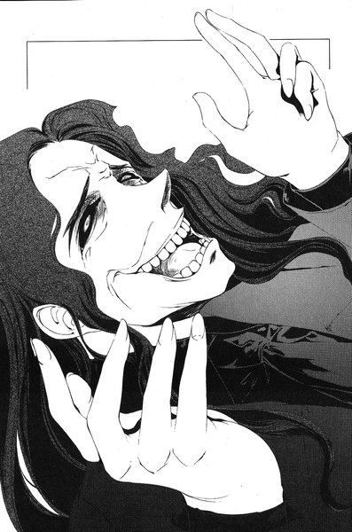
「......皆殺しだ」
「なんのために？」
天明の眉がかすかにゆがんだ。
「なんとなくだ」
彼はそう言いながら、マントから右手を出した。手のひらに隠れるほどの大きさしかない、楕円形の小さなライターを握りしめている──八尋の持っていたものだった。
彼はそれに火を点けた。
「ふもとのタンクローリーと同じように、こいつにも発火装置が取りつけてある。最初は爆発させてやろうと思ったが、お前らがここにいたヤツらを逃がしちまったからな。ちょっと予定変更だ。なるべく広い範囲にガソリンをまいて、その後で火を点ける。多分、その方が早く炎も燃え広がるだろう」
「火を点けたってみんな逃げた後じゃないか。お前の計画はもう失敗したんだ」
よく見ると裕生の体は震えている。ハッタリだとすぐに分かった。
「また嘘か。お前はほんとに俺にそっくりだよ。口から出る言葉は全部嘘ばっかりだ......とりあえず俺が火を点ければお前らは死ぬ。それに、ここから出た火が神社やそこらへんの林に燃え移らないと思ってんのか？お前らが頂上に逃がした連中も、煙にまかれて死ぬだろうよ......せいぜい、直火焼きか燻製かの違いだけだな」
直火焼きか、燻製か。なんとなく口にした冗談が無性に可笑しくなり、天明は背中を震わせてげらげら笑った。
「......違う」
と、裕生が言った。
「なにがだ？」
「ぼくはお前と違う」
「違わねえよ。この嘘つき坊主──」
裕生の目の怒りの強さに、天明は気圧された。ふと、彼は数ヶ月前に「治療」した難病の少年のことを思い出した。あの少年もこんな怒りに燃えた目で自分を見ていた。
「ぼくは自分に嘘をついてない」
天明の頬がかすかに震えた。まるで他人事のように、自分の心のどこかがうずくのを感じた。
「......なんの話だ？」
「皆殺しはお前のやりたいことなんかじゃない。お前のカゲヌシのやりたいことなんだ！お前は自分に嘘をついてるんだ！」
天明はライターを握りしめたまま凍りついた。八尋の顔がはっきりと脳裏に蘇る──嘘つき、と言って彼女は死んだ。裕生がぴんと人差し指を天明に向けた。
「今、お前は嬉しそうな顔をしてる。ぼくをバカにしてるから笑ってるんじゃない！心のどこかで、自分の計画を止めてくれそうだからほっとしてるんだ！」
「黙れ！」
天明は我を忘れて立ち上がった──これもこの小僧の嘘だ、と頭の中で声がする。しかし、その声が自分のものなのか、自分の隣にいるカゲヌシのものなのか判然としなかった。
（俺は自分からこいつらをここへ呼んだ）
頭の片隅で別の声が聞こえた。
（どうして、昨日のうちに始末しなかったんだ？）
天明は確かに混乱していた。ふもとの方ではさっきからずっと消防車のサイレンが聞こえている。そのせいで、グラウンドのあちこちから聞こえる水音に気が付くまで、しばらく時間がかかった。
「な......？」
我に返った天明はグラウンドを見回した。回転するノズルが地下からいくつも顔を出して、大量の水を撒いている──スプリンクラーが作動していた。
ふと、裕生のいる場所とは別の方向から、かすかな足音が聞こえた。はっと振りかえると、タンクローリーから一番近いノズルの後ろに佐貫がしゃがみこんでいた。彼はノズルの向きを調節し、タンクの屋根にいる天明に向かって水流をぶつけて来た。
手首に重い衝撃を感じ、火の消えたライターが右手から離れた。
その瞬間、二つのことが同時に起こった。「黒の彼方」がタンクローリーの上の龍子主に向かって跳躍し、裕生が地面に落ちていくライターに向かって走り出した。
天明はすぐに自分のすべきことを悟った──一動作でライターを取り戻し、同時に「黒の彼方」の攻撃を避ける。
天明は龍子主の背中に手を触れる。むき出しになった「黒の彼方」の牙が迫ってくる直前、天明たちは姿を消した。
──瞬間移動。
ぴしゃりと音を立てて、天明たちはガソリンの池の中に降り立った。そこがライターの描く放物線の終点だった。当然、裕生はまだ到着していない。突然現れた天明たちに目を丸くしている。
自分が手を離したライターを受け取ろうと、天明は手を伸ばした。しかしその時、裕生の背後から別の影が現れて彼を追い抜いた。
現れたのは雛咲葉だった。彼女は人間離れした脚力で跳躍し、天明に体当たりをする。彼は水面を一回転しながら滑っていった。天明はすぐに体を起こした。次の攻撃が当然予想されたが、葉は今までと同じ場所に立っているだけだった。
（どうして手加減した？）
あれほどの動きが可能なら、致命傷を与えることもできたはずだ。天明は起き上がりながら、濡れて重くなったマントを脱いだ。
八尋のライターが落ちたあたりを見ると、派手に転んでいる裕生の姿が見えた。少しガソリンが口の中に入ってしまったらしく、膝を突いたまま激しく咳きこんでいる。しかし、手の中にはライターがある。少しでもガソリンから遠ざけるためか、握りしめた手を高く掲げていた。
天明は傍らに移動して来た龍子主に触れる。正確な場所さえ分かっていれば、手の中にあるライターを取り戻すのはたやすい。
突然、裕生は天明を振りかえり、険しい表情を浮かべた。こちらの意図を察したはずがないと天明は思った──しかし、次の瞬間裕生はライターを口の中に入れていた。そして、顎を上に向けて無理矢理にごくりと喉を動かした。
「あのガキ......」
さすがの天明も唖然とした。呑みこまれては正確な位置が分からない。しかし、小型のライターとはいえ呑みこむのは死にものぐるいだったようで、裕生は両手で胸を押さえていっそう激しく咳きこんでいる。
このガソリンに火を点けるのは難しくなった──最初の計画通り、タンクローリーの発火装置を作動させれば天明も焼け死んでしまう。どうすべきか頭をめぐらせていると、「黒の彼方」が宙を飛んで龍子主に迫って来た。
（あいつを始末するのが先決だな）
天明は「黒の彼方」に向き直った。
裕生は腹筋を震わせながら咳を続けている。ガソリンを少し飲みこんでしまったらしく、胃の中のものを全部戻してしまいそうだった。
ふと気が付くと隣に葉が立ち、「黒の彼方」の本体と龍子主の戦いをじっと見つめていた。
戦いに参加しないのか、と裕生は言おうとしたが、内緒話のようなかすれた声しか出なかった。どうやら喉を痛めてしまったらしい。
「契約者が近づけばさらに不利です。他に方法がない以上、あの状態で戦うしかありません」
彼女は裕生の言いたいことを察したかのように言った。
裕生もカゲヌシ同士の戦いをなすすべもなく見守るだけだった。
司令塔である天明が参加した今、「黒の彼方」は前回以上に苦戦していた。「眠り首」が失われている以上、接近戦を挑む他はない。しかし、天明と龍子主は相手の攻撃を細かい瞬間移動によって回避し、「黒の彼方」の死角に移動して攻撃する戦法を取っているようだった。
しかも、龍子主の前に天明が出て来ることがある。そのたびに「黒の彼方」は止まらざるを得なかった。
（自分を盾に使ってるんだ）
と、裕生は思った──「黒の彼方」が人間を襲わないと気づいているのだ。
突然、空中に現れた龍子主が落下しながら黒犬の首を狙う──かろうじて避けたものの、背中の部分を蜥蜴の顎がえぐった。
「......うっ」
葉の口からうめき声が洩れた。体の向きを変えて黒犬が噛みつこうとした瞬間、再び龍子主は消える。
「藤牧裕生」
いつのまにか葉の顔がすぐそばにあった。「黒の彼方」は耳に噛みつかれ、無理矢理に振りほどこうとしているところだった。
「わたしを恨んでいますか」
耳元から声が聞こえる。裕生は答えなかった。
「わたしは生き残ろうと必死でした。あらゆる他の生物と同じように。あなた方と同じように」
苦しげに葉が言った。「黒の彼方」の動きは目に見えて鈍くなっていた。相手から距離を置いたところを瞬間移動で引き寄せられ、ぎりぎりのところで相手の歯をかわした。
「なにが言いたいんだよ」
声を絞り出すように裕生はすぐそばの相手に囁いた。
「わたしを助けてもらえませんか？」
そう言って、葉はふらりとよろめいた。もう「黒の彼方」に跳躍する力も反撃する力も残っていないようだった。かろうじて相手に致命傷を与えられるのを避けているだけだった。
不意に天明がにやにや笑いながら裕生を見た。これが終わったら次はお前らだ、と言いたげな目つきだった。
「お願いです」
裕生は歯を食いしばって目を閉じた。確かにカゲヌシが人間に取りつくのは、カゲヌシ自身のせいではない。この生物なりに生き残ろうとしているだけだった。
彼は深いため息をついて──それから、首を横に振った。
「駄目だよ」
彼はかすれた声でつぶやいた。それだけで喉がひりひりと痛んだ。
「悪いけど、やっぱり駄目だ」
不意に「黒の彼方」の本体と葉の体が同時にがくりと崩れ落ちた。裕生は慌てて彼女の体を支えるためにしゃがみこむ。
「......裕生」
背後から佐貫とみちるが近づいてきた。
「そろそろだな」
と、佐貫が裕生の耳元に囁く。彼は肩から下げたスポーツバッグのジッパーに手をかけていた。裕生は無言でうなずきながら、「黒の彼方」を凝視していた。這いずって逃げようとしている黒犬を、蜥蜴が上から押さえこもうとしているところだった。
裕生が立ち上がりかけた刹那、
「......やはりあなたが持っていましたか」
と、葉の声が聞こえた。今までの苦しげな様子が嘘のように、彼女の体が跳ね上がった。そして佐貫のバッグから、素早く「黒曜」の詰まった例の武器を一本引き抜いた。
「えっ」
三人はなんの反応もできなかった。葉──「黒の彼方」は一歩飛びのくと、底冷えのする目で裕生を睨めつけた。
「あなたが断ったことを決して忘れない。契約が不要になった時、あなたを真っ先に殺す」
裕生の全身が総毛立った。
そして、葉は「本体」に向かって走り出した。
５
龍子主は「黒の彼方」を横倒しにして覆い被さっていた。
「殺せ」
と、笑顔で天明は命じた──そこへ、誰かが水音を立てながら一直線に近づいて来た。振り向くと契約者である葉が走って来るところだった。
（イチかバチか「本体」の加勢に来たのか）
虫の息の「黒の彼方」をその場に残して、天明は葉に向き直った──彼女を食えばいずれにせよ戦いは終わる。彼は龍子主をその場に残して走り出した。むろん、相手が自分を攻撃できないことは分かっていた。
走って近づくと見せかけて、天明は瞬間移動で一気に距離を縮めた。思った通り、彼女は速度を緩めて天明の体を柔らかく突き飛ばす。しかし、減速した彼女の真上にはすでに龍子主が移動していた。
顎をいっぱいに開いて落ちてきたカゲヌシを、彼女は体をねじるように回転させてかわそうとする。しかし、わずかに引っかかった下顎の牙が浴衣の肩口を引っかけてびりっと裂いた。露わになった二の腕に鮮血が流れる。
彼女は帯の背中に差しこんであった、鉄パイプのようなものを引き抜いて逆手に握りしめる。回転の勢いをそのまま利用しつつ、龍子主の脇腹にその武器の尖った先端をずぶりと食いこませた。
びしゃりと音を立てて水面に落下した龍子主は、今まで天明が一度も耳にしたことのない甲高い鳴き声を上げた。それが悲鳴であることを悟った彼は、すぐさま自分のもとへ龍子主を呼び戻す──目の前に現れたカゲヌシの脇腹からそのパイプを引き抜くと、先端が注射器の針のように斜めに切られているのが見えた。穴の部分からはわずかに黒い液体がしたたっていた。
「やってくれたな」
天明は顔をゆがめた。これの中身は先日裕生が使った「毒」に違いない。あの連中の誰かが、それを仕込んだ武器を作り上げたのだ。
彼は意識を集中し、龍子主との同調を高める。彼のカゲヌシは激しい苦痛を感じてはいるが、体躯の大きさが幸いして、致命傷には至っていなかった。
葉は距離を置いたまま天明たちの様子をじっと窺っている。彼はその背後に瞬時に移動する。
「これで終わりか？」
相手が振り向く前に、その小柄な体をがっちりと押さえこんだ。裕生たちがこちらの方へ走って来る。彼らが到着する寸前、天明は葉の体ごと龍子主のそばへ戻った。
「動くな！」
と、天明は叫んだ。少女の白い喉元に、さっき龍子主に刺さっていた武器を突きつけた。裕生たちはしぶしぶ立ち止まった。天明は佐貫が肩から下げているバッグに目を留めた。他の二人はこのような武器が入りそうなものを持っていない。
「いいバッグだな、おい」
次の瞬間、佐貫のバッグは天明の足下に移動していた。裕生がなにか叫ぼうとして、咳きこんで背中を丸める。その代わりに彼の背中をさすりながら、みちるが叫んだ。
「その子を放しなさいよ！」
天明は彼らの顔に浮かんでいる焦燥と絶望の色を見て取った。おそらく、もう自分に抵抗する武器も策もないのだろう。
「『同族食い』、この契約者の娘、お前らの武器、全部俺が握っている」
そう言いながら、天明は一抹の寂しさのようなものを感じた。心のどこかに、本当にもう終わりなのか、とため息混じりにつぶやく自分がいた。
「そして、お前らの命も俺が握っている。この山にいる人間の命もだ」
天明は三人の顔を順番に見て言った。
「どれから殺して欲しい？ 「黒の彼方」か、この娘か、お前らか、他の人間どもか......相談して決めてもいいぞ」
しん、と彼らを静寂が包みこんだ。消防車のサイレンはいつのまにかやんでいる。ずっと続いていたスプリンクラーの散水がようやく終わり、混ざり合ったガソリンと水が、グラウンドに巨大な池を作っていた。
「相談しないのか？」
天明はかちかち、と歯を鳴らしながら笑った。
「それなら最初は──」
ふと、彼は口をつぐんだ。どこかから自分以外の笑い声が聞こえた気がした。天明は裕生たちの顔を見たが、誰も笑っていなかった。ふと、自分の腕の中に抱えた少女が、肩を震わせていることに気づく。
顔を覗きこもうとすると、突然彼女は顎を上げた。唇の端が裂けるほどの笑顔に天明は慄然とした。彼女は目と口を大きく開けて、グラウンド全体に響き渡るほどの大きな甲高い声で笑い始めた。
（......葉？）
裕生はみちるに背中を支えられながら、呆然と彼女を見つめていた。彼女の体を操っているのが「黒の彼方」である以上、笑っているのはあの瀕死のカゲヌシということになる。
「黙れ！」
天明が葉の体を突き飛ばした。彼女はガソリンの混じった水たまりに膝を突いたが、それでも同じ調子で笑い続けている。
「龍子主、『同族食い』から殺れ！」
と、笑い声をかき消すように叫んだ。しかし、蜥蜴のカゲヌシは動かなかった。
「......龍子主？」
「騙し合いはわたしの勝ちです」
笑い声に混じって、葉の口から言葉が洩れた。
「わたしは他のカゲヌシとは違う。知りませんでしたか？だから決して取りこまれない。こちらから取りこむことはあっても。ハハハハ！」
彼女はゆっくりと膝を伸ばして立ち上がり、裕生の方を向いた。
「『黒曜』を持って来てくれて助かりました。しかもわざわざ、それを体内に打ちこむ武器まで作ってくれた！」
龍子主の体がぶるぶると小刻みに震えている。その震えは徐々に大きくなり、体の中でなにかが跳ねているかのように見えた。
「わたしの『眠り首』は、体内からの刺激に反応して目を覚まします。例えばわたしの血のようなものに！『黒曜』のようなものに！もうひとつのわたしよ、目を覚ますがいい！もうひとつのわたしの首！」
裕生は大きく目を見開いた。
（ドッグヘッド）
龍子主の震えが限界を突破する。うろこに覆われた腹が爆発するように破れ、四方に飛び散った。黒い肉片とともに、中から丸いものがごろごろと転がり出てきた。
その場にいた全員が息を呑む。それは黒い血にまみれた犬の首だった。龍子主に食われたはずの「眠り首」に間違いない。その目はらんらんと輝き、口からはせわしなく白い息が洩れている──生きていた。
（ドッグヘッドに気をつけろ）
裕生はぼんやりと思いかえした。
（このこと、だったんだ）
腹のあたりを押さえながら、天明がゆっくりと仰向けに倒れていった。まるで入れ替わるように、「黒の彼方」がよろけながら立ち上がる。その首が天を仰ぎ、勝利の雄叫びを上げた。
６
「黒の彼方」はほんのわずかな時間で龍子主の体を食い尽くしてしまった。天明はそのそばに倒れたままだった。「眠り首」は何事もなかったかのように、元の場所に戻っている。
やがて「黒の彼方」が向きを変え、裕生の方へ歩いて来た。錯覚ではないと気づいた時、下腹のあたりに冷たい恐怖を感じた──体の大きさが変わっている。龍子主ほどではないものの、今までと比べて二回りは大きくなっていた。
さっきとはうって変わって、「黒の彼方」の全身には精気が漲っている。今まで食ったどのカゲヌシよりも、龍子主は多くの力をこの獣に与えたようだった。
「あなたに礼を言います、藤牧裕生！」
さっきと同じ場所に立ったままの葉が、彼に向かって叫んだ。
「あなたの小賢しさが、最後にはわたしの失われた首と、昔のような体を取り戻してくれました」
裕生は葉の方へ一歩足を踏み出した。すると、彼女は一歩背後へ飛びのいた。
「そして、三つ目の首もやがて揃います」
ぎょっとして「黒の彼方」の肩を見る。「眠り首」の隣に「司令塔」があり、その横に奇妙な黒い突起が生えていた。太さは人の手首ほどで、先端が丸くふくらんでいる。土中から顔を出したばかりの植物の芽を思わせた。
「それ」は生きていることを主張するかのようにぴくぴくと痙攣していた。
「もう一つ、わたしはあなたに言わなければならないことがあります」
（しまった）
ふと、裕生は自分から離れている葉を凝視した。どうして今まで気がつかなかったのだろう。
（ここにはもう「助ける」人間はいない。それに）
「名を呼ばなければ、この娘は目を覚まさない。しかし、あなたは喉を痛めているようですね。それで声が出せるのですか？」
裕生は反射的に葉の名を叫んだ──いや、叫んだつもりだったが、口から洩れたのはかすれたささやき声だけだった。
「......さようなら、藤牧裕生」
馬鹿にしきった態度で、葉は裕生にお辞儀をした。
彼は水たまりを蹴り上げながら走り出した。彼女を捕まえなければならない。捕まえて名を呼ばなければならない。
葉の体と「黒の彼方」も踵を返して走り出した。一人と一匹の背中はグラウンドをまっすぐに横切っていく。やがて水たまりを抜け、乾いた土の上へ出て、グラウンドの外の芝生に足を踏み入れた。その先の金網のフェンスが裕生の目にもぼんやりと見えて来た。
（くそっ）
フェンスは三メートルほどの高さがあり、近くには出入り口もない。普段の葉だったらそこで追いつけるはずだった──「黒の彼方」に操られていなければ。
葉は速度を緩めることなくフェンスに迫っていく。そして、ぐっと膝をかがめて地面を蹴った。彼女の体が金網に沿うように跳ね上がり、上辺の縁に片手をついて軽々とフェンスを越えていった。「黒の彼方」もそれに続いた。
（あ......）
裕生の両足がずしりと重くなり、やがて完全に止まった。普通の人間に飛び越せる高さではない。葉と「黒の彼方」は金網の向こう側にすとんと着地した。そして、裕生の方を振りかえった。彼女の顔には勝ち誇ったような笑みが浮かんでいる。
「追いかけっこは終わりですか？」
葉の口から「黒の彼方」の言葉が聞こえた。裕生は肩で息をしながら、相手の顔を見る。これ以上フェンスに近づいても意味がない。闇雲に追うだけでは絶対に捕まらない相手だった。
その時、みちると佐貫が裕生たちに追いついた。
「どこへいくつもりなの？」
みちるも息を切らせつつ、フェンスの向こうの葉に叫んだ。
「あなたには関係のないことです」
「関係あるよ。雛咲さんを返して！」
葉の口元にくっきりと嘲笑が浮かんだ。
「この娘がいなくなった方が、あなたにとっては都合がいいのではないですか？」
「な、なんの話よ」
みちるはうろたえた声を上げた。彼女の頬はかすかに赤くなっている。
「あなたはそこにいる......」
「うるさい！」
尋ねたのは彼女自身だったが、なぜかみちるは相手の言葉を突然遮って、取り乱したように叫んだ。
「そんなことない！ それにもし都合がよくても、あたしはそんなこと望まない！」
もう裕生にその会話はほとんど耳に入っていなかった──こちらから葉たちを追うことはできない。だとしたら、
（戻って来させればいい）
裕生はポケットから楕円形のライターを出した。その場にいた全員が裕生を見る。さっきまで天明の持っていたライターだった──呑みこむふりをしてポケットにしまったものである。いくら小ぶりとはいえ喉の奥まで流しこむ自信はなく、仕方なく手の中に隠して天明を「騙した」のだった。
（絶対使わないと思ったんだけど）
彼は心の中でつぶやいた。
（......ここで使うことになるなんて）
それから、自分のジーンズの裾に火を点ける。芝生が燃えないように注意を払わなければならなかった。ガソリンはこのあたりまで流れては来ていないが、それでも火事の範囲をこれ以上広げたくなかった。
ふくらはぎまで炎に包まれるのを確認して、裕生はライターを芝生に放った。
「ちょっと、なにやってんのよ藤牧！」
慌てふためいたように走り寄るみちるを、裕生は無言で押し返した。彼はフェンスの向こう側だけを凝視している。ガソリンの混じった水で濡れているせいか、炎の舌はたちまち彼の膝あたりまではい上がった。服が燃えているというのに、体は恐怖で冷たく固まっている。
裕生の額から脂汗が流れ始めた。無理か、と思った時、葉の顔が怒りと焦燥でゆがんだ。そして、「黒の彼方」がフェンスの向こうから戻ってきた。
「......契約を悪用して欲しくありませんね」
と、葉が言った。
「わたしは確かに人の命を救わなければならない。しかし、カゲヌシとの戦いに無縁な人間まで救わせるつもりですか」
しかし、「黒の彼方」はこちらへ戻って来ている──これもまた契約に含まれているに違いない。目の前の人間が死の危険に晒された場合、葉と「黒の彼方」との契約は自動的に発動するのだろう。
しかし、葉は相変わらずそこに立っているままだった。彼女はさらに言葉を続けた。
「もっとも、あなた一人を助ける程度なら、この体まで戻る必要はありませんが」
裕生の頭が真っ白になった。足首のあたりがじりじりと熱で焦げているのが分かる。彼の下半身はすでに炎に包まれている。裕生は歯を食いしばって耐えた。
（......くそ）
結局、なにもかも無駄だった。そう思いかけた時、
「じゃ、二人ならいいんだ」
と、みちるが言った。裕生は驚いて彼女の顔を見る。彼女はいつのまにかライターを拾い上げて、浴衣の片袖にあてがっている。
（え......？）
裕生が反応する前に、彼女は自分の片袖に火を点けた──浴衣はたちまち燃え始めた。みちるは炎に包まれている右腕をちらりと無関心に見やって、それから葉の方を向いた。
「これで分かるでしょ？」
彼女は静かな声で呼びかけた。まるで「黒の彼方」ではなく、葉本人に向かって話しているかのようだった。
「あたしはそんなこと望まない......あたしはそんな人間じゃないから」
葉の顔が一際けわしく歪んだ。
しかし次の瞬間、彼女の体もフェンスのこちら側へと飛び越えていた。そして「黒の彼方」と肩を並べて、裕生たちの方へ近づいてきた。
７
佐貫は慎重な足取りでタンクローリーへ近づいていく。裕生とみちるは公園の隅にある水道栓のそばで気を失っている。今頃、意識を取り戻した葉が二人を介抱しているはずだ。結局、大した火傷を負わずに済んだが、それにしても自分の体に火を点けるというのはムチャクチャだと佐貫は思った。
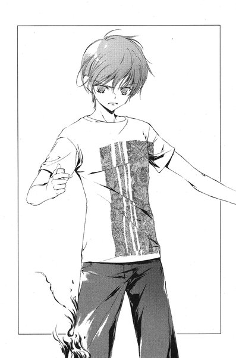
自分はそこまでできないと思う──いや、それしかないと判断すればやるかもしれないが、なんの迷いもなくあんな風にはとてもやれない。それができる二人に佐貫は素直に感心していた。
（まあでも、あの二人が暴走したら止めないとな。うん）
彼は自分自身にうなずきながら、ふと立ち止まった。すぐ目の前の水面に、皇輝山天明が仰向けに倒れていた。
彼は目を開けて、ぼんやりと夜空を眺めていた。
「......なにしに来た？」
弱々しくかすれた声で言った。
「いや、警察がもうすぐ来るみたいなんで。さっき道路も開通したみたいだし」
佐貫はふもとの方をすっと指さしながら言った。消防車のものとは違うサイレンが聞こえる。
「そんなもの放っといても来るだろう。それを言いにわざわざこんな危ないところに戻って来たのか？」
「いや、なんていうか......」
佐貫は一瞬目を逸らして、ガソリンでばりばりになった頭をかいた。
「結局、『皇輝山文書』ってなんだったのかなって」
ぽかんと口を開けて天明は佐貫を見上げる──それから、低い笑い声を上げ始めた。
「まったく、お前らはどいつもこいつも......そんなことが聞きたくて、わざわざ俺みたいな悪党のところに戻って来たってのか？」
彼は無言でうなずいた。この事件はともかくも終わった。そうすると、先日から抱えていた好奇心がむくむくと頭をもたげて来た。天明が警察に捕まれば、もう直接話を聞くことはできないだろう。機会は今しかないと思ったのだ。
「......お前はどう思ってた？ 『皇輝山文書』のことは」
「存在しないかもしれないって思ってた。あんたが適当にでっち上げたのかもって」
「半分当たりで、半分外れだ」
と、天明はつぶやいた。
「『皇輝山文書』は確かに存在するし、俺が持ってる。ただ、俺が喋ってた内容のほとんどはでっち上げだ。はっきり言うと、俺にも読めないんだ」
佐貫は目を瞬いた。
「......ワケ分かんねえんだけど」
と、彼は素直に言った。
「俺が書いたんじゃないんだよ。俺は四年前に怪我をして以来、何度も妙な夢を見るようになった。暗い海の中を漂っていて、気が付くとどこかの島へ流れ着くんだ。そして、海岸で身の毛もよだつようなバケモノに出会う。毎晩毎晩、繰り返し同じ内容だった」
ふと、佐貫は既視感を覚えた。つい最近、同じような夢の話をどこかで聞いた──そうだ、と佐貫は思った。裕生が「黒の彼方」というカゲヌシの名前の由来を話していた時、似たような夢の話をしていた気がする。
「それを昔からの知り合いに話したら、そいつは一冊の本をくれた。俺にはその本を持つ資格があるとか言ってな。中を開いたら、見たこともない文字で書かれてた。まあ、確かにただのデタラメだったのかもしれないな。俺はそれに『皇輝山文書』という名前をつけて、ずっと嘘をつき続けていた」
天明はスーツのポケットを探ると、佐貫に一本の鍵を差し出した。
「そいつは鶴亀駅のコインロッカーの鍵だ。ロッカーの中に『皇輝山文書』が入ってる......お前にやるよ」
「......いいのか？」
「俺は夢から覚めた。もう嘘をつく必要はなくなったんだ」
ふと、天明は目を閉じた。そして、口の中でつぶやいた。
「......八尋」
なにを言っているのか佐貫にはよく分からなかったが、彼はうなずいて鍵を受け取った。裕生たちの様子が一段落したら、取りにいこうと思った。
佐貫はポケットに鍵をしまって、天明から離れようとした──が、足を止めて振りかえった。
「その『皇輝山文書』、あんたが書いたんじゃなかったら、誰が書いたんだ？」
沈黙が流れた。どこかからパトカーのサイレンが、公園の方へ近づいて来ていた。
「お前にも多少はゆかりのある人間だよ」
天明は目を閉じたままで言った。
「雛咲清史......あの雛咲葉の父親だ」
エピローグ
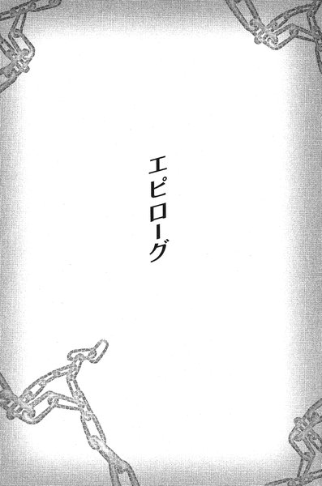
黒い海がありました。
海のむこうにちいさな島があります。その島には、女の子がすんでいました。
気がついたときから、女の子はずっと一人だったので、名前がありませんでした。
だから、コトバも──
葉はふと目を開けた。
確認しなくともはっきりと思い出せる文章は、以前に比べるとまた少なくなっている──確実に症状は進んでいた。
団地の以前住んでいた部屋で、彼女は小さなノートを手にしている。藤牧裕生、と書かれた文字に軽く触れた。
（いつまで一緒にいられるか、分からない）
彼女は心の中でつぶやいた。
＊
「結局、なんにもならなかった......」
隣のベッドから、裕生の弱々しい声が聞こえた。右腕の包帯を上にして寝転がっていたみちるは、ふと彼の方を振りかえった。
ベッドに起き上がった裕生が、シーツに重ねられた自分の両手を見ていた。うつむいた顔の角度といい、憂いを帯びた表情といい、まさに初めて出会った時の裕生そっくりで、みちるはつい目を逸らした──心臓がどきどきし始めている。
鶴亀山の事件から一夜明けていた。
火傷を負った二人はそのまま入院し、あろうことか大きな病室の隣り合わせのベッドが割り当てられてしまった。病院には鶴亀山での混乱で怪我を負った人たちが大勢収容されており、病室を男女別にする余裕はなかったのだ。皇輝山天明は逮捕された。事件の被害がどのようなものなのか、今のところははっきりしていないらしいが、鶴亀山での死者はゼロということだった。
「ぼくがもう少しうまくやっていれば、よかったのかもしれない」
悲しげに裕生が言った。みちるの胸がきゅっと締めつけられる。絶対に早く退院しよう、とみちるは心の底から思った。このポジションで一緒に居続けたら、本気で恋に落ちてしまうかもしれない。
「でも、藤牧がいなかったら、たくさんの人が死んでたよ」
彼は答えなかった。みちるは裕生の顔を窺った。あたし少しでも藤牧くんの力になりたい、という中一の頃の自分の気持ちが亡霊のように蘇る。今の気持ちと区別ができなくなりそうだった。
「それになんにもならなかったって、あたしたちが仲間になったじゃない......そんなに役に立たないかもしれないけど。あはは」
裕生はみちるの顔を見ながら微笑んだ。
「そんなことないよ......西尾たちにはほんとに感謝してる。協力してくれてどうもありがとう」
ごめんそれやめて、とみちるは心の中で悲鳴を上げた。似たような言葉を昔も聞いた記憶がある。みちるの頬はすっかり熱くなっていた。
あの時の裕生は「見かけだけ悲しそうなただのトロい男の子」だった。でも、今は違う気がする。みちるの目にはあの天明と渡り合った時や、自分の体に火を点けた時の強い裕生の姿が焼きついている。
ひょっとすると、今度もまた彼の態度に騙されているだけなのかもしれない。
（うん、きっとそうだ。今のあたしが藤牧のこと、本気で好きになるわけないんだし）
どこをどう騙されているのか全然分からないのだが、みちるは強引に自分にそう言い聞かせ、ベッドの上で体を起こした。
「どうしたの？」
「あ、あたし先生に呼ばれてたから。もういくね」
包帯を巻かれた右腕をかばいながらベッドから降りると、彼女はよろけながら病室から出ていった。
＊
「......」
裕生は黙ってみちるの背中を見送った。彼女が医師と会う時間はもっと先だった気もするが、勘違いだったかもしれない。彼はベッドに体を横たえて目を閉じた。ひどく体が重苦しい。両足に負った火傷のせいだけではなく、ここ数日で色々なことが起こりすぎた。
彼はみちると佐貫に心から感謝していた。「黒の彼方」を殺すことはできなかったが、あの二人がいなかったら天明と戦うこともできなかっただろう。
（それに、レインメイカーにも......）
ふと、裕生はためらった。レインメイカーに本当に感謝すべきなのか、よく分からなかった。確かに『黒曜』を渡してくれたが、あの男にはあまりにも分からないことが多すぎる。
（どうして『黒曜』を持ってたんだろう）
「黒の彼方」は裕生がどこから『黒曜』を手に入れたのか知りたがっていた。今まで出会った他のカゲヌシと同じように、「黒の彼方」もレインメイカーの存在を知らないのだろう。カゲヌシにとっても謎の存在が、本当に人間にとって「味方」なのか──。
「寝てんのか？」
はっと裕生が目を開けると、ベッドのそばに雄一が立っていた。
「あれ、兄さん。どうしたの」
「どうしたのって見舞いぐらい来てもおかしくねえだろ。弟が入院してんだからよ」
「そうだけど、忙しいんじゃないの」
「んな心配すんな、怪我人はおとなしく寝てろ......って起こしたの俺か」
ふう、と雄一は深く息をついた。いつもと比べると声に精彩がない。どことなく疲れているように見えた。
「座ったら？」
裕生はベッドの脇の椅子を指さした。しかし、雄一は腕組みしたまま動こうとしない。なにか言いたげに裕生を見下ろしていた。この兄がこんな風にためらうのは珍しいことだった。
「......」
裕生は不安になってきた。鶴亀山公園で天明の起こそうとした火事を止めようとしたことは警察にも知られているし、父と兄にもそう説明した。もちろんカゲヌシのことは伏せたままだが、そろそろ雄一はなにか感づいているのではないか。
「......お前に聞きたいことがあんだけどよ」
突然、雄一が言った。心臓の鼓動がとたんに速くなり始めた。
「な、なに？」
「俺、お前に嘘をついたことってあったか？」
「は？」
「だから嘘だよ嘘。俺がお前を騙したことあるかって聞いてんだ」
裕生はしばし考えこんだ。質問にどう答えたらいいかではなく、どうして急にそんな質問をするのかがよく分からない。そもそも、嘘をついているかどうかは本人が一番よく知っているはずだ。
「......自分で言ったこと忘れて、全然違うこと言ったりするけど。わざわざ嘘つこうとしてついたことはないと思う......よ？」
と、裕生は答えた。雄一は顔をしかめた。明らかに不満そうに見えたので、裕生は慌てて付け加えた。
「そう。だから、兄さんは嘘つくような人じゃないよ。嘘なんかつかなくても大丈夫な人だし」
ぼくと違って、と裕生は心の中で付け加えた──もしこの兄のようだったら、嘘などつかずに、誰も傷つけずに戦えたかもしれない。
「......ちっ」
ふと、雄一が舌打ちをした。ますます苦い顔になっている。
「......だから相談されねえのか......」
「え？」
思わず裕生は聞きかえしたが、雄一はひらひらと手を振った。
「いや。それは仕方ねえ。俺には俺の道があるしな。だから、お前もお前の道をいけ。そういうこった」
「はあ......」
首をかしげながら裕生が言うと、雄一は深くうなずいて見せた。そして、大股にドアへ向かって歩き出す。
「え、もう帰るの？」
「ん、用事は済んだからな。また来るわ。じゃあな」
雄一は振り向かずにそのまま病室を出ていってしまった。
（なんだったんだろ、今の）
裕生は再び目を閉じて考える。今の短い会話のなにが「用事」だったのだろう。いくら考えても答えは出なかった──いつのまにか、裕生はゆっくりと眠りに落ちていった。
＊
トートバッグを提げて、葉は病室に足を踏み入れた。
奥から数えて二番目が裕生のベッドで、今は毛布をきちんとかけて眠っている。彼女は足音を忍ばせて近づいていった。隣はみちるのベッドなのだが、今は外出しているのか姿が見えなかった。
葉は裕生の顔をじっと見おろした。すやすやと寝息を立ててよく眠っていた。目を覚ましてしまうかもしれないが、ちょっと頬に触ってみたくなる。
自分が指を伸ばすところを、なんとなく葉は想像した。
指では起きてしまうかもしれない。
それなら、唇──。
葉ははっと口元を押さえてうつむいた。自分が想像しかけたことを、今すぐ誰かに謝りたい気持ちになる。そんなことを考えるのは、彼女にとって「とてもよくないこと」だった。すぐに心の奥底に沈めてしまった。
葉はそばにあった椅子に座り、静かに目を閉じた。裕生が入院して以来、あまり眠ることができない。「黒の彼方」を引き離すことに失敗したこと、あのカゲヌシがより強くなってしまったことはすでに聞かされている。そのことを思うと不安が募った。
今、ベッドのそばでこうして座っていると、懐かしく落ち着いた気持ちになった。裕生が入院し始め、彼女の両親が家にいた頃──なんの不安も持たなかったあの頃のことを思い出すことができた。
ふと気が付くと、葉はベッドに顔を伏せていた。
慌てて体を起こす──いつのまにか裕生がベッドに半身を起こしていて、彼女を見つめていた。
「おはよう」
と、裕生は微笑んだ。
「あの、ごめんなさい......寝てました」
「いいよ、そんなの。ぼくだって寝てたんだし。別にもっと寝ててもいいよ」
葉は慌てて首を振った。自分がどんな顔で眠っていたのかと思うと、今すぐここから逃げ出したい気持ちになった。
「......葉」
不意に裕生は真剣な顔で言った。
「ごめん......嘘をついて、それでもうまくいかなかった」
再び彼女は首を振った。全部彼女のためにしたことなのだ。裕生が謝ることではないことぐらい分かっている。ただ──。
「いつかまた、わたしにうそをつく？」
一瞬、裕生の顔がゆがんだ。
「......つくかもしれない。そうするしかなかったら」
答えは聞く前から分かっていた。「黒の彼方」を出し抜くには、同時に彼女に嘘をつくしかないのだ。
「......ついて」
と、葉はつぶやいた。
「え？」
「うそ、ついていいです。わたし、大丈夫だから」
裕生は黙ってうなずく。彼にとってもつらい選択だと、葉にも分かっていた。
「......でも、一つお願いしてもいいですか」
彼は何度かまばたきをした。
「いいよ。なに？」
葉は傍らに置いていたバッグから、小さなノートを出した──「くろのかなた」が書かれたあのノートだった。
「これ......」
裕生は目を瞠った。
「ごめんなさい。わたしがずっと持ってました」
「ううん。そんなの別にいいよ......そうだったんだ」
裕生はなにも尋ねなかった。彼が物語を書いた時に比べて、ひどくノートが傷んでいることにも触れなかった。ただそれを手に取って、懐かしそうにページをめくっている。
独りぼっちの女の子に出会った男の子は、彼女に言葉を教え、最後に名前を与える。そして二人で舟に乗って旅に出る──そこで物語は途切れていた。
「つづき、書いて下さい」
と、葉は言った。彼は顔を上げる。
「わたし、そのつづきが読みたい」
それがわたしのねがい。
ずっとその言葉を口にする勇気がなかった。でも、今なら言うことができる。一緒にいられる時間は、もう残り少ないかもしれないから。
ふと、裕生が手を伸ばして葉の髪に触れた。彼女の淡い色の髪の上を、彼の指先がゆっくりと動いた。
「......分かった。必ず書くよ」
裕生は優しい笑顔で言った。
あとがき
長編を脱稿するとすぐにベッドに入ります。
毎回、ラストスパートをかけないと間に合わない、いや今度こそかけてもヤバいかもという状態で書いているので、人間の睡眠サイクルをかなりすっ飛ばしています。体が睡眠を求めているのがはっきり分かるぐらい寝ていません。
書き上げて原稿を送れば仕事は一段落なので（もちろん、リテイクがなければの話）、その睡眠はおそらく神にも許されているはずなんですが、なぜかいつもなかなか眠れません。少し眠っても二、三時間で目が覚めてしまいます。
絶対に眠ってはいけない締め切り前にはやたらと睡魔が襲ってくるのに、まったく不思議です。まあ、きっと気が昂ぶっているせいなんでしょう。
で、仕方がないので近所の公園にいってぼんやりと鳩を見たりしていますが、そこはそこでベビーカーを押しているお母さんたちや飼い犬の散歩をしているお年寄りでいっぱいです。
「どんな角度から眺めてもサラリーマンに見えない、憔悴しきっているわりに目だけ血走ってる男」というのは平日の昼間の公園にはあまりいないわけで、「この人たちに一体どう映ってるんだろうオレ」とか考え始めると落ち着きません。
......後から考えると別にどうも映ってないと思うんですが。ただの考えすぎです多分。
二〇〇二年の六月にデビューして、気がつくともう十冊目です。
本当にあっという間でした。
どこまでいけるのかは分かりませんが、いけるところまでいきます。
最後になりましたが、謝辞を。
子育ての合間に、素人まるだしの僕の質問に丁寧に答えてくださった元巫女のＴさん、ありがとうございました。お世話になりっぱなしの担当の鳥居さん、お忙しい中いつも素晴らしいイラストを書いてくださっている純さん、本当にありがとうございます。
そしてこの本を手に取ってくださっている読者の皆さんに心から感謝します。皆さんのおかげでここまで来ました。よろしければ次巻も是非。
底本：「シャドウテイカー３ フェイクアウト」メディアワークス 電撃文庫
2005（平成17）年1月25日初版発行
入力：iW
校正：iW
2007年7月22日作成